Capítulo I El periodo prehispánico
1. Definición y periodización
En la historia de México, el período prehispánico se refiere a la época de surgimiento, desarrollo y decadencia de las culturas mesoamericanas, antes de la llegada de los españoles. Desde un punto de vista histórico, comprende tres etapas: el formativo o preclásico (1500 a. C.-300 d. C.), el clásico (300-900) y el posclásico (900-1500).
Podemos ubicar culturas con elementos propios que son representativas de cada una de las anteriores. Así, por ejemplo, para el preclásico identificamos a la cultura Olmeca, que ocupó parte del territorio del estado de Veracruz, Oaxaca, Tabasco y Chiapas. En el clásico destacan las grandes ciudades con un desarrollo en sistemas de escritura, complejos arquitectónicos, escultura y pintura mural como Teotihuacan -en el valle de México-, Monte Alban –en el valle de Oaxaca- y Uxmal -en la zona maya de la península de Yucatán. Finalmente, el posclásico nos refiere al imperio mexica, a través del cual encontramos relaciones comerciales, políticas, religiosas y sociales con casi todas las culturas de Mesoamérica 1.
2. Mapa de San Juan Guichicovi
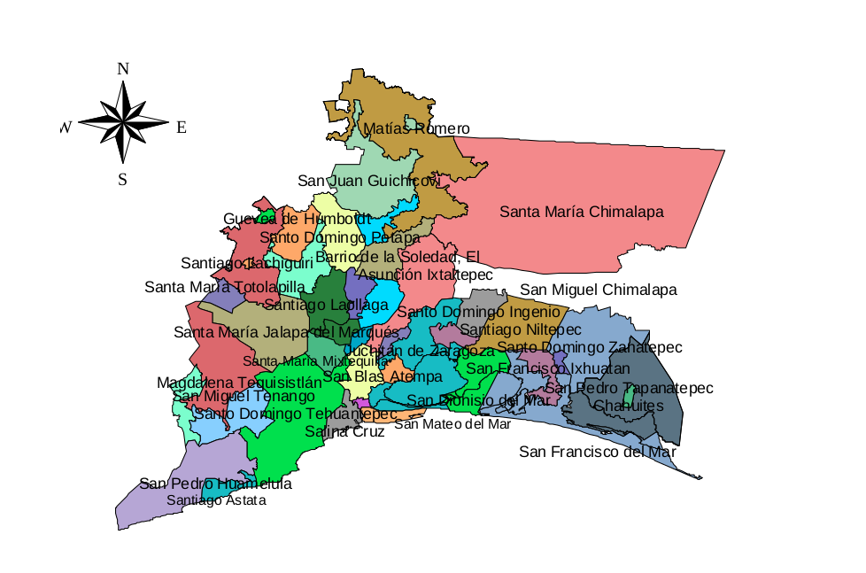
3. El origen de los mixes
3.1 Raíz mixe: Referencia de la cultura olmeca.
Para conocer el origen de la etnia mixe, es necesario referirnos a los olmecas, este término náhuatl significa ‘país del hule’ (ulli, hule o caucho). Los olmecas fueron un pueblo del sur del golfo de México que originó la más antigua civilización en Mesoamérica (México y América Central), y cuyo esplendor se fecha desde aproximadamente el 1500 hasta el 900 a.C. Su área central ocupó unos 18.000 km2, en las pantanosas selvas de las cuencas ribereñas de los actuales estados mexicanos de Veracruz y Tabasco. Su influencia se extendió gradualmente hasta las tierras altas de México, esto es, el valle de México, conocido como el Anáhuac, y los actuales estados de Oaxaca y Guerrero, por lo que influyeron en otras culturas posteriores como la mixteca y zapoteca.
Los olmecas, fueron los primeros en emplear la piedra en la arquitectura y escultura, a pesar de tener que extraerla de los montes de Tuxtla. Sus obras escultóricas incluyen tanto las colosales cabezas masculinas de basalto de 2.7 m de altura y 25 toneladas de peso como pequeñas estatuillas de jade que pueden observarse, junto a otros productos olmecas, en la ciudad mexicana de Villahermosa. Su sistema de escritura fue el precursor de los jeroglíficos mayas, y es probable que el famoso calendario maya se haya originado en la cultura olmeca.
La civilización olmeca dejó establecidos patrones de cultura que influyeron en sus sucesores en los siglos venideros; por ello está considerada como la cultura ‘madre’ más importante de México2. En este sentido, los últimos estudios sobre la lengua mixe nos remiten a la cultura olmeca. Así, idioma ayuuk (Mixe) es una lengua milenaria que posee historia y estructura propia. Recientes investigaciones de John S. Justeson y Terrence Kaufman nos plantean una hipótesis sobre su posible origen olmeca, la cual nos acerca más a creer que esta hipótesis puede ser cierta, ya que en la región se han encontrado algunos vestigios arqueológicos parecidos a las de esta gran cultura. Kaufman escribió lo siguiente después de haber estudiado una estela descubierta en La Mojarra, Veracruz, en 1986:
“El desciframiento de parte de la escritura epi-olmeca del México antiguo fue posible por el descubrimiento de una estela con una larga inscripción en La Mojarra, Veracruz, México en 1986. Este desciframiento se basa en una reconstrucción de las etapas iniciales de lenguas que se hablaban en la región, así como en claves semánticas obtenidas por comparación con prácticas culturales y con otras tradiciones de escritura del sur de la antigua Mesoamérica. Aquí se resume el estado actual del desciframiento fonético, los métodos usados para el desciframiento y los resultados concernientes a la lengua y la escritura epi-olmeca. La lengua identificada en las inscripciones es el pre-proto-zoque, el ancestro de cuatro lenguas que se hablaban en los Estados de Veracruz, Tabasco, Chiapas y Oaxaca. El desciframiento contribuye al conocimiento de la historia antigua de la lengua Mixe-Zoque. Esta escritura está relacionada más cercanamente a la escritura jeroglífica maya que cualquier otra escritura antigua mesoamericana, y ésta relación es más estrecha de lo que ha sido reconocido previamente.
Aproximadamente entre el 150 a. C. y 150 d. C. floreció una tradición escrita distintiva en el sur de México, en el corazón geográfico de la previa civilización olmeca. Nos referimos a esta tradición como epi-olmeca, debido a que las culturas arquelógicas del área descienden de la de los olmecas (1200 a. C. a 500 d. C.) La escritura misma puede ser descendiente de un sistema jeroglífico olmeca, pero muy poco se ha recobrado de la escritura olmeca para confirmar o refutar cualquier conexión. Esbozamos aquí nuestro desciframiento parcial de este sistema, así como la evidencia para este desciframiento. Las claves de nuestro desciframiento son el descubrimiento de un texto largo en esta escritura; el presupuesto de que los textos están en lenguas mixe-zoques; nuestro análisis de las estructuras gramaticales de los textos disponibles; una explicación de estas estructuras en términos de la gramática del proto–mixe–zoque previamente reconstruida; y, claves del significado de palabras a partir de restricciones calendáricas y de la comparación con signos mayas similares, que nos permitió correlacionar palabras descubiertas fonéticamente con el vocabulario del proto-zoque y el proto-mixe...”3
4. La lengua mixe
Los primeros intentos de clasificación de este idioma se remontan a principios de siglo. Los estudios más relevantes son los de Pimentel (1903), Belmar (1905), Jiménez Moreno (1936), Wonderley (1949), Sapir (1963), Brinton (1946), Swadesh (1960) y Kaufman (1963). En la mayoría de estas clasificaciones el idioma mixe aparece asociado al gran grupo maya y al subgrupo mixe-zoqueano. Sin embargo, recientemente algunos estudiosos han propuesto la asociación de este subgrupo con el tronco olmeca.
En la clasificación propuesta por Swadesh, con base en el método grotocronológico, este subgrupo aparece dentro del macro maya, bajo la denominación de tronco mixeño, subdividido, a su vez, en los grupos zoque, popoluca y mixe. La formación del macro maya se estima en unos 96 siglos como mínimo y la separación del mixeño, en unos 35. (1960: pp. 158 y 188). Dentro de esta clasificación se señalan marcadas divergencias entre estos tres subgrupos y el zoque aparece cubriendo una porción del sur de Veracruz, del extremo este de Oaxaca y del oeste de Chiapas. El popoluca se sitúa en el sureste de Veracruz y una pequeña porción de Chiapas, y el mixe en el noreste de Oaxaca.
Dentro de la clasificación propuesta por Wonderley y Kaufman la familia mixe-zoque aparece dividida exclusivamente entre estos dos grupos. El popoluca propuesto por los otros estudiosos desaparece y se incluye como: a) mixe de Veracruz, registrado actualmente en Sayula y Oluta, b) mixe de Chiapas, reconocido también como tapachulteco por su zona de adscripción en Tapachula y prácticamente sin ningún hablante en la actualidad, y c) zoque de Veracruz, localizado en las regiones de Soteapan y Tequixtepec (Texistepec). (Gutiérrez, 1993).
Esta clasificación parece resultar más exacta si tomamos como referencia las situaciones de interlegibilidad que marcan los propios hablantes del idioma mixe de la parte baja del área de Oaxaca, quiénes sostienen que pueden comunicarse con los hablantes de Sayula y Oluta; así como los recientes estudios de un lingüista hablante de la región de Soteapan sobre la duración vocálica del protozoque del Golfo, que revelan que el idioma mixe de Oaxaca y el de Sayula presentan procesos similares de contracción morfológica. (Ibíd.).
De ahí que las fronteras lingüísticas del área mixe, al igual que acontece al interior del estado de Oaxaca, donde los límites municipales se diluyen para dar paso a la expansión de esta área, quizás deban marcarse en el extremo noreste más allá de los límites de Oaxaca hasta la región de Sayula y Oluta en el estado de Veracruz.
Los estudios realizados por varios etnolingüistas mixes, en los que participó Albino Pedro Jacinto, a nivel dialectal, este idioma presenta tres grandes macro-variantes: la de la alta, la media y la baja. En términos fonológicos estas variantes se diferencian fundamentalmente por su sistema vocálico y los procesos de palatalización. En la variante de Totontepec se registran nueve vocales, en la de Tlahuitoltepec, ocho y en la de Guichicovi, seis. Según Schoenhals el número de vocales que aparece en la parte alta se debe a un proceso de diversificación asociado a la palatalización de las consonantes oclusivas. De ser exacta esta hipótesis, podemos suponer que originalmente el idioma ayuuk presentaba seis vocales y que, como sugiere Foster (1969), los antiguos mixes se asentaban en la región del Istmo de Tehuantepec, junto con los zoques, y que posteriormente se desplazaron hacia el área montañosa del norte que actualmente ocupan. (Foster en: Barabas y Bartolomé, 1984:7). La verificación de esta hipótesis, sin embargo, requiere de un exhaustivo estudio arqueológico de la región a fin de reconstruir los movimientos migratorios de este grupo y sus orígenes ancestrales olmecas o mayances.
5. El origen de los mixes
Existen diferentes versiones sobre la fecha, procedencia y circunstancias del arribo de la nación mixe al territorio Oaxaqueño. Una señala al norte, a través de un posible desembarco en las costas del Golfo de México, otra al oriente, considerando como su punto de partida algún lugar de Centroamérica, y aún de más al sur. Por nuestra parte nos inclinamos a considerar, por su sentido lógico, ya que presenta mayores visos de similitud, que la hipótesis sustentada sobre la procedencia centroamericana de los mixes es la que ofrece un fondo de verdad, puesto que los mismos están estrechamente emparentados y posiblemente formaron un mismo grupo de emigrantes con la familia zoque, que a su vez es de origen maya-quiché, y esto lo corroboran la continuidad geográfica del territorio y las afinidades y semejanzas morfológicas de los lenguajes mixes y zoques. Sin embargo como la nuestra no deja de ser una simple conjetura.
En relación con la procedencia y origen de la comunidad mixe, aparece también el mito y la leyenda que tiene un carácter legendario y conservan un cierto fondo de autenticidad apoyado en la tradición oral. En este caso el mito toma cuerpo en la versión que recogió durante su permanencia en Acatlán, población mixe, el viajero Francés Luis Nicolás Guillemaud que naufragó allá por 1830 frente a la desembocadura del Coatzacoalcos y se internó en territorio oaxaqueño; durante su permanencia en Acatlán, recogió una versión en la que nos dice que los mixes son procedentes del sur, en especial del Perú, país de donde salieron a fines del siglo XIII, y que abandonaron a raíz de la caída de Atahualpa, pero que según se cree que los mixes de mucho tiempo atrás a la conquista del Perú ya estaban establecidos en territorio Oaxaqueño y aún habían infligido serios descalabros a las tropas españolas que trataron de someterlos.
También el señor Alejandro Sánchez Castro presenta los sucesos de los acontecimientos de una historia legendaria de los mixes. Que aparecen navegando en las aguas del río salado un poco antes del año de 1355, internándose en seguida en el territorio en que se asentarían posteriormente y alojándose provisionalmente en la "gruta de siete bocas" o de las "siete puertas" en el margen del río Chuxnaban, en tanto los maayva, "agoreros, adivinos" buscaban el lugar apropiado para el establecimiento definitivo de la tribu; durante esta búsqueda fundan el pueblo de Tlaxcaltepec, primer pueblo fundado por los mixes, particularmente por uno de los asistentes de Cacalilón, hijo de KONG-OY, y posteriormente tiene lugar la fundación del actual Cacalotepec y Jaltepec, fundado por el propio KONG-OY, fabuloso caudillo mixe a quien los investigadores dedican el siguiente párrafo:
“Cuando llegaron los mixes a esta región los gobernaba un rey a quien llamaban pintor, porque era amante de la pintura. Después gobernó el propio príncipe mixe de Jaltepec KONG-OY. De este rey conserva el pueblo mixe un vivo recuerdo y la historia recogió su nombre en sus páginas. Su origen está en el misterio y la leyenda refiere que salió, ya en edad adulta, de una gruta que existe en las estribaciones del nudo Zempoaltépetl, en las cercanías de Atitlán. KONG-OY fue un brillante jefe militar que luchó por su tribu y por la integridad de su territorio; era valiente y diestro para la guerra y su pueblo veía en él no sólo a un guía y jefe, sino a una figura revestida de cualidades sobrehumanas en quien el pueblo confiaba y tenía una gran fe. KONG-OY comenzó su reinado en Jaltepec, pueblo que él mismo fundó. Se sabe por tradición que KONG-OY era un hombre robusto, erguido, que vestía con dos piezas de piel, ceñíase la cabeza con un paño negro, y que a la espalda traía terciadas el arco y un carcaj con muchas flechas, y los pies calzados con huaraches. KONG-OY tenía un consejo formado por nueve personas, que lo ayudaban a gobernar; era amante del progreso y gustaba de la música y la danza; y que reunía a su pueblo para celebrar sus fiestas, en las cuales mataban muchas aves para la comida. Según cuenta la tradición que en la cumbre del pueblo de San Lorenzo, adelante de Mitla, hay una gruta y que ahí habitaba un sacerdote nativo a quien KONG-OY iba a consultar. Agregando que, según lo consigna la leyenda, era tan temible y su aspecto tan imponente que hasta las mismas peñas se inclinaban a su paso, rindiéndole homenaje; y del mismo se refiere que así como no tuvo principio (nacimiento), así también aseguraban que no había muerto. Que lo habían visto venir a la tierra saliendo de una cueva que penetra en los montes, no lejos de Juquila de los mixes; y a este modo decían, que después de haber regido los destinos de su pueblo, quiso apartarse del mundo, entró en la misma cueva acompañado de algunas mujeres y de sus capitanes y cargado con él considerable botín obtenidos de sus victorias, y cerrando por dentro la entrada de la gruta, partió por sendas sólo de él conocidas, a remotas e ignoradas regiones. Tanto alucinó esta fábula a ciertos españoles que en 1655 emprendieron viaje de México, arrastrando a su paso a muchos Oaxaqueños, para explorar la gruta de KONG-OY. Emplearon algún tiempo y dinero en buscar los tradicionales tesoros. En Cacalotepec hicieron algunas excavaciones: extendieron sus pesquisas por otros pueblos; en fin, sacaron en claro la convicción de su engaño. La cueva de Juquila sólo servía de sepulcro a los caciques mixes”4.
Como se ve, la leyenda es pródiga en la concesión de los más singulares atributos a este fabuloso personaje que, al decir del Sr. Angel Taraceno, tuvo su residencia en el Cerro del Rayo, cerca de Totontepec. Pero el periodo de su reinado no está determinado con precisión, y aún en este sentido las opiniones tienen discrepancias, pues, por ejemplo, en el relato del Sr. Sánchez Castro aparece que gobernó a la nación mixe recién establecida en la región, en tanto que el Sr. Padre Gay, consigna que fue combatido por Zaachila I que reinó de 1386 a 1415, y finalmente una antigua tradición que se conserva entre los mixes asegura que KONG-OY fue el último caudillo que los gobernó y que combatió contra los españoles. De todo esto resulta, pues, aceptando como válida la fecha de 1355 y avanzando hasta 1521, año de la primera incursión de los españoles a la región mixe, el fabuloso caudillo tendría una edad de ciento sesenta y seis años...como esto resulta completamente inverosímil, cabe entonces buscar una explicación racional sobre las apariciones simultáneas del mítico personaje en diferentes épocas, suponiendo naturalmente, que las fechas relativas a los acontecimientos en que participó, no están equivocadas, y se nos ocurre pensar, a este propósito, que la clave de la cuestión está en el nombre, pues una de dos, o existió una sucesión de caudillos del pueblo mixe con el mismo nombre, tal como en el caso de los zapotecos, o bien KONG-OY era un nombre aplicado, genéricamente a los jefes, cabeza o principales de la nación, lo cual deducimos del significado del primer elemento de que tal nombre se compone por: KONG, que significa "Jefe, señor". Posiblemente ésta conjetura nuestra esté en lo cierto. Y así lo creemos toda vez que los mixes no conocieron ni el nombre de sus caudillos ni sus acontecimientos históricos, confiando todo a la tradición oral, la cual únicamente consigna o hace memoria de dos reyes o caciques locales, YOVEGAMI, que gobernó en Jaltepec y QUETZIN, una mujer, que reinó en Quetzaltepec. Esta sucumbió a manos de los mexicas.
Según otras fuentes disponibles de varios investigadores, nos dicen que los mixes llegaron a Oaxaca en expediciones sucesivas iniciadas en 1294 y concluidas en 1533 en busca del Zempoaltépetl, lugar en donde se asentaron la mayor parte de la población mixe; únicamente el municipio de San Juan Guichicovi, se encuentra en el Distrito de Juchitán.
Este grupo asentaba sus pueblos regularmente a las orillas de los ríos, considerando para la elección del sitio, la abundancia y pureza de las aguas, la fertilidad del terreno y su disposición a propósito para la defensa en el caso de agresión. Sus casas hechas con pequeños números de piedras, ladrillos o adobes crudos, las paredes encajonados con varas de madera, amarrados con bejucos y cubiertos con plastas de lodo, y el techo cubierto de zacate.
A principios del siglo XVI los mixes tenían por capital a Totontepec, subordinándoseles Juquila, Chichicastepec, Ayutla y otros cacicazgos, entre los que merecían el primer lugar como capital era Jaltepec, como uno de los primeros pueblos que fueron fundados en esa época, situado en la costa del norte, tuvo más de una legua de extensión y cuyos números de habitantes se contaban por los pelos de una piel que guardaban sus Autoridades.5
La capital mixe Totontepec, se encuentra asentada en la eminencia de un collado espacioso a espaldas de la montaña Zempoaltépetl, cerro de los veinte picos o de las veinte divinidades, la mas elevada del Estado de Oaxaca con una altura de 3,397 metros viene a ser la capital de la nación mixe por su riqueza natural, su población, aunque a mediados del siglo XVII sólo tenía unos doscientos vecinos y sobre todo, por haber sido la primera residencia de los dominicos que evangelizaron aquella comarca6.
En resumidas cuentas,el pueblo mixe habita una de las regiones más abruptas del Estado de Oaxaca, en el ángulo noreste del mismo; región montañosa por excelencia donde se genera el macizo orográfico del Zempoaltépetl, nombre que le fue impuesto por los mexicas y el cual significa "veinte cerros", y designado en el lenguaje regional de los mixes ii'xtun, también significa "veinte cerros". Es indudable que la nación mixe habitó en principios, probablemente en forma mancomunada con los zoques, gran parte del Istmo de Tehuantepec, pero finalmente fue reducida al área montañosa que actualmente ocupa, debido al movimiento de expansión de los zapotecas, superiores en números o posiblemente a serias discordias con los mismos zoques7.
6. La resistencia del pueblo mixe
En los tiempos prehispánicos los mixes vivían en cuevas al igual que otras culturas de esa época; en que cada una de ellas se dedicaba a sus quehaceres para sobrevivir, siendo sus principales actividades la casa, la pesca, la recolección y la agricultura.
Desde tiempos remotos, el Istmo de Tehuantepec ha sido un corredor, en donde han cruzado tribus nómadas, después pueblos en busca de un lugar donde establecerse, luego se volvieron rutas de comerciantes que mantenían en comunicación a los pueblos del área de México actual con los de Centroamérica.
En el Istmo existen muchos lugares aún no estudiados, como cuevas y asentamientos humanos. GUIENGOLA, fue un Centro religioso político muy importante, que floreció dos mil años antes de cristo. Se cree que fue fundado por inmigrantes mayas de la región quiché. Posteriormente fueron llagando otros grupos como los chontales, mixes, huaves, zoques, zapotecos y establecieron sus pueblos en las selvas altas del istmo de Tehuantepec y fueron marcando su territorio. A veces había problema entre ellos, pero todo se solucionaba. Sin embargo, mantenían relaciones y hasta establecían alianzas a través del matrimonio.
Los mixes por su asentamiento en un área muy conflictiva, provocó constantes enfrentamiento que tuvieron que recurrir frecuentemente a las armas para defenderse de las agresiones de sus vecinos, particularmente de los zapotecos que rodean su territorio por los cuatro puntos cardinales y los cuales les hacían constantemente la guerra, confinándolos cada vez más al territorio montañoso que ocupan actualmente. Refiriéndonos a su espíritu combativo de los mixes, el Sr. Angel Taraceno dice que "militarmente eran sumamente agresivos y que su táctica era superior a la de los Zapotecas y los Mixtecas"; sus armas consistían en largas lanzas con puntas de pedernales y se cubrían con grandes escudos de la longitud de todo el cuerpo, según dice Bernal Díaz”8.
En estos mismos siglos XIV y XV, el ejército mixe que fue dirigido por Kong-Oy, sostuvieron un fuerte combate contra Zaachila I, quien comandaba a los zapotecas y mixtecas en esa época. Refiriéndonos al invencible Kong-Oy, nadie había tenido la gloria de vencerlo; antes bien, temerosos de su indomable valor, pero recelando que por si solos fueran insuficientes para destruirlo, los zapotecos del Valle y los de la sierra, conjuntamente con los mixtecos formaron una alianza. Coaligado los ejércitos y conducidos por Zaachila I, se situaron al pié del Zempoaltépetl, en cuyas gargantas y desfiladeros tenían su campo los mixes. A pesar del prodigioso número de soldados que comandaba la liga, no tenían confianza en la victoria, en lugar de acometer a Kong-Oy en sus posesiones, determinaron incendiar los grandes bosques de la montaña, creyendo reducir por este medio al extremo a Kong-Oy. Las teas incendiarias discurrieron en todos sentidos, y pronto no se vio en torno de la montaña sino un círculo inmenso de fuego que se iba estrechando a medida que las horas corrían, alejando hacia el centro a las fieras que espantadas se mezclaban con los defensores, huyendo en confusión a las cumbres. La hierba desaparecía rápidamente convertida en cenizas, mientras los orgullosos pinos y los cedros seculares se rompían con estruendo y rodaban ardiendo a los profundos barrancos. No tardó mucho el Zempoaltépetl en quemarse de su raíz a la cima, ofreciendo el espectáculo de un mar inmenso de llamas, cuya luz rojiza reflejaba en las montañas vecinas, en forma de enormes cúmulos, subía imponente a confundirse con las nubes. En una área de cincuenta leguas desapareció toda vegetación a los pocos días, no quedando sino restos humeantes del voraz incendio; este procedimiento redujo a los mixes a una situación económica extrema, pues aparte de que el fuego destruyó sus casas y cultivos, ahuyentó a la mayor parte de los animales selváticos cuya caza constituía una de sus principales fuentes de sustento; pero Kong-Oy no fue por eso vencido, pues sus enemigos nunca pudieron apoderarse de los picos y cuevas en que se habían refugiado los mixes; antes bien, aquella medida salvaje irritó más los ánimos de los mixes, encendiendo entre las partes contendientes un odio implacable que después se pronunciaba sangriento a la más leve ocasión. En efecto, sin llegar a su término la campaña, los zapotecas se retiraron, dejando guarniciones hacia Nejapa, en algunos pueblos de los que pudieron conquistar, para contener la venganza de los mixes que, por allí como una avalancha, podían precipitarse de sus montañas y derramarse en el Valle; pero desde entonces, unos y otros fueron constantemente opuestos, haciendo los últimos demasiado sensible su resentimiento, tanto como su fuerza, robustez e indomable orgullo, acometieron frecuentemente a las poblaciones colindantes y especialmente a los Netzichu del Rincón, fueron en lo sucesivo víctimas de toda clase de represalias por parte de los mixes, situación que se prolongó hasta los días de la conquista9.
Tiempo después los mixes tuvieron que resistir la segunda gran ofensiva de los zapotecas, bajo el reinado de Zaachila III; en esta ocasión les fueron arrebatados los terrenos que poseían en los actuales pueblos de GUIEGOLANI, QUIECHAPA y QUIAVICUSAS, y fueron aislándolos hasta la parte sur de Veracruz, estableciéndose las avanzadas zapotecas más adelante de Nejapa, cerca de los pueblos de Majaltepec y Laxhixonaxe. Este Majaltepec no existe en la actualidad. Probablemente el nombre está adulterado y se trata de Mecaltepec.
Los mixes tuvieron que defenderse también de los ataques de los mexicas, habiéndose registrado el primer encuentro con éstos en los años de 1436 a 1464, según lo refiere el Sr. Sánchez Castro, ocasión en que un grupo de emisarios de Moctezuma Ilhuicamina cruzó por el territorio de aquellos con rumbo a Coatzacoalcos, en procura de algunos efectos que éste solicitaba de los moradores de la indicada región, entre éstos algo de oro y piedras finas. Después, bajo el mando de Ahuitzotl y en la expedición que este monarca envió a Xoconochco (Soconusco) en 1482-1502 y la cual penetró en Guatemala y llegó posiblemente a Nicaragua; también fueron develadas (descubiertas) las poblaciones de Mazatlán y Jaltepec por el ejército mexica al mando de Tlitototl, motivando esta invasión el hecho de que los mixes hubieran interceptado a los aztecas el paso hacia Coatzacoalcos10.
Finalmente, entre 1503 y 1520 Motecuhzoma Xocoyotzin llevó nuevamente la guerra al territorio mixe, campaña que el Padre Gay relata con todos sus pormenores e incidentes en la siguiente forma:
"...Es evidente que los mexicanos no recibieron pacíficamente semejante desaire (la resistencia de los Chinantecos a seguir pagando el tributo y el bloqueo del paso hacia Coatzacoalcos, que mantenían los mixes), sino que, levantando con sus aliados un fuerte cuerpo de tropas, se dirigieron a los rebeldes. Los ramales de la cordillera que atraviesa Oaxaca se abaten hacia el norte; llegando a extinguirse en una vasta llanura que desde el pie de la sierra se dilata hasta la orilla del mar. Esta gran llanura se ve cortada por caudalosos ríos, cuyas márgenes antiguamente estaban muy pobladas. Jaltepec, habitado por mixes, se distinguía entre los demás por sus hermosos edificios que se sucedían por más de una legua, como ya se dijo antes, y cuyos habitantes eran tantos que las autoridades, los contaban por los pelos de una gran piel, según afirma Burgoa: este era un pueblo que se había puesto a la cabeza de la insurrección. Para resistir a los mexicanos, los mixes habían acumulado por todas partes obstáculos que hiciesen imposible o por lo menos muy difícil la marcha de un ejército, practicando las excavaciones, abriendo profundas zanjas por los caminos y levantando albarradas, cerrando la entrada de sus pueblos y rodeándolos de palizada y fuertes reparos de mampostería. Moctezuma, que dirigió personalmente esta campaña, sentó sus reales a la vista de Jaltepec; y para no proceder inconsideradamente, determinó, ante todo, practicar un reconocimiento del campo contrario. Sus exploradores le dieron la noticia de que los mixes estaban con poca vigilancia, y como prueba del descuido a que se abandonaban, le presentaron piedras de moler, torteras, escudillas y otras vasijas de barro tomadas del campamento enemigo, y aún algunos niños sustraídos del lado de sus madres entregadas al sueño. Tanto descuido hizo comprender al general mexicano que le sería fácil obtener la victoria. Sin perder los momentos, dividió su ejército en tres secciones: señaló a los Texcocanos y Tepanecas, generales valientes y expertos que los dirigiesen en el combate, y poniéndose él mismo a la cabeza de los aztecas, dió a Jaltepec tan duro ataque, que los rindió. La misma suerte corrieron otros pueblos. Los vencidos se refugiaron en una montaña del Istmo, "Quetzaltepec", en la que se pudieron salvar.
Al hablar de los combates de que fue teatro esta montaña, Durán parece dar a entender que Totontepec y Quetzaltepec eran pueblos cercanos, ligados por intereses comunes, y gobernados, si no por idénticos señores, con tal subordinación del uno al otro, que al mandato del cacique de Quetzaltepec, los dos pueblos se hubiesen levantado en armas contra los mexicanos, siendo igualmente ambos vencidos por el mismo ejército; lo que no es exacto, pues Tututepec está situado en las orillas del pacífico, cerca de lo que es hoy el Estado de Guerrero y fue habitado siempre por mixtecas, mientras Quetzaltepec, habitado por mixes, se aproxima al mar del Norte, casi en los linderos de Chiapas y Tabasco. (En esta consideración incurre en un error el Padre Gay, pues confunde por lo visto, Tututepec, que ciertamente está en las playas del Pacífico, con Totontepec, pueblo mixe cuyas gentes sí pudo haber acudido en auxilio de Quetzaltepec). Quetzaltepec era (y lo es) un pueblo situado en una montaña inaccesible en que se ven aún restos de fortificaciones antiguas y que se levanta en el Istmo en las cercanías de Jaltepec, de que acaba de tratarse. El cacique de Jaltepec estaba sujeto al de Quetzaltepec; por su mandato debe haber tomado las armas contra los mexicanos, y los mixes, vencidos en el primero de estos pueblos, deben haberse amparado en las fragosidades del segundo”.
Durán dice que la causa de esta guerra fue el asesinato de cien mexicanos comisionados por Moctezuma para pedir "una arena apropiada para labrar las piedras y también el esmeril para brunillas y ponellas muy limpias y resplandecientes"; petición que no sólo desechó con enojo el mixe, sino que insultó a los mexicanos: diciéndoles que sin duda se le acercaban con tanto atrevimiento porque hasta entonces no habían probado en un combate su valor, pero que tenía determinación de pelear con ellos con todo su poder; y pasando de las palabras a los hechos, les mandó matar y arrojar sus cadáveres en el río que lleva el nombre del pueblo.
Para vengar este cruel insulto, Moctezuma marchó hacia Quetzaltepec, a la cabeza de cuatrocientos mil soldados. Los mixes, a las escabrosidades de la montaña habían agregado cortaduras, palizadas y trincheras que hiciesen más difícil la subida; y en torno del pueblo habían levantado cinco murallas, en las cuales la primera tenía "seis brazadas de alto y seis en ancho". Moctezuma quiso tomar la plaza por sorpresa; mas los Quetzaltepecanos, le demostraron con sus armas que no dormían, como los de Jaltepec, al frente de sus enemigos. Estos quisieron dar un asalto al pueblo a la luz del día; pero los mixes tenían deseos tan vivos de combatir, que saliendo de sus atrincheramientos, se adelantaron a recibir en campo abierto a los asaltantes. La lucha fue terrible: se combatió todo ese día; la sangre se derramó copiosamente, resintiendo sensibles pérdidas los dos ejércitos; más, al fin, los mexicanos hubieron de retirarse, quedando por los sitiados la ventaja.
Del mismo modo y con idéntico resultado se peleó el segundo día; mas apurando sus esfuerzos al tercero y sacrificando mucha gente, pudieron los mexicanos acercarse al primer atrincheramiento y aun apoderarse de él a viva fuerza. Tres días batieron sin resultado la segunda muralla; mas al fin, escalando los unos, mientras otros practicaban cuevas subterráneas por muchas partes, pudieron entrar en el pueblo, cuyas calles y casas encontraron desiertas. Los mixes habían tenido tiempo de poner a salvo no sólo a sus mujeres e hijos, sino aún sus riquezas y guerreros. Los despojos de la victoria fueron ningunos. Durán dice que en virtud de tratados y pactos de amistad y paz celebrados entre los Quetzaltepecanos y Moctezuma, aquellos poblaron otra vez la ciudad que habían desamparados más ameritados; lo que nos revela que realmente el pueblo no fue entrado a viva fuerza, pues según costumbre, hubiera sido asolado por los vencedores, que hubieran llevado a México y sacrificado ante sus dioses gran número de prisioneros. Burgoa, que conocía bien a éstos, entre quienes vivió recogiendo sus tradiciones, está tan lejos de creer que haya sido tomado Quetzaltepec por los mexicas, que aun a la ruina de Jaltepec la atribuye mejor que a éstos a las guerras de Kong-Oy"11.
Poco tiempo después de esta sangrienta y última campaña de los mexicas en territorio Oaxaqueño sobreviene la conquista española con lo cual cambian algunos actores y otros no como veremos más a delante.
7. Llegada de los zapotecos al Istmo de Tehuantepec.
Durante la época prehispánica, zapotecas12 y mixtecos lucharon unos contra otros por poseer el dominio de los Valles centrales de Oaxaca. Como resultado de esa lucha, los zapotecas abandonaron varios pueblos, hasta que muchos de ellos se retiraron a las regiones montañosas del noroeste del estado y al Istmo de Tehuantepec quedando solo como asentamiento importante Zaachila. Así, por las presiones que los mixtecos ejercieron sobre los zapotecos alrededor del año de 1487, un hijo de Zaachila III, llamado Cosijoeza, tuvo que alejarse al Istmo donde se estableció con un grupo de sus seguidores. Fundó así el reinado zapoteco de Tehuantepec. Los zapotecos construyeron una fortaleza a la que se conoce como Guiengola, muy bien situado a la entrada del Istmo. Estos no permitían fácilmente el paso de los comerciantes aztecas por el istmo de Tehuantepec, razón por la cual, los aztecas enviaron a sus ejércitos para someter a los zapotecos del istmo. Los aztecas les interesaba comerciar con la región del Soconusco, para hacerlo debían pasar por el istmo de Tehuantepec. Los zapotecos y mixtecos se aliaron para pelear contra los mexicas o aztecas. Durante 1495, según cuentan las crónicas, los aliados vencieron en la fortaleza de Guiengola a los aztecas. También se dice que después hubo una alianza matrimonial entre una hija del emperador azteca Moctezuma y el hijo de Cosijoeza. Sobre esta alianza no se tiene muchos datos, pero se sabe que al llegar los españoles a tierras Oaxaqueñas, los zapotecos de Tehuantepec pagaban tributo a los aztecas13.
Contamos con otra versión basada en lienzos coloniales que se refiere a una primera ola de migración zapoteca al istmo hacia 1370 bajo el gobierno de Cosijoeza II Agua, señor de Zaachila (Teozapotlán). Menciona que después de varios cismas dentro de la familia reinante en Zaachila, en algún momento entre 1440 y 1450 Cosijopí I dejó su centro de poder por problemas con los mixtecos y se instaló en Tehuantepec, derrotando a los huaves, quitándoles sus tierras y salinas y replegándolos al mar. Su hijo Cosijoeza I heredó este cacicazgo y murió unos 20 años antes de la conquista. Uno de sus grandes logros sería el matrimonio con una princesa mexicana, con quien tendrían varios hijos entre ellos Cosijopí II o Juan Cortés, quien quedó como señor de Tehuantepec14.
Cabe destacar que los zapotecos que llegaron al istmo de Tehuantepec desplazaron poco a poco a los pueblos de otras etnias que habitaban ahí. Así, los huaves se replegaron hacia la costa, en el golfo de Tehuantepec, los mixes hacía las montañas del noroeste y los zoques a la selva de los Chimalapas.
8.1 La fundación del pueblo.
8.1.1 Leyenda de San Juan Guichicovi.
Cuentan los ancianos que hace mucho tiempo, llegó un grupo de gente que hablaban la lengua mixe en un lugar que hoy se llama San Juan Viejo, pero no se sabe exactamente de donde vinieron. Anteriormente contaban los abuelos a sus hijos y sus nietos que ahí en San Juan Viejo existió un grupo que no sabían de donde eran, y entre ellos venía uno llamado Pedro. Este grupo empezó a construir una Iglesia para el santo San Juan Bautista, que ellos traían grabado en un pedazo de madera. Este santo pesaba mucho y cuando no le gustaba el lugar a donde llegaban se ponía liviano, esta gente empezó la construcción de la iglesia con los materiales que poco a poco iban juntando; unos se dedicaban a cavar positos y buscar arroyos, otros a tumbar montes y sembrar flores, albahacas, espíritu y cordoncillo, esta plantas no prosperaban ya que luego se secaban, y en los positos no encontraban aguas. Ellos se ponían a pensar en todas estas cosas que les sucedía y hubo un día que fueron a mover el santo y éste estaba liviano, no pesaba nada, ésta fue la señal que el santo daba de que no quería estar ahí y el motivo por el cual no quería darse ninguna clase de siembra y había escasez de agua.
Entonces este grupo mixe rezó y levantó al santo para seguir avanzando y buscando tierras fértiles para establecerse, al pasar por Huisicil y Palomares, ahí Pedro se desapartó del grupo, ya no quiso seguir con ellos y los demás siguieron caminando para seguir buscando el lugar adecuado.
Desde que se separó del grupo se fue a trabajar a Sarabia con un ganadero que hablaba el español, ahí estuvo trabajando como caporal y aprendió a manejar esa lengua. Ya había transcurrido un buen tiempo de la separación de Pedro de sus compañeros, cuando este grupo ya andaba cerca del rancho donde Pedro trabajaba.
Un día el ganadero le dijo a Pedro que fuera a ver que estaba pasando en el lugar donde se levantaba una columna de humo, pensó que a lo mejor se estaba quemando alguna parte de su propiedad, Pedro obedeció, ensilló un caballo y se dirigió al lugar señalado; al llegar al sitio indicado, ahí estaban sus compañeros que él había abandonado antes, todavía estaban en busca del lugar adecuado para establecerse. Este grupo al ver que se acercaba Pedro, empezaron a correr, lo desconocían porque él estaba bien vestido y hablaba bien el español, al ver que sus compañeros huían, empezó a gritarles.
–Esperen no corran de mi, soy Pedro Sarabia a poco ya no se acuerdan de mi. Entonces en este grupo andaba un hombre que se llamaba Juan José, amigo íntimo de Pedro, él también corría, Pedro llamó a Juan por su nombre y le dijo que esperaran, al reconocer a Pedro todos salieron de su escondite y quedaron admirados porque él ya hablaba el español y andaba muy bien vestido.
Pedro empezó a platicar con el grupo y les dijo:
– A poco todavía andan por aquí, yo pensaba que ya habían encontrado un lugar donde establecerse. Pedro al estar dialogando con el grupo mencionó que durante su separación, trabajaba como mozo caporal de un ganadero, éste señor le había enseñado a hablar el español, y además ya conocía muchos lugares, les comentó que conocía un lugar muy bueno, tierra fértil, con muchos nacederos de agua, y para poder llegar a ese lugar, tendrían que caminar un largo tramo hacia el Sur, les dio todas la señas del lugar indicado. Que ahí había un árbol de guapinol, una seiba y uno de abila. También les indicó que siguieran por donde él pasó y no tenían porque perderse, ya que estaban marcadas los árboles con machete como señas para llegar a ese lugar. Son las indicaciones que dio Pedro al grupo para que pudieran llegar a ese sitio.
El grupo se despidió de Pedro, quien regresó nuevamente con su patrón. Ellos tomaron el rumbo que se les indicó.
Después de una larga caminata, se quedaron a descansar un buen rato, pero ellos no se daban cuenta sí habían llegado al lugar indicado por Pedro, se quedaron a descansar en ese lugar porque ya iban muy cansados y llevaban cargando su ídolo al señor San Juan Bautista. Cuando quisieron retomar su camino, intentaron de levantar al santo con los rezos que acostumbraban, hicieron su primer rezo y no lograron levantarlo, pesaba demasiado, luego hicieron el segundo y el tercero, ni aún pudieron levantarlo. Entonces dijeron que ahí era el lugar donde el señor San Juan Bautista le había gustado para quedarse. Empezaron a explorar el terreno y vieron que por donde quiera había nacederos de agua, además, encontraron los tres árboles que Pedro les había indicado: el guapinol, la seiba y la abila, junto a estos tres árboles dejaron colocado el santo y ellos se quedaron a vivir ahí.
Empezaron a desmontar el lugar elegido, luego sembraron flores, albahacas, espíritu y cordoncillo para ponerle ofrendas al santo, estas siembras a los tres días todas empezaron a retoñar y a florear. Cavaron también sus positos para beber agua y en un momento todos los positos se llenaron de agua.
Asimismo comenzaron a medir el terreno para construir una ermita para el señor San Juan Bautista, que para ellos era lo más importante; al terminar la construcción de la obra colocaron al santo patrón entro de la ermita. Así permaneció mucho tiempo. Al último empezaron a construir sus chozas, y después se dedicaron a sembrar sus milpas.
Conocían la casería y la pesca. En aquella época había muchos animales salvajes, ya que eran selvas vírgenes, conforme fue transcurriendo el tiempo la población creció.
Ahora, por la tradición oral de los ancianos, nos cuentan que la iglesia grande de San Juan Bautista, la construcción fue dirigida por los españoles. Al llegar los españoles a éste lugar se dieron cuenta que era muy bueno y el terreno fértil para quedarse a vivir.
Lo primero que pensaron fue en apoderarse de las tierras de los mixes; y matando a todos ellos quedarían como dueños. Los españoles buscaron la forma de cómo acabar con nuestros antepasados, dijeron que se iba a construir una iglesia grande para el santo San Juan Bautista, pero, para lograr la mencionada obra los indígenas tenían que trabajar duro aportando mano de obra.
Se empezó las actividades de la construcción y los españoles nada más dirigían el trabajo, daban las órdenes a los mixes, la faena era muy pesada, ya que tenían que acarrear piedras muy grandes y lejos del pueblo: desde el Río de Pachiñé Encinal hasta San Juan Guichicovi, lo hacían formando una cadena y así, éstas piedras se las iban rolando hasta llegar a la construcción.
Cuando la iglesia estaba casi por terminar, los españoles (agáts) ejecutaron un plan para matar a los indígenas, desde arriba de la construcción, a propósito dejaban caer las piedras sobre los trabajadores mixes, quienes se morían al instante por decenas diariamente con los golpes que recibían; los españoles decían que eran los propios indígenas los que provocaban los accidentes porque no aguantaban las piedras y así diariamente se iban muriendo.
Entonces fue que apareció un sacerdote, pero no sabían de donde venía, él orientó a los mixes para correr a los españoles de ese lugar, les dijo que oraran y rogaran a Dios para que enviara una epidemia a los españoles, y que él iba a hacer tres misas. Dios escucho los ruegos e invocaciones que los indígenas hacían, pues muy pronto cayó un mal sobre la población, era una epidemia de la viruela que día con día mataba a muchos españoles y por parte de los nativos ninguno moría. Al ver los españoles que morían mucho de sus compañeros, estos abandonaron el pueblo porque decían que ahí ya había entrado el diablo.
Desde entonces la iglesia quedó inconclusa: solamente techaron una parte y otra mitad sin techo, que hasta la fecha se conserva como la dejaron los españoles.
Como se había dicho antes, según los conocimientos orales de los ancianos, cuentan que dentro del grupo de peregrinos era de nueve personas; cinco hombres y cuatro mujeres, que tenían por nombre Gaspar, Melchor, Gabriel, Martín, Juan, María Ana, María Mona, María Teresa y María Rosario.
Es por ello que en la actualidad, en cualquier rezo, responso y ceremonias religiosas, mencionan los nombres de las nueve personas, porque ellos fueron los primeros pobladores del pueblo, además, se les rinde también sus tributos en la fiesta de todos santos, poniéndole sus ofrendas que consisten en cañas, maíz, naranjas, velas y veladoras para los espíritus de estos personajes. Es por eso que actualmente se venera todavía estos nombres en la población de San Juan Guichicovi, Oaxaca.
8.1.2 La leyenda de San Juan Guichicovi y Mazatlán.
Existen otras versiones sobre la fundación del pueblo de San Juan Guichicovi. Para algunos ancianos de San Juan Mazatlán, San Juan Jaltepec de Candayoc y San Juan Guichicovi, cuentan que nuestro pueblo se haya fundado durante la época de la conquista, allá por el año de 1560, por una tribu que se formó para segregarse de un pueblo llamado San Juan Cotzocón; cuyo motivo fue por los tratos rudos
que recibían de sus opresores españoles.
El relato que nos contó don Juan Gregorio Domínguez (†), dijo que la idea de segregación de la tribu se originó entre dos hombres
llamados: Juan Pedro y Pedro Mariano, los dos, decididos, con carácter firme e imponentes.
Estos hombres convencieron al sabio que se decía agorero llamado Antonio Acevedo. Este personaje antiguo no se negó en secundar la idea aventurera, ya que se trataba de liberarse de los malos tratos inhumanos que recibían de sus invasores, a pesar de que les esperaba el mal paso de los tiempos venideros, pero que quizá más allá del horizonte, hallarían el lugar para ellos y para sus seguidores, ya que el sueño del agorero indicaba ser libres, pero sólo si se marchaban rumbo al oriente; que allí estaba la tierra asignada para ellos y para sus descendientes, porque supuestamente de donde sale el sol vinieron sus antepasados. Dichos personajes convencieron también a más de 50 familias para iniciar la peregrinación sin retorno.
Para marcharse de Cotzocón, tenían que llevarse a sus dos Santos: San Juan Bautista el mayor y el menor, porque anteriormente, en Cotzocón estaban los tres San Juanes. Xandiin Manëëd era el personaje encargado de robarse a los dos Santos mencionados, de los cuales logró extrayéndolos de la iglesia ingeniosamente y con mañas.
Día tras día caminaron, y a los cuatro días de jornada larga, llegaron a un lugar en la claridad de la selva; los principales y los guías opinaron que aquel lugar estaba muy bueno para establecerse, ya que rumbo al oriente se veía una montaña cerrada y con mucha espina de chontal y además había un río grande que cruzaba en medio de la selva. Así, después de muchas discusiones entre los dos Jefes y los principales, por fin convinieron acamparse en ese lugar, que hasta la fecha se llama Kong Tëgëx Gëëp, cercano a Tutla Viejo.
Allá estuvieron por espacio de seis años o más, a tres kilómetros estaba el río grande que hoy se llama Río Aguacatengo, cerca de San Juan Mazatlán. De este río pescaban por medio de anzuelo. Contentos y muy a gusto estaban viviendo, pues la tierra producía mucha milpa, chayote, yuca, calabaza, y en especial se daba mucho algodón. Cuando más estaba reinando la felicidad debajo del tiempo primaveral, nadie se imaginaba de buscar otro horizonte.
Pero en un mes de mayo, cuando las cosechas de algodón estaban en su apogeo, de improviso vino un cruel acontecimiento; dicen que fue poco después del medio día, cuando el poblado se hallaba de fiesta y en el preciso momento en que se les habían servido sus manjares; la fiesta se estaba celebrando debajo de una choza sin paredes, por lo que todos los platos de barro se llenaron de la polvareda de tierra y empezaron a caerse algunas chozas en medio de este ventarrón. Ante este acontecimiento nadie pudo probar su alimento.
En medio de ese ventarrón con furia, a la vista de todos los presentes, se veía pasar un ave raro, nunca antes visto, y conforme movía las alas se oía un canto raro. Su vuelo era de norte a sur; los gajos de algodón, desde el campo al aire se esparcieron. Todas las plantas de cultivo fueron arrasadas por el ventarrón, que primero fue en seco y después vino el granizo, con trozos de hielo que llovían. Todo lo acontecido hizo pensar al agorero hacia el designio del Dios de la tierra (Naxwiinbë). Los sucesos percibidos eran el enojo de Dios y si seguían permaneciendo en este lugar, todos tendrían que perecer, sin esperanza de vida.
Al enterarse los moradores de estas noticias terroríficas, ninguno quiso permanecer, todos se vieron obligados a marcharse en busca de otros horizontes. Siempre hacia donde sale el sol, según las indicaciones del agorero que señalaban que el lugar para las poblaciones estaba hacia el oriente. Desde este sitio caminaron dos días, no encontraron el lugar apropiado para poblar, hasta que llegaron a un paraje, donde se acamparon en el atardecer; a ese lugar le dieron el nombre de Loma Arremangada, nombre que lleva hasta la fecha. Ahí permanecieron varios días, luego vino un nuevo suceso y abandonaron el paraje.
Después se marcharon a otro lugar en busca de la tierra prometida, ya que en cada lugar que acampaba, sucedían cosas malas. Por la mañana, el agorero comunicó a los principales que el nuevo acontecimiento era una burla del Dios de la tierra, porque el lugar prometido no era ese, que de ahí se retiraran cuanto antes, pero que no fueran muy lejos, que siguieran el rumbo hacia donde los había empujado el ventarrón.
Entonces, ese mismo día se comisionaron a los exploradores y se marcharon inmediatamente. Pronto se vieron ante un arroyo manso que se veía como un lago. Desde ahí se observaba un llano y al margen del riachuelo había tierra baja para las chahuiteras. Tanto les agradó el lugar a los exploradores, que llevaron estas noticias ante sus principales. Inmediatamente se convocó una reunión y convinieron en marcharse al siguiente día hacia el lugar indicado.
Al llegar en este paraje todos se pusieron de nuevo a erigir su templo y la casa del mandatario. Empezaron a posesionarse del lugar y se dedicaron a cultivar la tierra. Unidos vivieron y trabajaron.
Pronto empezaron a contar con la presencia de los frailes misioneros que no tardaron en localizarlos en el nuevo lugar. Los pobladores no les tenían miedo, pues en aquella época los misioneros adoptaban los vestidos y los tratos sencillos de los nativos. No daban la impresión de gente extraña y por ello se contó con las visitas religiosas.
Pero un día, cuando todos los pobladores se encontraban reunidos en la misa matutina, rindiendo culto a San Juan Bautista de acuerdo al evangelio que imponían los Españoles Franciscanos, de improviso llegó un mazate, entró corriendo en el mismo momento que sonaba la campanilla, estaba todo agusanado; corría entre la multitud en medio del templo, quizá buscando alivio a su mal, pero al no hallar paso, salió corriendo, dejando a su paso los gusanos de sus orejas y fétido olor a carroña pestilente; por ello, a partir de esa fecha el pueblo se llama San Juan Mazatlán, San Juan por ser su Santo Patrón y Mazatlán por la presencia del mazate.
El agorero no quedó conforme con la presencia del animal en pena, empezó a sembrar la desconfianza e inconformidad de seguir viviendo en ese lugar; anunciando que tendrían que perecer por alguna desgracia. Sus sueños anticipaban que deberían repartirse en dos grupos e irse los unos con Juan Pedro y los otros con Pedro Mariano. La señal para encontrar el lugar predestinado a Juan Pedro sería la presencia de una luz prendida en un paraje despoblado y la de Pedro Mariano sería la de un ruido terrible. Sólo encontrando cada uno sus lugares, darían final al sufrimiento de aquellos grupos.
Cuando los pobladores se enteraron de los nuevos presagios del agorero, comisionaron a seis personas para ir en busca de los lugares que indicaba el agorero. Desde ese momento se dividieron voluntariamente y pasaron al lado de cada Kong (Jefe). Entonces se comisionaron las personas representativas de cada grupo de tres en tres. Así, un grupo se alistó en busca de la luz prendida en un paraje despoblado y el otro se dirigió en busca del ruido aterrador.
Como los dos jefes se querían tanto escogieron una loma en la que trataron todas estas divisiones sin resentimiento. Sabían que era el designio de Dios, aunque ellos no se quisieron separar, porque guardaban en el interior los recuerdos de lo bueno y lo malo que les había acontecido. La última despedida lo hicieron en esta loma del tratado que dista de Mazatlán menos de tres kilómetros y está situada al norte.
La comisión que se mandó por parte de Juan Pedro se dirigió hacia el oriente. Cuando habían caminado dos días escucharon como un mugido de toro que daba miedo. Corriendo se alejaron de aquel lugar y empezaron el regreso dominados por el pánico y la fatiga. En el atardecer acamparon para pasar la noche debajo de un árbol de ocote sobre el cerro que hasta la fecha se llama Cerro de Buena Vista. Acamparon en este cerro después de tomar atole con cacao, endulzado con panela de la región.
Estaban ya para entregarse a los sueños tristes y pesarosos porque no habían encontrado el lugar que buscaban, cuando de improviso uno de ellos divisó una luz prendida en la punta de una cerrito. Todos ellos contemplaron aquella luz, al día siguiente fueron a cerciorarse del lugar, pues estaba muy cerca de donde estaban. A los cuatro días retornó la comisión de Juan Pedro, la comisión conferida se había cumplido, pues habían hallado el lugar donde poblar. La comisión de Pedro Mariano jamás volvió, aquellos hombres seguramente murieron de alguna forma. Pero la comisión de Juan Pedro platicó claramente que a dos días de camino estaba el lugar donde vieron la luz prendida.
Los principales dijeron que era el lugar de Pedro Mariano, donde habían escuchado el ruido aterrador, únicamente faltaba la guía de la comisión que no había regresado para ir a poblar allá, porque sin duda era el lugar que se buscaba. Así lo hicieron; la gente de Juan Pedro guió a 1a gente de Pedro Mariano y la ú1tima despedida la hicieron, como se mencionó, en la loma del tratado. Juan Pedro se llevó al Santo más grande y el mediano quedó en manos de la gente de Pedro Mariano.
Así el grande se fue a San Juan Guichicovi para siempre y el menor se arrimó cerca de los pobladores que siempre le habían dado el nombre de Amakts Tu’aam, “cuatro caminos” o San Juan Mazatlán. Lo nombraron así porque al llegar los pobladores mazatlecos a ese lugar ya habían caminos: uno hacia San Vicente, que hoy se llama Juchitán, otro a Tehuantepec, un tercero a San Pedro Acatlán y el cuarto a Santiago Tutla. Pero como el pueblo ya se había reconocido con el nombre de San Juan Mazatlán, a los mismos sacerdotes no les convenía darle otro nombre, por eso el pueblo definitivamente lleva ese nombre, porque lo trajo desde Kong Tëj Kuájp “Antiguo Jaltepec”; pero su nombre cierto es Amakts Tu’aam (cuatro caminos). Así se fundaron los pueblos de San Juan Guichicovi y San Juan Mazatlán.
No contamos con información de la existencia de ningún códice que haga referencia a la existencia del pueblo de Guichicovi durante la época prehispánica. Tampoco hemos encontrado en el Archivo General de la Nación el título primordial de la población que pudiera hablarnos de su pasado colonial. Sin embargo, suponemos que antes de la llegada de los españoles ya había mixes en la zona, puesto que Francis y Robert Zeitlin (1990) han encontrado restos arqueológicos y, tanto Francisco de Burgoa en su Geográfica Descripción 15, como el padre José Antonio Gay en su Historia de Oaxaca 16 mencionan este hecho.
Después de la conquista de la región, cuando Hernán Cortés obtiene el Marquesado del valle, el pueblo de Guichicovi aparece dentro de las poblaciones pertenecientes a este último, lo cual nos lleva a suponer que éste pudo haber existido con otro nombre en tiempos prehispánicos o que, en todo caso, fue un pueblo fundado coincidentemente a la llegada de los españoles. Así, desde 1529 hasta 1559, el pueblo de Guichicovi aparece dentro de los límites del Marquesado del Valle, siendo parte de la jurisdicción de Jalapa de Tehuantepec 17.
Los Sanjuaneros cuentan tres versiones míticas sobre la fundación de su pueblo. Algunos aseguran que San Juan Guichicovi se fundo en el año de 1530, cuando algunos grupos mixes se desprendieron de la región del Zempoaltépelt por mandato de su Dios mixe, para buscar mejores condiciones de vida. Se cuenta de una larga peregrinación que salió de la parte alta de la región y que, a lo largo de la travesía, algunos se fueron quedando en diferentes lugares que, al poco tiempo, fundaron sus propios pueblos, como son San Juan Cotzocón, San Juan Mazatlán y Jaltepec de Candayoc. Los últimos integrantes de esta peregrinación fundaron Tëgaam (en mixe “lugar de casas”) o San Juan Guichicovi, como nosotros lo conocemos.
Otros refieren que los españoles, al no lograr la conquista del pueblo mixe por medio de las armas, echaron mano de la conquista espiritual para someter a los indígenas de las serranías al orden colonial. Los frailes dominicos18, que se hicieron cargo de esta empresa, solían vender o dar a cambio de otros productos estatuas de diversos santos a los lugareños. Una de estas familias que había adquirido una figura de San Juan Bautista, decidió migrar hacia las tierras bajas en busca un mejor lugar para vivir. Primero se establecieron en un lugar llamado San Juan Viejo19, pero posteriormente decidieron bajar hasta otro lugar al que bautizaron con el nombre de San Juan en honor al santo que llevaban consigo.
Algunos más relatan que una familia perdió un niño, el cual fue hallado por un español, dueño de una hacienda en el poblado de Sarabia20. Tiempo después hubo un encuentro casual entre el español, el niño y su familia. El español aconsejó a estos últimos que se asentaran en un lugar donde había un árbol de seiba (a unos 25 kilómetros del lugar donde habitaban) porque ahí había suficiente agua y buenas condiciones para vivir.
Los ayuuk “mixes” tuvieron una lucha territorial con los zapotecos que se encontraban dispersos en los alrededores, más salieron triunfantes y permitieron la estadía de algunos grupos de zapotecos que no participaron en la lucha. Fueron estos últimos quienes llamaron al lugar “Guichicovi”, que en su lengua quiere decir pueblo nuevo. Como resultado del sincretismo cultural entre españoles e indígenas se aunó el nombre de San Juan en honor a San Juan Bautista, santo patrono del lugar21.
A partir de estas tres versiones míticas de la fundación del pueblo, podemos inferir que la comunidad es resultado de una migración mixe procedente de la parte alta de la sierra mixe. Las razones de esta migración pudieron deberse a varios factores (sequías, rivalidades entre grupos de la misma etnia, enfrentamientos de miembros de otras etnias o aumento de la población) que no se encuentran entre los relatos obtenidos. El por qué escogieron un lugar con una gran seiba para establecerse, tampoco tiene una explicación históricamente comprobable. Por intuición, podríamos pensar que tiene alguna relación con los mitos mesoamericanos sobre dicho árbol22. Sobre el personaje español, podemos pensar que fue un agregado posterior, si tomamos en cuenta que Guichicovi ya existía desde antes de su establecimiento23 en Oaxaca y que los españoles, como recién llegados no conocían el territorio en cuestión.
Capítulo II. El periodo colonial
El periodo colonial se define al tiempo de la dominación española en el continente
americano y en el resto de los territorios conquistados por los españoles durante los siglos
XVI, XVII y XVIII. Comprende desde la conquista de Tenochtitlán, en 1521, hasta la
época de la independencia en 1821. Durante este tiempo, el imperio español ejerció el
control político, económico, social y religioso de los habitantes de la Nueva España
(nombre que recibió México como parte de las colonias del imperio español) para lo cual se
sirvió, en primera instancia, de la evangelización. Esta última fue conducida por los frailes
de diferentes ordenes religiosas, como lo fueron los franciscanos, dominicos, agustinos y
jesuitas, quienes se encargaron de enseñar la fe cristiana a la población indígena,
aglutinándolos en pueblos organizados en torno a iglesias, muchas de ellas fueron
construidas encima o cerca de lugares sagrados en la época prehispánica. Aunado a la
acción de los sacerdotes, se realizó la organización política en cabildos, para los
asentamientos donde había población hispana, y en repúblicas de indios24, para los pueblos
donde se concentró al grueso de la población nativa.
A la cabeza de la Nueva España se encontraba el Virrey, representante directo de la corona
española en las colonias americanas, acompañado del arzobispo y de los obispos
nombrados desde la península ibérica, después los encomenderos con funciones de control
político regional, seguían los cabildos de las distintas ciudades compuestos en su mayoría
por criollos (hijos de españoles nacidos en América) y las repúblicas de indios. Este es un
esquema general de la organización política en la época colonial.
1. La llegada de los españoles al Istmo
República de indios
La jurisdicción de Tehuantepec es la última del obispado de Oaxaca, y división del de
Chiapas a donde comienza el Reino de Guatemala, para cuyas Provincias es tránsito, y
camino Real de todos los traficantes: la Cabecera principal es el pueblo de Tehuantepec, y
de él toma nombre el territorio, el temperamento de su situación es caliente, y la distancia a
la Capital México es la de ciento treinta leguas por la parte del Norte, con inclinación al
Sur, es la residencia de su Alcalde Mayor y República de Indios con el Gobernador, y
Oficiales, que la componen. Mantiene Convento de Religiosos Dominicos con Cura
Ministro, y los Vicarios correspondientes para su puntual administración, así en esta
cabecera, como en los demás Pueblos, y Barrios sujetos a su Doctrina, y Gobierno; consta
su Vecindario de dos mil, y seiscientas familias de Indios, divididos en tres Idiomas:
Mixteco, zapoteco y mexicano, y aunque en la Cabecera viven muchas familias de Indios,
es mayor el número de otras calidades, porque de Españoles, y Mestizos pasan de cincuenta
familias, y de Mulatos llegan a ciento quince, y de unos, y de otros se forman de
Compañías Milicianas, que recorren la Costa, y hacen sus Guardias, cuando se tiene alguna
invasión por el mar del Sur. Los indios libran su manutención en las siembras de maíz, y
cultivo de muchas frutas, y los demás en el comercio de la sal, renglón de consideración en
aquellas Jurisdicciones.
El Pueblo de Tehuantepec es República de Indios con Gobernador, y Alcaldes, hállase
situado en igual temperamento, que su Cabecera, de donde dista catorce leguas por el
rumbo del Oriente, hay en el Convento de Santo Domingo, Cura Religioso, que administra
ciento sesenta familias, que lo habitan, inclusas las de los Barrios de su Gobierno, con
algunos Mestizos, y Mulatos, que tratan en semillas, y ganado mayor.
El pueblo de Santa María Chimalapa es perteneciente al Gobierno, y Doctrina antecedente,
está situado en frío temperamento entre Norte y Poniente respecto de su Capital, en la
distancia de veinte, y cinco leguas; en la matrícula de su Cabecera quedan inclusas las
familias de Indios, que lo habitan, todo su recinto se mira poblado de árboles de crecida
magnitud, especialmente de pinos, y aquí se hacen los cortes de ellos para arbolar navíos, y
otras embarcaciones menores, y se conducen a Veracruz por el río de Coatzacoalcos.
En la medianía del camino real, que va de la Ciudad de Oaxaca a Tehuantepec, se halla
situado en cálido temperamento el pueblo, y Cabecera de Tequisixtlán, distante de la
principal doce leguas por la banda del Oriente, es República de Indios con Gobernador, y
en él reside un Teniente de Alcalde mayor para el gobierno de este Partido, tiene Iglesia
Parroquial con Cura Clérigo, y un Vicario para la administración de ciento, y ochenta
familias, que en él, y en los Barrios de su pertenencia se numeran, y a veinte de Mestizos, y
Mulatos, con el comercio de semillas y la grana.
Al Norte de la Cabecera principal, y en la distancia de veinte leguas está, en temperamento
templado, el Pueblo de Guichicovi, es Administración de Religiosos Dominicos, que dan
el Pasto Espiritual a su Vecindario perteneciendo a su Doctrina varios trapiches de azúcar,
con el competente número de Operarios, que asisten en cada uno, y en sus distritos hay
también muchas labores de semillas en que se entretienen por el rumbo dicho del Norte se
halla situado, en templado temperamento, el Pueblo de Santa María Petapa, distante de su
Capital, doce leguas, hay en el Convento de Santo Domingo, con Cura de dicho Orden, que
administra a su corto Vecindario de Indios, ejercitados en el cultivo de la tierra.
Desde entonces se introdujo la siembra de la caña de azúcar, además de la siembra y
producción del algodón, y como herencia de esa vida colonial, se quedaron establecidos
hasta el año de 1900 siete trapiches, cuyos dueños eran gente originaria de San Juan
Guichicovi, los señores: Pedro Juan, abuelo de Albino Pedro Jacinto en el Rancho
Tu’tsnaaxëm “Arrollo Conejo”, por el camino de Ocotal; Chico Ceballo, en el lugar
conocido Tsiktyëm “Los Piñales” cerca de la cruz de Marino Antonio; Bartolo Man, en
Aktskopk “Cerro Totomoztle”; Xaan Moox, en el rancho Patsynyëë “Rachería Pachiñé” en
el paraje ubicado entre la comunidad de Río Pachiñé y Pachiñé Encinal; Pedro Hernández,
abuelo de Marcelo Hernández, en Jëëtnëë “Huarumbo”; el Abuelo de Nicasio Valenzuela
en el rancho Na’agáp ëx’aam “Cola del Cerro” ubicado en río abajo del Arrollo San Martín;
y otro que estaba en el rancho Tsabóxëm “Los Limones” del Sr. Moisés, oriundo de
Chihuitán, Oaxaca25.
El Pueblo de San Mateo del Mar, intitulado así por estar a la frente del Mar del Sur,
situado en cálido temperamento, distante de la Cabecera, principal tres leguas, por la parte
del Sur tiene la mayor parte de su Vecindario de Indios, y Mulatos, y algunas familias de
Españoles, tienen sus sementeras, y varias crías de ganado mayor, hay en él Iglesia
Parroquial con Cura Clérigo que administra, así en esta Cabecera, como en los Barrios
sujetos a su Doctrina.
El Pueblo de San Francisco del Mar, situado en la misma Costa, en temperamento
caliente, distante de su Capital dieciocho leguas entre Poniente y Sur, tiene Iglesia
Parroquial con Cura Clérigo, que dá el Pasto espiritual a su Vecindario, el que por
inmediación al Mar se ejercita en la pesca, que consigue en abundancia, a cuyo trato
agregan las crías del ganado mayor, por ser la tierra dilatada, y abundante de pastos por esta
parte, y fertilizada de varios ríos, que la cruzan, a cuyo riego se logran las semillas y
frutales26.
“...Desde entonces se observó, con razón, que este mismo camino, frecuentado al principio
de la conquista, todavía podría servir para abrir una comunicación directa entre los dos
mares. El virrey don Antonio Bucareli mandó a dos hábiles ingenieros, don Agustín Cramer
y don Miguel del Corral, que examinasen con la mayor escrupulosidad el terreno
comprendido entre la barra de Coatzacoalcos y la rada de Tehuantepec, encargándoles al
mismo tiempo, que se asegurasen de sí, como se suponía vagamente, entre los pequeños
ríos de Ostuta, de Chicapa o de Chimalapa, había alguno que por sus ramificaciones
comunicase con los dos mares. Encontraron que ningún río desaguaba a un mismo tiempo
en el grande Océano y en el Océano Atlántico; que el río Coatzacoalcos no nacía, como le
habían asegurado al virrey, cerca de la Villa de Tehuantepec, sino que subiendo por él, más
allá del salto, y aún hasta el antiguo desembarcadero del Malpaso, todavía quedaba una
distancia de más de 26 leguas hasta las costas del mar del Sur. Observaron que una
cordillera de montañas de poca altura divide las aguas entre el mar de las Antillas y el golfo
de Tehuantepec. Esta pequeña cordillera se prolonga del este al oeste de los cerros de los
Mixes, habitados en otro tiempo por un pueblo salvaje y guerrero, hacia la alta mesa
del Portillo27 de Petapa. Sin embargo, el ingeniero Cramer afirma que al sur del pueblo de
Santa María de Chimalapa, las montañas forman más bien un grupo que una cordillera no
interrumpida, y «que existe un valle transversal, en el cual se podría abrir un canal de
comunicación entre los dos mares.» Este canal, que reuniría las aguas del río de Chimalapa
a las del río del Paso (o Malpaso), no tendría más que 6 leguas de largo; las barcas subirían
por el río Chimalapa, que es de fácil navegación, desde Tehuantepec hasta el pueblo de San
Miguel; de allí pasarían, por el canal proyectado en tiempo del conde de Revillagigedo, al
río del Paso. Este río vierte sus aguas en el de Coatzacoalcos, cerca de las Bodegas de la
Fábrica; en su navegación es penosa en extremo, a causa de siete raudales que se cuentan
entre sus fuentes y el embocadero del río de Saravia.
Sería en extremo importante hacer examinar de nuevo este terreno por ingenieros
instruidos, para decir, si como lo había creído Cramer, el canal de los dos mares puede
ejecutarse sin esclusas o sin planos inclinados, y si, haciendo saltar rocas con pólvora, se
puede profundizar la madre de los ríos del Paso y de Chimalapa. El Istmo, rico en ganados,
podría, por su gran fertilidad, ofrecer producciones preciosas al comercio de Veracruz. Los
hermosos llanos de Tehuantepec serían susceptibles de riego, sangrando el río de
Chimalapa; estos llanos, en su estado actual, ya producen un poco de añil y de cochinilla de
superior calidad.
Antes que se estableciesen en la isla de Cuba y en la de Pinos los cortes de maderas de
cedro y de caoba (cedrela odorata y swietenia mahagony), los astilleros de la Habana
tomaban sus maderas de construcción del espeso bosque que cubre la falda septentrional de
los cerros de Petapa y de Tarifa. Entonces el istmo de Tehuantepec era muy concurrido, y
las ruinas de muchas cosas que se ven aún en las dos márgenes del río de Coatzacoalcos,
son de aquella época. Las maderas de cedro y de caoba se embarcaban en las Bodegas de
Malpaso.
Para evitar los siete raudales del río del Paso, se estableció en 1789 un nuevo
desembarcadero, en el embocadero del río Saravia, por este camino se conducía a
Veracruz y a la Habana el tasajo de Tehuantepec, el añil de Guatemala y la cochinilla de
Oaxaca. Se ha abierto un camino desde Tehuantepec por Chihuitán, Llano Grande,
Santa María, Petapa y Guichicovi, al nuevo puerto de Veracruz, por el cual se cuentan 34
leguas. Los productos que se destinan para la Habana no bajan hasta el embocadero del río
Coatzacoalcos, o hasta el fuertecillo de este nombre, por el temor de exponer las canoas a
los vientos del norte durante la travesía, que es bastante larga desde la barra de
Coatzacoalcos al puerto de Veracruz, sino que se desembarcan los géneros en el Paso de la
fábrica, y de allí se llevan a lomo de mula por el pueblo de Acayucan, a las orillas del río de
San Juan, en donde los embarcan de nuevo en piraguas (especie de barco) muy grandes,
para llevarlos, por la barra de Tlacotalpan, al puerto de Veracruz.
Al momento de la conquista (1521), los zapotecas habitaban, además del valle, las
montañas situadas al norte del mismo, y por el sureste se habían extendido hasta
Tehuantepec. La alianza de los zapotecas con Cortés facilitó la toma de Guaxaca (Oaxaca)
por los hispanos, quienes en unión de 4000 aliados de habla náhuatl y dirigidos por
Francisco de Orozco conquistaron la importante fortaleza azteca.
Al lado de los conquistadores llegaron grupos de dominicos que iniciaron la actividad
evangelizadora, extendiendo su influencia hasta abarcar una amplia zona que comprendió;
Teozapotlán, Santa Ana Zagache, Ixtepec, Santa Catarina Minas, Chichicapan y Tlacolula.
La situación miserable de los indígenas, quienes vivían de su contratación como peones de
las haciendas o ranchos, influyó para que la independencia lograra muchos adeptos. Sin
embargo, a la culminación de esta, la situación no cambió para los indígenas,
acrecentándose por el contrario su explotación, lo que dio lugar a los levantamientos que se
gestaron a finales del pasado siglo28.
A partir del dominio sobre las poblaciones aztecas, zapotecas y mixtecas del valle, los
españoles iniciaron la colonización de esta estratégica región, dando comienzo con ella a
las pugnas entre los encomenderos y Hernán Cortés, a raíz de la concesión real a éste del
marquesado del Valle de Oaxaca, las que culminarían con la reducción del mismo a cuatro
ciudades: Oaxaca, Cuilapan, Etla y Tlapacoya.
Desde la época prehispánica, de acuerdo a los datos que hemos mencionado, los
pueblos mixes, zoques, chontales y huaves, eran los dueños milenarios del territorio y los
recursos naturales, antes que los zapotecas y españoles llegaran al Istmo de Tehuantepec.
Con la llegada de ellos se adueñaron no solamente del territorio, sino también de los
recursos naturales de la región, por ejemplo, se apropiaron de la minería de la Sal, que
detentaban los pueblos originarios, después empezaron a administrar y a controlar la venta
de este producto; posteriormente los españoles se adueñan de esta minería, despojando a
los indígenas que fueron dueños de estas tierras.
Para los mixes, la sal era un ingrediente muy importante para la subsistencia y
conservación de los alimentación en su vida diaria, por eso tenían que viajar caminando
desde San Juan Guichicovi a la provincia de Tehuantepec, para adquirir y abastecerse de
este producto, el cual les servía para el autoconsumo familiar, sin embargo hubo personas
que comercializaban este producto, intercambiando con otros productos con sus propios
paisanos mixes.
Enseguida veamos el texto de Albino Pedro Jacinto que recogió de las voces de los
ancianos y ancianas de San Juan Guichicovi, San Juan Jaltepec de Candayóc y Santa María
Chimalapa, quienes comentan:
Los mixes de Jaltepec de Candayóc junto con los de San Juan Guichicovi,
anteriormente viajaban en caravanas; se iban por las veredas y hacían caminando a
pie aproximadamente de ocho a diez días de ida y vuelta a Kanëëm “Agua de Sal”,
hoy ciudad de Tehuantepc, para comprar y abastecerse de la sal, cuyo producto
transportaban con mecapal en la espalda y en hombro. Dicen los ancianos de Santa
María Chimalapa: Los Chuugy “zoques”, que al pasar los peregrinos mixes cerca de
Santa María, los zoques emprendían su viaje para acompañar a los mixes y juntos se
iban a la orilla del mar para comprar la sal, igualmente viajaban juntos a Pa’kubájp
“Niltepec” para ir a la fiesta del Santo Patrono de ese lugar.
En tiempos más tarde, los de Guichicovi siguieron viajando no solamente a
Tehuantepec, sino también al pueblo de Niltepec; en estos viajes, después de la
Colonia, los mixes ya llevaban bestias mulares para transportar mercancías que
compraban y vendían; llevaban café molido, maíz y frijol para vender e intercambiar
con productos de esa zona, por ejemplo, desde Niltepec y San Mateo del Mar, trían
pescados secos de diferentes tamaños, camarones secos, atarraya y otros productos
que no tenían los mixes.
La sal siguió manteniendo su importancia en la conservación de carne, o preparación de
alimentos. Las salinas de la provincia de Tehuantepec, que se localizaban en las costa del
mar del Sur (Océano Pacífico) y a orillas de las lagunas Inferior y Superior, habían sido
explotadas por los indígenas chontales (Astata y Huamelula) y por los zapotecos y algunos
españoles que se dieron sus mañas para justificar su participación en la explotación de las
salinas (D. Manuel Vallejo y José Rodríguez).
El movimiento económico que se reactivó en la región al abrirse la Nueva España al
comercio exterior después de la segunda mitad del siglo XVII y, creó como ya dijimos,
despojo y explotación hacia los indígenas29.
El 15 de agosto de 1778, don Miguel de Alarcón, administrador de tabaco de Tehuantepec,
denunció al rey por Ministerio de la Real Hacienda las salinas de la villa, siendo éstas: La
Cruz de Zuleta, Laguna Grande, La Cruz de Juchitán y Jovaguiche, que habían pertenecido
a doña Magdalena de Zúñiga y Cortés30, nieta y única heredera de don Juan de Zúñiga y
Cortés, “su abuelo, señor que fue de la villa en tiempos de la conquista”31. Asimismo fueron
incorporados el 9 de noviembre de 1872 a la corona otras cuatro salinas de la jurisdicción
de Huamelula: Garrapateros, Mascalco, Zopilote y Laguna Grande, pasando a la
administración de Tehuantepec. De estas salinas eran dueños los indígenas chontales de
Astata y Huamelula y el español José Rodríguez32. La sal recogida a los indígenas de su
última cosecha fue de 21912 cargas, mismo que fueron pagados por la Real Hacienda. En 8
meses de la administración resultaron más de once mil de utilidad líquida a favor de la
renta33. Para ejemplificar los beneficios producidos a sus nuevos dueños, baste el siguiente
cuadro:
| PRODUCTOS DE ESTAS SALINAS DE UN QUINQUENIO |
| AÑOS |
PRODUCTOS |
GASTOS |
LIQUIDO |
| 1785 |
19.277 22 |
17.120 29 |
2.156 75 |
| 1786 |
7.501 34 |
3.378 20 |
4.123 14 |
| 1787 |
8.488 28 |
3.019 41 |
5.469 51 |
| 1788 |
9.187 00 |
3.105 46 |
6.081 36 |
| 1789 |
8.956 40 |
2.945 74 |
6.010 48 |
TOTAL
|
53.410 42 |
2.945 74 |
6.010 48 |
Año común
|
10.682 01 |
5.913 510 3/5 |
4.768 211 2/5 |
Fuente: Fabián de Fonseca y Carlos de Urrutia, Historia de la Real Hacienda, primera
edición, 1851, México, reimpresión facsimilar, SHCP, 1978, p. 125.
De esta forma fue como las arcas españolas vieron el ascenso de sus ingresos, tras
despojar a sus verdaderos dueños de aquel producto que habían explotado en común desde
épocas remotas. Como esto no sólo afectó a sus auténticos poseedores, sino a otras
comunidades indígenas que se veían beneficiados en la compra, hizo que en 1796, un
descendiente de Cosijoeza34, don Manuel Antonio Velasco Moctezuma, reclamara los
derechos de las salinas “de aquí creo, la necesidad de los zapotecos y otros pueblos afines
de desenterrar y revivir los derechos de este descendiente de Cosijoeza, para que ellos
pudieran seguir beneficiando la sal de Tehuantepec, como venían haciendo desde la época
prehispánica”35.
La noticia de la conquista de Tenochtitlán36 por los españoles llego a Tehuantepec, así
sabemos que Hernán Cortés recibió “ciertos principales, que el señor de Tecoantepeque
envió, y con ellos se envió a ofrecer por vasallo de vuestra majestad...” 37. Poco después
otra embajada demandó su ayuda con lo cual Cortés comisionó a Pedro de Alvarado a fines
de enero de 1522 para acabar con el problema de Tututepec y de los pueblos
insubordinados de Tehuantepec y que estaban en contra de Cosijopí o Juan Cortés, señor de
Tehuantepec.
Alvarado pudo dominar a los caciques de Tututepec y luego pasó a Tehuantepec donde se
enfrentó con la gente de Jalapa y Tequisistlán, después de una cruenta batalla, Pedro de
Alvarado controló la situación y dejó la tierra más o menos pacificada38.
Con el paso del tiempo, cuando Cortés quiso emprender la conquista de Guatemala, mandó
a Alvarado a cumplir la empresa, quien atravesó Tehuantepec en enero de 152439. Una vez
controlada la situación en el territorio istmeño, Hernán Cortés se adjudicó dicha región
dentro del marquesado del Valle en 1530. Sin embargo, a mediados del siglo XVI, la
corona española le quitó muchas posesiones y las volvió encomiendas con lo cual llegaron
más españoles al Istmo. En su mayoría se establecieron en lo que hoy es la ciudad de
Tehuantepec.
En el momento de la repartición de encomiendas las cuales incluían el servicio de un
número determinado de indígenas, empezaron a surgir los roces entre éstos últimos y los
encomenderos españoles que al mismo tiempo realizaban las funciones de representantes de
la autoridad de la corona española. Esta situación la encontramos sobre todo en los
territorios del sureste mexicano como Oaxaca, donde los asentamientos indígenas eran
mayores y las distancias con los centros políticos de control colonial eran grandes40.
En este sentido, el territorio mixe, a pesar de su naturaleza prohibitiva, atrajo desde
temprano a los españoles, particularmente a los sacerdotes en busca de almas que salvar. A
finales del siglo XVI, la provincia dominicana de Oaxaca incluía cuatro vicarías en la
región, en Totontepec, Juquila, Quetzaltepec y Tepuxtepec, a lo que hay que añadir que la
parroquia de Tamazulapam era administrada directamente desde la ciudad de México
(Gillow, 1889). Hasta 1748 había uno o más sacerdotes en Puxmetacán, Atitlán, Ayutla,Chichicastepec y Guichicovi, y además, las ciudades vecinas eran visitadas más o menos
regularmente (Villaseñor, 1746). En 1813 Atitlán, Ayutla, Chichicastepec, Metaltepec y
Juquila tenían sacerdotes (Navarro y Noriega, 1943). Como vemos, la penetración religiosa
fue sistemática, síntoma de esto son las iglesias dominicas construidas a lo largo de esta
época en los principales pueblos mixes.
Los mixes tributarios a la corona española.
Los datos sobre Guichicovi durante la época colonial son escasos, sin embargo aquí se
presentan todos los hallados hasta el momento, algunos resumidos y otros se adjuntaron
completos según su importancia. Comenzamos con uno de 1663 cuando se da una ley
para el pueblo de Guichicovi, ordenando a las justicias de su majestad y a sus
ministros, no impidan a los naturales de éste pueblo, jurisdicción de Tehuantepec, tener sus
ganados y señalados con sus hierros, no penándolos por esto.
Para 1697 hay otro documento donde “el Virrey Don Diego Fernández de Córdoba, dio
acordada para el Alcalde Mayor de la Villa de Nejapa, concediendo licencia de lo que
practica el Capitán Luis de Espinoza para sembrar caña y hacer trapiche, en términos de
dicha Villa de los mixes en la parte que llaman Tonapa y Cacanea”.
A continuación tenemos una serie de documentos relativos a un conflicto ocurrido en el
siglo XVIII entre el pueblo de Guichicovi y el Alcalde Mayor de Tehuantepec (durante la
colonia San Juan Guichicovi estuvo bajo la jurisdicción política, económica y religiosa de
Tehuantepec... Destacamos el hecho de que a partir del año de 1719 los cargos impositivos
tributarios por parte de las autoridades españolas de Tehuantepec comienzan a ser exigidos
en todos los pueblos de la región del Istmo de manera excesiva, haciéndose cada vez más
difíciles para sus habitantes cumplir con los requerimientos que a continuación se enmarcan
como ejemplo (copiamos literalmente lo que dicen los documentos, pues el contenido es
claro y explica la situación):
“El Alcalde Mayor de la Provincia de Tehuantepec, Don Pedro de Sarabia Cortés y su
hermano Don Antonio de Sarabia Cortés, Teniente General, con graves amenazas de
prisión y azotes nos obligó a recibir el repartimiento de 1053 pesos y 2 reales, así
mismo de géneros (telas), jabones, machetes, sera, de su tienda, en excesa cantidad y
en precios muy elevados; nos obligaba tambien a recibir la porsión de bestias mulares
que nos repartia, y por no recibir la porsión, nos obligaba a buscar en jurisdicciones
distintas que costaran a 12 por un real, animales grandes, cosa que no pudimos hallar
de esa calidad; sino a 8 por un real, mas 200 por ciento de su justo valor, como consta
en la memoria adjunta las firmas de nuestra primera foxa; que ante vuestra majestad
con toda solebridad presentamos. Que por cuyo aportable carga no pudimos pagar
dicha cantidad al final del año.
A principios del siguiente periodo para gobernador, le llebamos una planilla para una
nueva elección para gobernador y demás ministros, no quicieron aprobar la administración; lo que si hicieron fue aprehender al gobernador pasado al Sr. Juan
Alonso de 60 años de edad y a Agustín Pedro, más anciano; a Juan Miguel,
Alcalde y al regidor Alonso Juan, a estas personas les dieron más de un mes de
prisión a cada uno, además los amarraron y les dieron nueve docenas de azotes como
si fueran crueles verdugos, y no los desamarraban hasta que los veían desmayarse y
correr la sangre por el suelo; estos castigos se les aplicaba especialmente a los viejos
de mayor edad. Por todas estas vejaciones que padecíamos, decidimos deshacer su
repartimiento, notable perjuicio a nuestro pueblo, pidiéndoles las memorias y recibos
para romperlos y reparar estos daños y perjuicios. De común acuerdo nos presentamos
a la Real Provincia a fin de que se obedeciese y contubiese en el repartimiento, pero de
nada nos sirvió; respondiendo dicho Alcalde Mayor con su notoria inobediencia a los
superiores mandatos, diciendo que las memorias y recibos no servían por ser antiguos
y porque no hablaban con el, sin dar respuesta alguna cuyo Real despacho para que
constara no haber obedecido; de antemano presentamos con la misma solebridad desde
la foxa 2 hasta la 5a. foxa. Después de lo referido se hayó que estaba cubierto el
repartimiento.
Mientras tanto los señores ancianos que se encontraban en la prisión, se estaban
muriendo de los azotes que les dieron de castigo. Me fue entregado Pedro Agustín,
Gobernador, los Alcaldes y demás ministros.
Entonces el pueblo empezó a cargar con más horrores que antes, las violencias del
Alcalde Mayor Don Pedro de Sarabia Cortés. Nos obligó a recibir 1266 pesos de
jénero de su tienda y el segundo repartimiento de 22 mulas y 31 machos; nos ponía a
razón de 16 pesos cada una de las mulas y a 15 pesos los machos, de estas bestias
algunas las habían cerreras.
Como toda constancia de la memoria era formulada de mano y firma de Andrés de
Mendoza, tendero del Alcalde Mayor. La deuda con la que quedábamos endrogados
era de 449 pesos y un real; con fecha 15 de Enero de 1720. Y un recibo de Don
Antonio de Sarabia, todo de su mano y firma también con una cantidad de 817 pesos,
con fecha 6 de Noviembre del mismo año. También presentamos con fecha 22 de
Mayo, 29 de Julio y 12 de Agosto del año referido los perjuicios de su Gobierno del
Alcalde Mayor Don Pedro de Sarabia Cortés y de su hermano Don Antonio de Sarabia
Cortés, teniente general de la Provincia de Tehuantepec; que fuimos obligados a bajar
a esta Villa a vender nuestras cosechas a bajo precio, dando el almud de maíz a un real
o real y medio, cuando en nuestro pueblo que dista a 25 leguas lo vendíamos a razón
de dos reales, llamándonos para este efecto y presentamos foja 6 y 7 en que
justificamos por los dichos de dos papeles la referida cantidad. El Real despacho
mencionado y el inaudito rigor con que se nos trataba, éramos castigados y azotados
así como el cabildo pasado, aunque conocíamos el grave suceso de la dicha memoria
de la tienda, mulas y machos, nos vimos obligados a recibirlos, el cual pagamos con
mucho trabajo en varios plazos, como consta en dicho recibo del tendero Andrés de
Mendoza de su mano y firma la cantidad de 449 pesos y un real; por otro lado de su
mano y firma también del teniente general de la Provincia Don Antonio de Sarabia, la
cantidad de 817 pesos, probándolo con la foja 7 y 8 de acuerdo con los cuatro
mandamientos de su mano y firma que no puede negar, desde las fojas 9 hasta 12 y con la amenaza de enviarnos al Castillo de San Juan de Ulua, como lo justificamos en
el mandamiento del 25 de Abril en la foja 13. La autoridad y furia del teniente Don
Antonio de Sarabia llega hasta dicho Castillo en Veracruz, cuándo esto solo toca al
Supremo Real Tribunal de su Alteza y nuestro señor Virrey; juntándose a esto lo
notorio y experimentada estafa de quitarnos un almud de maíz en cada carga, siendo
más de 2 mil almud los que hemos bajado a esta Villa y que nos han quitado. No
contento con las inauditas bejaciones referidas, a principios de Junio de dicho año, y
teniendo noticias del despacho de los embargos, dió a esconder una porción de sal que
tenía en las casas Reales y con su acostumbrado rigor, nos la hizo transportar con
nuestras mulas a la casa de María de Cueto, vecina de dicha Villa que vivía a la otra
orilla del río, en el barrio de Santa María. Cuya porción de sal sería como 600 cargas;
y le pedimos al teniente Don Antonio de Sarabia la justa paga de los fletes por el
transporte, que correspondía a real por carga, esto enfureció al teniente y hubo una
riña, amenazándonos con los azotes y que ya volvía su hermano Don Pedro de Sarabia
y que nos castigaría. Con muchos problemas nos pagó a medio real por carga.
Al mismo tiempo corrieron las voces que el Real Despacho de su Alteza venía a
embargar, porque era notorio los repartimientos y que debíamos de ser llamados por
Vuestra Majestad y declarar que por estas razones estábamos siendo segados por la
codicia de dicho Teniente General; este escribió carta con gran empeño a nuestro
reverendo religioso Padre Cura, Fray Nicolás de Montero, diciéndole que nos
instruyera y nos insistiera a que perjuráramos negando la verdad de lo que estábamos
deviendo; después de haberse dado por enterado del contenido de dicha carta, el
reverendo Padre Ministro ejecutó lo contrario, y como ministro de Dios, Gobierno de
nuestras almas; nos juntó y nos explicó la gravedad del perjuro, diciéndonos que bajo
juramento dijéramos la verdad de lo que se nos fuera preguntando; sin temor de las
amenazas de dicho teniente ni de la llegada del Alcalde Mayor Don Pedro de Sarabia
Cortés.
Después de lo referido, receloso Don Antonio de Sarabia del poco fruto de sus cartas
escritas a los reverendos curas; y que por las estorciones de él y de su hermano, se
llegó el caso que hubimos de declarar la porción que debíamos de los injustos
repartimientos. Don Antonio nos comenzó a molestar con continuos recados y
amenazas como consta el mencionado mandamiento de foja lo, que aun no habiéndose
cumplido el plazo, antes de esto, por haber bajado a la Villa a la celebración de la
fiesta del Sr. San Pedro el día 7 de Julio del mencionado año, con sus violencias y
amenazas de azotes y cárcel, nos obligó a darle 259 pesos; el tiempo cambió y lo que
ya se tenía por resuelto por las Reales ordenanzas y leyes, y que por lo mismo tenían
presos a los Gobernadores y cavildos de los pueblos de Santiago Lachiguiri, Petapa,
Guenagati y Guevea, cuyos Gobernadores fueron azotados por el mencionado teniente
Don Antonio de Sarabia. Les desollaban las espaldas de los azotes que les daban; el
delito era por no haber pagado el repartimiento.
Con la experiencia que ya se tenía, no se quiso pasar por el castigo que sufrieron
dichos cavildos, y le pagamos la referida cantidad; como consta en el recibo firmado
por Andrés de Mendoza el tendero, el cual llevamos y se presentó a la foja 8.
El teniente Don Antonio, con su mando acostumbrado nos obligó a que lleváramos 9
fanegas y 3 almud de maíz al encomendero o tendero que tenía en San Francisco del
Mar en su pesquería, lugar que dista a nuestro pueblo más de 35 leguas y pagándonos
a peso la fanega puesto hasta allá, cosa que aún en tiempo de cosecha vale a 3 pesos la
fanega de maíz en nuestro propio pueblo, y nos obligaba a salir pronto del pueblo;
como consta en el citado mandamiento del 24 de Noviembre y del recibo de Nicolás
de Vargas el tendero, que presentamos también a la foja 14 y 15.
El Gobernador de esta Villa Ambrocio de los Angeles nos obligó a que le lleváramos
70 morillos de cedro con 9 cuartones de tres varas de largo, mas 12 tablas también de
cedro, 6 que medían 3 varas de largo y las otros 6 de a 2 varas; unas costaban a 10
reales y las otros a peso; para esto tuvimos la necesidad de ir por ellos al monte a
labrarlos. De las madera sumaba un total de 126 pesos y 4 reales, lo cual entregamos
en varias ocaciones a dicho Gobernador, sin darnos ni un real por la paga de las
maderas, y para más clara justificación, el teniente general ejecutó con nosotros la ida
a la Villa, con el falso supuesto que el servicio que realizamos era del Rey; nosotros
acudimos a su llamado como se presenta en la patente del mandamiento del 12 de
Agosto en la foja 11 que llevamos presentado. El teniente y su hermano el Alcalde
Mayor nos aprehendieron a todo el cavildo, y con sus astucias con la que actuaban
siempre, querían que firmacemos un documento diciendo que el escrito lo hicimos de
nuestra propia voluntad desde nuestro pueblo para el ilustrícimo señor obispo de
Oaxaca, que nos quitase a Joseph de Sahabedra, maestro de escuela que nos puso el
Alcalde Mayor y su hermano y que nos pusiese otro. Por cuyas estorciones y mentiras
de dicho maestro, nos obligó a escribir a su ilustrícimo, y por haberse reusado el Sr.
Juan Morales, le quitó la Vara de Alcalde ordinario el referido Teniente,
contraviniendo las Reales ordenanzas, que el caso ya negamos que hubiese cometido
delito y que está justificado con autos que no debía haber pasado a la privación de
Vara el Sr. Juan Morales, sino remitir dicha causa a los señores de la Real Audiencia a
la exelencia Sr. Virrey para su determinación, la cual dió al regidor mayor Matías
Agustín a quien azotó cruelmente porque se reusaba a recibir dicha Vara, obligándolo
por este rigor a tomarla; esto consta en el testimonio que a vuestra majestad
presentamos en fojas 16 en que se evidencia sin ninguna duda que hemos sido
maltratados por el Alcalde Mayor y el Teniente General, comprobandose así que no
existe ningún reparto ni temor que les asiste en atropellar y derogar las leyes y
mandatos reales, siendo de su obligación tenerlos presentes en las determinaciones del
Gobierno; abiéndonos soltados de la prisión y dejado en ella al Alcalde de puesto Juan
Morales, por no querer firmar su escrito. La enmienda que tuvimos de dichos agravios,
fue obligarnos a recibir otro repartimiento de su tienda con una cantidad de 321 pesos,
no contento de los 1266 pesos del principio de este año, como consta en la memoria
del 2 de Septiembre, de mano y letra de dicho Teniente.
Presentamos también en fojas 18 la actitud y proceder del Teniente, justificamos los
agravios e injusticias y que vuestra majestad mande se nos restituyan y se nos
satisfagan de los bienes del Alcalde mayor y de su hermano y por lo consiguiente del
Gobernador Ambrocio, la cantidad de 2319 pesos que injustamente en los 2
repartimientos nos quitaron, como se prueba en las memorias y recibos, como también
los 3 mil reales por los 2 mil almudes de maíz que se nos estafó, la paga del flete por
la conducción de sal, cuyo resto que se nos adeuda es de 37 pesos y 4 reales, más 18 pesos que nos quitaron de las 9 fanegas de maíz y que por sus órdenes violentos nos
mandó transportar a Sn. Francisco del Mar las maderas, sin que fuera el mandato del
Gobernador; los llevamos y entregamos, porque era una órden del Teniente. Que se
nos compense de los repartimientos, y se castigue por las crueldades y azotes que dió
el Alcalde mayor a los 4 Ministros del Cavildo pasado durante el tiempo de prisión, el
cual reservamos una grata satisfacción por el prudente juicio de vuestra majestad; que
a causa de las vejaciones y crueldades que nos hacía padecer el Alcalde mayor,
vuestras familias se iban del pueblo por no poder soportar el castigo, nos dejaban con
la estorciva paga de sus tributos.
PRESENTACION:- Ocurrimos ante vuestra Majestad, el Gobernador Pedro Agustín,
Juan Morales y Pedro Marcial, Alcaldes; Matías Agustín, Juan Martín, Martín
Domingo, Pedro Marcial, Regidores, y Juan Alonso, Escribano; del pueblo de San
Juan Guichicovi de esta jurisdicción, con voz y en nombre de todos los demás, hijos y
naturales bajo protesta de seguir nuestra justicia en la parte o partes donde nos
convenga decir que por encontrarnos sin dinero ni solución alguno en los problemas y
vejaciones; los hermanos Don Pedro y Don Antonio de Sarabia Cortés, Alcalde Mayor
y Teniente General, nos vienen imponiendo y haciendo una serie de atropellos desde
la llegada de ellos a esta Provincia. Por lo que exigimos se nos haga justicia y cesen
los agravios que se cometen contra nuestra persona, para satisfacción de mis
partes.............año de 1719.”
El siguiente documento de dos años después expone lo siguiente:
“Por el Gobernador, Alcaldes, oficiales de República común y naturales del
pueblo de San Juan Guichicovi, de la Provincia de Tehuantepec, como mejor
proceda de derecho; y sin renunciar ni violar las leyes, los que a cada uno de dichos
naturales comparesco ante vuestra Alteza y digo que teniendo noticias dichos mis
partes, de la comisión que Vuestra Alteza dió a Don Andrés de Miranda y corona.
Vuestro Corregidor de la Villa de Xalapa, para que atendiese en la averiguación de los
excesos cometidos por Don Antonio de Sarabia Cortés y su hermano Don Pedro de
Sarabia, en agravio e injuria de los naturales de los distintos pueblos de esta Provincia
como son: Santiago Lachiguiri, Santiago Guevea, Santa María Guienagati y San Juan
Guichicovi que reclamaron y pidieron providencia de Vuestra Alteza para libertarse de
las injusticias que padecen, y fuesen satisfechos cada uno de dichos pueblos, por lo
que les toca, ocurrieron mis partes ante dicho Juez Comisario, para que les
administrase Justicia, en razón de las estorciones y repetidas bejaciones, que
experimentan y han experimentado en los años antecedentes de los dichos Don
Antonio y Don Pedro de Sarabia Cortés, reclamando solución y la satisfacción de las
cantidades que les han quitado, con todo lo demás que se reconoce en el escrito que
presentaron en dicha Villa de Tehuantepec, a los treinta días del mes de Diciembre
pasado de 1721; asimismo justificaron con los recaudos que exibieron en diesciocho
fojas y una memoria, todo se presentó con debida solemnidad, respeto y juramento
necesario; que las tiranías y crueldades necesitan de pronto una solución inmediata,
que vuestro comisario no pudo ministrar a mis partes, sin embargo sus clamores es por
ser limitada sus facultades y no poderse extender a otros pueblos, que a los contenidos,
en el Real despacho que se libró por Vuestra Alteza, como consta del proveido
(provisión judicial) de dicho comisario, en esta atención se ha de servir Vuestra Alteza mandar se les libre despacho a mis partes, cometido por el mismo Juez y en su
ausencia, o por impedimento que haga, a Don Teodoro de Parrilla, comisario de penas
de cámara, que se encuentra en la Villa de Tehuantepec, bajo penas y un breve
término, que se imponga para que proceda a la averiguación de todos y cada uno de
los capítulos contenidos y expresados en el citado escrito presentado a los 31 días del
mes de diciembre pasado, arreglandose los recaudos la cual llevo presentados para su
justificación admitiendo las demandas y querellas de cada uno de los individuos y
demás particulares de dicho pueblo, por el agravio que hubiere recibido, y por lo que
resultase provado de cantidad liquidada que se debe a mis partes, proceda
ejecutivamente contra los dichos Don Antonio de Sarabia Cortés y su hermano, y
contra los demás que fuesen complices en las estorciones que causaron el agravio
dando cuenta a Vuestra Alteza con los autos de lo que ejecutare; y respecto a los fines
a que estan obligados, parese haberse ocultado, poniéndolos según se tiene noticias en
poder de distintas personas como son: Andres de Mendoza, tendero y cobrador de Don
Antonio de Sarabia, Ambrocio de los Angeles, Gobernador de dicha Villa, Don Pedro
de Casso y Hollos, Sargento mayor y Don Joseph de Veytia, vecino de Oaxaca.
Vuestra Alteza, mandar se atienda el despacho para que se averigüe la causa que en
cada uno se hallare perteneciente a los dichos de Don Antonio y Don Pedro de Sarabia
Cortés y en ellos se haga el embargo en toda forma, para la debida satisfacción de mis
partes: porque de otra manera no tendrá efecto compitiéndose con los que los tuvieran,
manifestando para qué fecha y persona se abona y se otorga.
Vuestra Alteza, suplico habiendo por presentado dicho escrito y demás recaudos, con
el poder de dichos naturales, se sirva mandar como pido; y que se debuelvan todos los
recaudos con el escrito citado para la ejecutación del despacho que se librare, pido
justicia, juro por mi parte, ser cierto los capítulos contenidos, en el que se ha
presentado con los recaudos, costo vale”.
Finalmente, en un documento de 1724, el veredicto favorece a los indígenas como se ve a
continuación:
“Estando en audiencia los señores presidentes oidores de la Audiencia Real de la
Nueva España se leyó vuestra petición y en vista que siendo cierto se haga como lo
pide bajo pena de prisión para que no salga de la corte y de la ciudad por justificadas
causas; que expresa se cometieron por vuestra Alteza Real, Juéz de Recidencia que ya
está entendiendo en esta, y que tiene noticias que el dicho Alcalde mayor es capitulado
para embarcarse en la presente hora y para que el juicio no quede de ilusorio y sus
partes miserables personas, se pide se notifique que está bajo graves penas.
Joachin Miguel de Anzures, por los Gobernadores oficiales de República común y
naturales de los pueblos nombrados Santiago Lachiguiri y San Juan Guichicovi, dan
partes en los autos de capítulos que siguen contra Don Pedro y Don Antonio de
Sarabia Cortés, Alcalde Mayor y Teniente General que fueron de la Provincia de
Tehuantepec. Digo que dichos capítulos se cometieron al Juez de Residencia, se está
entendiendo lo expresado y tengo noticias que dicho Don Pedro de Sarabia, se halla en
esta corte y próximo a embarcarse en la presente flota para los reynos de Castilla con
que queda ilusorio el juicio y frustrada la satisfacción de vuestra majestad que deben
resignarse a mis partes según la jurisdicción de su causa, porque se ha de servir vuestra Alteza recurriendo a este daño que a materiales han favorecido como
miserables personas; mandar se notifique a dicho Don Pedro, no salga de esta corte
por estar bajo graves penas, que se le imponga hasta la determinación de la causa y
que afiance a la satisfacción de mis partes de ser juzgado y sentenciado. Por lo cual a
vuestra Alteza suplico lo provea y mande que estuviera.
En resumidas cuentas, los pueblos en cuestión logran que los hermanos Sarabia sean
expulsados de la región rumbo a España 41. Sin embargo los problemas en Guichicovi
continuaron. Así, por ejemplo, en 1770 sabemos que los habitantes del pueblo se negaron a
realizar la tala de árboles que se supone estaban obligados a realizar puesto que el alcalde
Mayor de Tehuantepec presentó una queja ante las autoridades del pueblo conminándolos
para que enviaran las remesas de peones y cumplieran con dicho trabajo42.
Catorce años más tarde, en 1784, se presentó un nuevo conflicto, ahora relacionado con la
conclusión de la construcción de la iglesia. Al parecer los habitantes de Guichicovi habían
aportado 1 500 pesos para al gobernador de Tehuantepec, Antonio Andrés, para que se
finalizara la obra. Este habría de administrar los recursos. Los trabajos para la conclusión
del recinto comenzaron a realizarse pero al poco tiempo se interrumpieron porque el albañil
dejó de recibir su paga. Tres años más tarde, sintiéndose defraudados por el mencionado
gobernador porque la obra seguía inconclusa, decidieron acudir ante el procurador de
naturales a reclamar el abuso e iniciar una querella ante las instancias correspondientes del
gobierno virreinal. El asunto llegó a manos del fiscal civil de Tacubaya, en la Ciudad de
México, quien tras citar al gobernador y a los pobladores de Guichicovi para arreglar el
problema determinó que el primero debía regresar el dinero en disputa. Sin embargo, los
recursos no bastaron para finiquitar los trabajos de la iglesia porque el albañil hizo un
nuevo presupuesto que contemplaba un gasto de doce mil pesos y la aportación de mano de
obra de la gente del pueblo. No se sabe que ocurrió con el dinero, ya que la iglesia quedó
como estaba, como la vemos ahora.
2. La religión mixe y el sincretismo religioso.
El principio de la religión mixe43
La religión tradicional propia es un conocimiento y una práctica milenaria de los mixes.
Desde la época prehispánica, como todos los grupos sociales mesoamericanos, su religión
ha sido politeísta.
Dice la informante que existe un dios mayor (Taayjugëëny), que ocupa el centro, el único y
supremo, que siempre está presente en todas partes. Sus colaboradores son los mensajeros
que actúan sobre la sociedad y el individuo con el mandato del supremo, son los dioses
menores que radican en diferentes partes del territorio que ocupan los mixes y no mixes.
El principio de esta religión se basa en un profundo sentido de la vida, no sólo en los
humanos, sino también en las plantas y animales, así como en los fenómenos de la
naturaleza.
Esta religión la concebimos y la entendemos como andar en dos vertientes, es decir, como
si fueran dos caminos: uno que representa el camino de los trece números mixes, que
significa trece ideas o trece pensamientos, trece divisiones, etapas o metáforas, con sus
respectivos nombres, y el otro camino es el que está relacionado con los veinte días, veinte
nombres ceremoniales o veinte metáforas.
La religión propia de los mixes proviene de la época prehispánica. Ésta la viene cargando y
transmitiendo de generación en generación desde que los mixes se despegan de sus más
antiguos antecesores, o desde que se desprende del tronco olmeca como lo han dicho
algunos investigadores, así han venido practicando este conocimiento filosófico, que se ha
vuelto costumbre, la cual está basada y regida por el calendario ritual y agrícola.
El pensamiento mixe acerca del hombre con relación a la tierra, la naturaleza y los
fenómenos naturales, le atribuyen vida, espíritu y poder a todos los seres vivos e inertes,
quines desde su lugar, producen fuerzas y generan vicisitudes a favor o en contra del
individuo, de la familia o de la sociedad. En ese sentido, cada espacio aéreo y terrenal, cada
fenómeno, cada animal, cada recurso o cada reino cuenta con un dios, por ejemplo, el dios
de la tierra (naxwiinbë), el dios del agua (nëëjugëëny), el dios sol (xëëwiin), el dios de los
animales: duendes (windsën-naaxwiinbë), el dios del viento (pojtëxa’a), el de un pie
(padektyu’ug), los nahuales (tso’og), el dios del bien y del mal (taayjugëëny), etc.
En cada lugar, llámese cerro o peñasco, en cada cascada, en cada grieta, en cada gruta, los
dioses, los espíritus y los nahuales producen encantamientos y cumplen la función de
guardianes, quienes observan, asechan y cuidan el hábitat de cada espacio, además de los
habitantes de los pueblos, para que no sean dañados, pero que también pueden castigar a los
que no cumplen con los principios y las reglas de la religión mixe y a los que hacen daño a
alguno de los elementos de la naturaleza. El taayjugëëny “dios mayor: del bien y del mal”
siempre está presente en cualquier lugar y en cualquier tiempo, observando y asechando
para hacer justicia divina.
Con este principio, con esta visión, que está vinculado con el calendario agrícola y
ceremonial, le dieron el nombre a los días, los meses y los años que están basados en los
tiempos, las fases de la luna, del sol, de la lluvia y de los demás astros. Así comenzaron a
darle nombre a los meses, cuyo ciclo representa 20 días, el año durante 19 meses, es decir,18 meses mayores que tienen 20 días y un mes pequeño de 5 días, que equivale a 365 días
al año. Cada día tiene un nombre especial en mixe, que representan días buenos y malos,
meses prósperos y adversos. Además, manejan 13 números con sus respectivos nombres,
también existen números buenos y malos. Al multiplicar 20 días por 18 meses, tenemos
como resultado 360 días, más 5 días muertos que son incluidos en algunos de los 18 meses
del año, pero que no entra en el conteo de los días, es decir, no son tomados en cuenta.
Cada nombre de los 13 números se combinan con cualquiera de los nombres de los veinte
días, por ejemplo, el día 31 de diciembre de 2005, ese día se llamó: kuy jukpii “siete raíz”,
que está representado por el número siete kuy + el día jukpii, o sea, kuy+jukpii su
significado es siete raíz. Este es un día bueno y propicio para los enfermos o para la gente
que tiene algún malestar, deben ir a bañarse a los ríos o mares, para retirar el mal o la
enfermedad.
Cada día y cada número tienen un significado profundo que se relacionan con la vida, la
naturaleza, los tiempos y los fenómenos naturales, que representan un don y un poder que
rigen la vida y el destino de un individuo. Existen días benignos y malignos para cada
actividad y para cada oficio, por ejemplo, existen días y tiempos para pescar, cazar,
sembrar, cortar madera; tiempos propicios para realizar ceremonias para que haya
producción abundante, ya sea para plantas y animales; existen días y tiempos especiales
para realizar ceremonias que permiten consagrar la vida y el hogar de la gente, para detener
o retirar alguna enfermedad, para crear protección contra los males, generar fortaleza y
reafirmar el don, la sabiduría, la profesión y el destino de cada individuo desde su
nacimiento, también durante el transcurso de su existencia hasta que muere y después de la
muerte.
La existencia de un doble calendario ritual y agrícola anual entre los mixes, que todavía
funciona y rige la vida social, económica y religiosa de muchas comunidades, es una
prueba más de la extraordinaria supervivencia de una de las fundamentales características
de la cultura mesoamericana.
En consecuencia, es entre los mixes donde, por primera vez vemos conservado el doble
cómputo completo, anual y ritual, en una población no mayense; y haberlo dado a conocer,
se lo debemos a Miller y a los Weitlaner, a quienes también se debe el descubrimiento de
calendarios de origen prehispánico entre otros indígenas de Oaxaca: chinantecos,
mazatecos y zapotecos del sur.
Entonces podemos resumir que, el calendario mixe regía el destino y la vida del individuo y
de los pueblos, por las siguientes razones.
3. El año mixe.
Todos los datos sobre el año indígena de 18 meses, de 260 días fueron recogidos en
Mazatlán y Cotzocón, que nosotros hemos comparado con el de Guichicovi, pero aún falta
mucho por estudiar. La mayoría de los conocedores actuales del calendario mixe, casi no
llevan bien la cuenta, porque han perdido la cuenta y la combinación exacta de los nombres de veinte días con los nombres de los trece números; esta pérdida dificulta la lectura y el
aprendizaje de este calendario en San Juan Guichicovi.
Según el estudio realizado por el Dr. Alfonso Caso y Weitlaner, nos dice:
“El año empieza siempre el 1o de noviembre y se llama por uno de los cinco días
sobrantes del año anterior; es decir, que el año se llama por uno de los días que
terminan el anterior y en estos días está necesariamente uno de los cuatro llamados:
naan/venado; tap/nube negra o tempestad; jow/palma y Kapy/carrizo, con estos
nombres se rigen los años mixes44.
La tabla siguiente reúne los datos de dos versiones. La primera obtenida por Irmgard
Weitlaner Johnson el 10 de diciembre de 1953 del informante Francisco José. La segunda
versión fue obtenida por Roberto J. Weitlaner y Walter Miller el 29 de mayo de 1954 del
informante Jerónimo Antonio.
Relación entre el tonalpohualli y el año.
Establecida la existencia tanto del tonalpohualli de 260 días como del año de 18 meses
y cinco días excedentes, se plantean todos los problemas relacionados con la combinación
de ambas cuentas, es decir, la existencia de portadores de años y de ciclos de 52 años.
Weitlaner investigó este asunto basándose en un cuestionario suministrado por el Dr.
Alfonso Caso.
Un informante de Mazatlán negó haber conexión alguna entre el calendario de los días y de
los meses. Sin embargo, otro informante afirmó que hay solamente cuatro días con los
cuales puede empezar un año nuevo. Estos son majk kapy (10 carrizo), majtu’ug tapk (11
hollín), majmetsk jow (12 palma) y majtëgëëg naan (13 venado). Esta afirmación
demuestra la existencia de portadores de año en el sistema mixe. El informante, sin duda
alguna pensaba en cuatro años específicos sucesivos porque adjunto numerales a signos. Es
correcto decir que los portadores son kapy, tapk, jow, naan. Pero para el quinto año
sucesivo, el portador sería tu’kapy, el sexto sería metsk tapk; el séptimo tëgëëg jow; el
octavo makts naan, etc. Los numerales ascienden a 13 y luego comienzan de nuevo con 1,
de modo que tan solo una vez cada 52 años volvería majk kapy (10 carizo), como portador
del año.
El hecho de que el sistema de portadores del año continúa en esta forma, indica que el año
cristiano no ha influenciado la correlación entre el tonalpohualli y año indígena; los días
bisiestos se cuenta en el tonalpohualli, pero no afectan para nada el año indígena que
consiste siempre de 365 días.
Al comienzo del año lo fijó un informante el 1 de noviembre a las 5 ó 6 de la mañana. Otro
informante declaró que el año empieza el 1o de enero del mes indígena “majk kaa y que el
año de 1957 empezaría con el día, pagátsy naan (13 venado) (tëgátsy naan)”.
Correlación de los calendarios mixes entre sí y con el cristiano.
Encontramos varias fechas que sirven de base para la comparación y correlación del
calendario mixe usados en Cotzocón y Mazatlán entre sí, con otros calendarios indígenas de
Mesoamérica y con el calendario cristiano.
Carrasco recogió el Tonalpohualli en Cotzocón el día 24 de mayo de 1951, que en la cuenta
mixe era tu’ug jugëëny (1 avispa, 1 jefe, o, 1 dios).
Weitlaner recogió de un informante la ecuación 29 de mayo igual a majk kaa (10 tigre).
De estas fechas resulta que la cuenta de Cotzocón no coincide con la de Mazatlán. Por lo
tanto existe el problema de la correlacionada por el informante de Carrasco en Cotzocón y
la que aprecia en el cuadernillo en posesión de capilla del mismo pueblo. Un punto
importante en conexión con este problema es el del comienzo del día. Un informante de
Zacatepec creyó recordar que cambiaron a medio día, aunque admitió no estar seguro. De
los informantes de Weitlaner de Mazatlán, uno dijo que los días empezaban al medio día,
otro dijo que el año empezaba a las 5 o 6 de la mañana.
Dado que el año mixe es siempre de 365 días, mientras que el año cristiano añade un día
más en los años bisiestos, no puede haber correlación permanente entre ambas cuentas. Por
eso los informantes de Mazatlán negaron haber relación entre la fiesta del patrón (San Juan,
24 de junio) y el calendario mixe.
Conclusiones:
Los datos aportados en este artículo demuestran el amplio campo de estudios
calendáricos aún posibles entre los mixes. Aunque breves e incompletos, los publicamos
para hacer notar la importancia de este aspecto de la cultura mixe que había pasado
desapercibido y para que puedan servir de base a estudios más detallados.
Como problema general, falta estudiar la importancia del calendario en la cultura mixe, lo
cual supone estudios intensivos de la cultura mixe en general, especialmente de la religión
tradicional indígena.
4. El significado de los días ceremoniales.
1. Jukpii: pa’am axtsyiib. Sinifica que la gente debe ir a bañarse en el río o mar para
despojarse de alguna enfermedad.
2. Xa'a: tsa’antyumb ajxy jadu’un. Ceremonia cuando una persona le pica la víbora.
3. Jow: tëjk pa’no’p ajxy jadu’un, tëjk wiingaaby ajxy. Sacralizar la casa.
4. Juun: la gente es fuerte. El día sirve para ceremonia de ganado.
5. Tsa'any: suceden accidentes de choque, atropello, muerte.
6. Uj: para todo tipo de fortuna.
7. Koy: para acudir a los santos en la iglesia, pero la persona nacida en este día, no
acostumbran concurrir a ella, siempre se mantienen aislados de la iglesia.
8. Naan: mal día, significa muerte.
9. Në'en: muerte de todo tipo: animales y personas, significa que a mordisco se
matan.
10. Jo’o: El que nace en este día, no le agarra ninguna enfermedad, la gente es fuerte.
11. Jaamy: koodsyxyëë: mal día, significa pobreza en la vida.
12. Tëëts: la gente es chismosa, hablantín y por eso siempre serán encarcelados.
13. Kapy: gente fuete con vida larga.
14. Kaa: jëëngaajëëby tsaptskaajëëby jya’ay jadu’un. Es día malo; la gente se pone
maldosa, violenta, como si fuera hierro candente al rojo vivo.
15. Ju'ugy: kojxtëna’axyëë. Buen día para ir a la iglesia a arrodillarse e invocar a los
dioses para la buenaventura.
16. Paa: kojxtëna’axyëë. Buen día para ir a la iglesia a arrodillarse e invocar a los
dioses para la buenaventura.
17. Ujx: Los nacidos en este día, son las que consiguen mucha amistad, se relacionan
con facilidad con cualquier persona.
18. Tap: Dia malo. Es un día muerto, inútil. No se toma en cuenta, ni se usa para bien
ni para mal.
19. Mëëy: La persona nacida en este día vive holgazán y enfermizo.
20. Jugëëny: Persona con mucha fuerza física. Ceremonia para los bebés.
5. Las prácticas ceremoniales.
Con el siguiente texto, daremos algunos ejemplos de cómo se respeta y se practicaba la
religión propia de los mixes, antes de que se introdujera la religión católica y cómo se ha
ido mezclando la religión propia con la católica.
Nigyoodsëë: Retirar el mal de la casa y proteger a los individuos de otras desgracias.
La ceremonia nigyodsëë significa bendecir la habitación, porque la casa se considera
sagrada. Este ritual se realiza en un día especial que se llama Jaamy“cal o ceniza”,
también el día jaamy es mal día que representa pobreza en la vida y sirve
especialmente para la ceremonia koodsy xyëë “día negro”, que se efectúa cuando
fallece alguna persona. El ritual se deberá realizarse cuando se presente koodsyxyëë
después de haberse muerto la persona.
El ritual se celebra entre familiares consanguíneos en la casa de la persona a quien se
ofrece la ceremonia, en el cual se utilizan los siguientes materiales: nueve manojitos de
ocote blanco de nueve rajitas cada manojo, nueve manojos de hojas de ocote, tres
cuartos de mezcal, un puño de sahumerio, un bracero y brazas, una olla mediana,
nueve blanquillos descompuesto que haya empollado la gallina, en caso que no haya
blanquillo descompuesto se usan blanquillos frescos, un pollo adolescente y dos pollos
adultos que proporciona el anfitrión y cada jefe de familia participante regala un pollo de cualquier color al anfitrión. El pollo adolescente es signo de wingëëbyéjp “el
ofrecimiento, la entrega formal y total de la comida al dios de la tierra”.
Con anticipación se solicita la información y la fecha del día apropiado jaamy
“ceniza” ante el oficiante del calendario ritual, para que avise la fecha del día
ceremonial.
Un día antes del ritual, por la tarde, como parte de la ceremonia, se preparan
tamalitos de frijol molido cubiertos de hoja cinta. Desde temprano llegan los familiares
al domicilio del anfitrión, comienzan a estibar las hojas de ocote, confeccionándolo
como un lienzo de un metro y medo de largo, también empiezan a preparar en rajitas
los ocotes hasta completar nueve manojos y los atan con mecate. Después de haberse
preparado todo, la señora destapa la olla de tamal y lleva uno dentro de un plato frente
al altar familiar, el rezandero comienza a matar los pollos, el ave adolescente es el que
muere primero y después los demás, tumbando la sangre al suelo y se mancha de
sangre la cubierta del tamal, terminando el sacrificio de los pollos, empiezan a repartir
los tamales a todos los presentes y todos se ponen a comer; el tamal manchado de
sangre lo consume el primogénito, por haber sido el cuidador de sus hermanos.
Cunado terminan de comer, comienzan a echar todos los útiles dentro de la olla y a
sahumar todo en su conjunto, el anciano reza pidiendo a los dioses (taay jugëëny) que
desde ese momento ya cese el fallecimiento de otros familiares; finalizando el rezo, se
llevan todo dentro de la olla, al lugar sagrado, en la falda de algún cerro, allí queman
todo y se quiebran los blanquillos, mientras el anciano realiza otro rezo de despedida,
después se regresan a la casa a comer el mole con pollo que prepararon las mujeres;
antes de comer, el anciano realiza otro rezo frente al altar, en el cual coloca todo
entero y cocido el pollo adolescente como ofrenda a la tierra y a los dioses; por su
parte, cada jefa de familia toma la mitad del pollo que ofrendó al anfitrión y la otra
mitad lo comparten entre todos. Así termina esta ceremonia que se ofrece por única
vez.
Kayë’ëgy: Terapia para fortificar al individuo con su espíritu y su nagual.
Kayë’ëgy es otra ceremonia que los mixes practicamos en agradecimiento a la tierra, a
la naturaleza y los Dioses. Esta palabra significa literalmente en castellano el
alzamiento, el fortalecimiento, la entrega y la colocación del individuo con su espíritu
en el lugar y estratos que le corresponde estar su nagual dentro de la jerarquía y
convivencia de los naguales fuertes o débiles.
Con la realización de este ritual, los individuos ya pueden saber cuál es su nagual y en
qué situación se encuentra, también ya pueden descifrar sus sueños y augurar el
advenimiento de catástrofes y otros males individuales o colectivos, a través de los
sueños, porque ya pertenece formalmente al mundo de la convivencia de los naguales y
para que su nagual sea respetada por los naguales más fuertes y dañinos.
Kayë’ëgy también significa dar de comer a la tierra y a los dioses, se le realiza a todos
los adolescentes después de dejar la infancia y antes de entrar a la edad adulta, porque
ya va a entrar en una etapa madura, en una etapa de compromiso matrimonial y social.
El ritual se celebra entre familiares en la casa de la persona a quien se ofrece la
ceremonia, en el cual se utilizan los siguientes materiales: trece manojitos de ocote
blanco a nueve rajitas de cada manojo, tres manojos de hojas de ocote, tres cuartos de
mezcal, trece velas chicas, un puño de sahumerio, un bracero y brazas. Además de
estos materiales, se usan tres pollos de preferencia de color blanco, en coso de que no
haya blanco se usará de color rojo. Con anticipación se busca a tres personas que
fungirán como padrinos del anfitrión: dos personas deben ser adultas y una mucha.
Asimismo, entre tres a seis meses antes se solicita la información y la fecha del día
apropiado majk’uj “diez casa” ante el oficiante del calendario ritual, para que avise la
fecha del día ceremonial.
Un día antes del ritual, por la tarde, como parte de la ceremonia, y a manera de
víspera, se preparan tamalitos de frijol, los cuales se consumen temprano con café
entre nueve a diez de la mañana; después los padrinos empiezan a preparar en rajitas
los ocotes hasta completar los trece manojos, enseguida deshojan los ocotes y las
amarran por manojos hasta completar tres manojos; después de haberse preparado
todo, se espera el momento de sacrificar las aves, cuando el sol se encuentra en el
centro del universo (a las 12 del medio día), llegado la hora oportuna, el o la guía
conocedor y practicante de este oficio, invita a todos los familiares presentes que se
iniciará el sacrificio de aves, para que participen y sahúmen la pluma de pollos que se
arrancan de su pescuezo. Un pollo se mata dentro de la casa, otro en la cocina y otro
más en el patio o atrás de la casa. Se manchan de sangre las hojas y las rajas de
ocotes, así como el pulgar de los pies del paciente; enseguida se llevan todos los útiles
y las cabezas de las aves hacia los lugares donde hay mucha corriente de aire, porque
se cree que ahí es el camino del anee “trueno”; allí se quema todo y se entierran las
cabezas de pollos con la mirada hacia el oriente, también se riega el mezcal o
aguardiente alrededor del residuo quemado, ahí mismo se enciende una vela y otro en
la casa. Mientras Las mujeres se ponen a desplumar y descuartizar los animales
sacrificados e inmediatamente lo ponen a cocer. Cuando ya se ha cocido, el guía
realiza otro ritual antes de consumir los sagrados alimentos, para ofrendar primero a
la madre tierra y a los dioses, terminando el ritual, entonces se comienza a repartir los
paltillos a todos los presentes y se debe consumir todo, porque si queda un poco de
comida en la casa, la ceremonia no dará resultado. Al otro día muy temprano, junto
con el guía, los anfitriones se van a la iglesia y se llevan las nueve velas a encenderlas
frente a los santos, mientras el guía realiza sus rezos en lengua mixe.
Esta ceremonia se debe realizar y cumplir tres veces, una vez cada año, para que surta
sus efectos. Se siguen y se repiten la misma fórmula y el mismo procedimiento,
solamente que en la primera ceremonia cambia un poco, porque los tres manojos de
hojas y los nueve manojos de las raja de ocote, en vez de quemarse, se entierran junto
con una semilla de plátano (una planta tierna) a la orilla de un barranco, como
muestra y como símbolo de vida y entrega a los dioses; en caso de que la semilla logre
retoñar, es muestra de que el compromiso ha resultado benéfico, pero si la planta se
seca, indica de que el ritual no fue satisfactorio.
6. La religión católica.
La religión es uno de los aspectos mejor conocidos de la antigua cultura mexicana45.
Hay muchas razones para esto. Todas las fuentes de información destacan la importancia de
la religión en la sociedad del México antiguo. El concepto del mundo dominado por fuerzas
sobrenaturales, y la necesidad de celebrar ritos religiosos en todas las actividades humanas,
sean estas de índole tecnológica, social o política, sugieren la idea que la religión era la
fuerza que dominaba la vida de México. Los restos materiales más impresionantes de esta
cultura son templos, ídolos, pinturas murales de dioses o ceremonias, y libros de temas
mitológicos o rituales. Las tradiciones históricas indígenas, escritas después de la conquista
española, mezclan mito e historia al hablar de los tiempos más remotos, explican el
desarrollo histórico por causas sobrenaturales, y presentan la ideología religiosa, como
motivo fundamental de las actividades sociales. Los cronistas españoles también se
concentraron en describir la religión. Los conquistadores encontraron actividades religiosas
– ídolos y santuarios embarrados en sangre, sacrificios humanos y canibalismo ritual – que
al par que les asombraron por su esplendor, les convencieron que habían encontrado gente
que vivían en las garras del demonio.
La política de conversión al cristianismo motivó la destrucción de templos y libros
pictóricos, además de la prohibición de las prácticas religiosas indígenas, pero también creó
el interés en la religión indígena y la necesidad de llegar a conocerla para lograr mejor la
conversión y desarraigar toda sobrevivencia de idolatría. Así surge el sincretismo religioso,
una combinación, una mezcla de la religión católica con la indígena, en este caso con la
mixe que acabamos de describir.
Por ejemplo, un texto que tomamos del libro: Oaxaca, Escenarios de su Historia, nos dice
...“El mismo jueves tres de abril de 1586, el Padre Comisario de Juchitán, a las cuatro de la
tarde, y sabido que en otro pueblo, once leguas de allí, estaba un fraile dominico, y hacia
otro día, que era viernes santo, el oficio de aquella fiesta, se dio prisa a caminar para poder
llegar a tiempo de hallarse en él, y así pasado un río por un puente y un arrollo o dos, llegó
andadas siete leguas, a una estancia que llaman de Toledo; echóse allí en la sabana porque
ya no se podía averiguar con el sueño y el calor, y después de haber dormido un poco sobre
la yerba prosiguió su viaje siendo aún todavía de noche, y pasado otro río y algunos
arroyuelos y unas estancias de vacas y yeguas y andadas otras cuatro leguas, llegó al pueblo
sobredicho llamado Izuatlán, donde halló al dominico que ya estaba en los oficios de aquel
día; oyólos, y después le dio de comer y le regaló mucho aquel padre y todo fue menester
según iba de necesitado. Aquel pueblo y otros muchos que hay en aquella comarca son de
indios zoques, que por otro nombre llaman mixes, lengua muy diferente de la zopoteca,
caen en el obispado de Oaxaca y doctrinábamos aquél religioso, el cual era morador del
convento de Tahuantepec; son todos gente bien dispuesta y muy devota de religiosos y de
las cosas de la iglesia. Aquella noche cayó la bestia en que iba el padre comisario, pero fue
Dios servido que saliese de ella sin mal ni daño ninguno”46.
Con la llegada de los españoles al Istmo de Tehuantepec, aproximadamente allá por los
años de 1530, los frailes dominicos, al no poder dominar al los indígenas con las armas y la
violencia, cambiaron de estrategia y optaron por comenzar a aprender las lenguas
indígenas, así como sus costumbres para identificarse y penetrarse en ellos. Así
comenzaron a introducir la religión católica, obligando que dejaran de practicar su religión
indígena, porque ellos la consideraban como supersticioso, pagano y atrasado.
En los años de 1530, con la llegada de los españoles al Istmo de Tehuantepec, los frailes
dominicos se dedicaron a predicar la religión católica. Estos españoles llegaron al pueblo de
Guichicovi guiados por los zapotecos, ya que su objetivo y encomienda principal era de
convertir a los indígenas en gente culta, gente de razón y que practicaran la religión
católica. Una vez establecidos en el pueblo, comenzaron a inculcar esta religión.
El territorio mixe, a pesar de su naturaleza prohibitiva, atrajo desde temprano a los
españoles, particularmente a los sacerdotes en busca de almas. A finales del siglo XVI, la
provincia dominicana de Oaxaca incluía cuatro vicarías en la región, en Totontepec,
Juquila, Quetzaltepec y Tepuxtepec, a lo que hay que añadir que la parroquia de
Tamazulápam era administrada directamente desde la ciudad de México (Gillow, 1889).
Hasta 1748 había uno o más sacerdotes en Puxmetacán, Atitlán, Ayutla, Chichicastepec y
Guichicovi, y además, las ciudades vecinas eran visitadas más o menos regularmente
(Villaseñor, 1746). En 1813 Atitlán, Ayutla, Chichicastepec, Metaltepec y Juquila tenían
sacerdotes (Navarro y Noriega, 1943). A pesar de este contacto continuo, la zona de habla
mixe ha permanecido notablemente constante. Las mejores fuentes para la ubicación de las
ciudades mixes durante el siglo pasado son Orozco y Berra (1864), Belmar (1902), Bauer-
Thoma (1916), Beals (1945) y el Censo Federal de 1950.
Capítulo IV. El siglo XX.
1. Construcción del ferrocarril transístmico.
Como hemos visto la construcción de ferrocarriles fue uno de los proyectos más
importantes durante el Porfiriato. Así, junto con el tren transístmico y para potenciar su
aprovechamiento e interconectar la porción sureste de la república y la frontera sur con el
centro de México, se proyectaron tres nuevas vías de comunicación en 1899: una, que debía enlazar los Ferrocarriles Unidos de Yucatán a Campeche y desde ahí hasta Veracruz;
otra que, corría en el Istmo hasta el Puerto de Coatzacoalcos y de donde se conectaba hasta
Veracruz, uniéndose así con la ruta del Ferrocarril Mexicano (Ciudad de México-Puerto de
Veracruz) y, finalmente, una más que enlazaba el Ferrocarril Nacional de Tehuantepec con
el Panamericano quedando así cubierta la ruta entre la estación de San Jerónimo, en el
istmo oaxaqueño, con la frontera guatemalteca, en territorio chiapaneco 57.
Esta última, al igual que la transístmica, benefició a hacendados, finqueros y dueños de
ranchos ganaderos cercanos a la ruta, tanto en territorio istmeño como chiapaneco, puesto
que agilizó el transporte de sus productos hacia los mercados de Oaxaca y de los demás
puntos del centro del país. Aunado a esto, la construcción de las vías ferroviarias propició
la elevación de los valores de las tierras por las que cruzaba atrayendo a acaparadores y
empresas deslindadoras que se apropiaron de grandes extensiones de tierras para luego
venderlas a particulares extranjeros (principalmente norteamericanos), que se dedicaban a
la agricultura extensiva y de exportación 58. Fue quizás por esto que, en 1903, el pueblo de
San Juan Guichicovi se elevó a la categoría de villa 59, aunque el hecho pudo ser también
una consecuencia del aumento de la población.
Sea como fuere, ambos efectos fueron la primera consecuencia directa que la construcción
del Ferrocarril Nacional de Tehuantepec ocasionó en la región central del Istmo. La
segunda repercusión fue el cambio en el medio ambiente puesto que se usaron los recursos
madereros del lugar para la construcción de las vías del tren y la fabricación de carbón para
efecto de su locomoción. Por otro lado, los árboles de maderas preciosas de las selvas de la
parte baja de la sierra mixe comenzaron a sufrir los efectos de la tala inmoderada por
manos de las compañías inglesas y norteamericanas. Dichas empresas, asentadas desde el
siglo XIX en la zona, tenían una demanda constante en los mercados europeos, pero los
rústicos sistemas de comunicación no permitían su total abastecimiento. La construcción
del ferrocarril interoceánico cambió radicalmente esta situación pues al hacerse las
distancias más cortas y por tanto el tiempo de los envíos, se favoreció la extracción con
mayor rapidez de la madera hacia los puertos de Coatzacoalcos y Salina Cruz para
satisfacer los mercados internacionales 60.
Del mismo modo el ferrocarril tehuano propició el desarrollo de asentamientos humanos
como fue el caso de Rincón Antonio (Teyeerëm como lo conocían los mixes), hoy Matías
Romero 61. En este pueblo, que antes de la llegada del tren carecía de cualquier importancia,
se estableció parte del aparato administrativo de la vía interoceánico. Aprovechando su
ubicación estratégica los ingenieros ingleses a cargo de las obras se asentaron en él y,
posteriormente, se erigió como el centro político y comercial más importante de la zona atrayendo así a un mayor número de pobladores hasta convertirse en la tercera 62 ciudad
más importante del Istmo oaxaqueño.
Las necesidades de materias primas para el buen funcionamiento del tren como eran el
agua y el carbón obligaron a los ingenieros a establecer estaciones de abastecimiento a
distancias determinadas. A raíz de esto surgieron nuevos pueblos en torna a dichas
estaciones. Fue este el caso de Mogoñé Estación 63 que se creo en el kilómetro 186 de la vía
Coatzacoalcos- Salina Cruz, en 1910. Los ancianos de la localidad cuentan que las
primeras familias en asentarse en los alrededores, durante el siglo XIX, se dedicaban a la
fabricación de durmientes para la construcción del tren. La población fue aumentando
paulatinamente a inicios del siglo XX cuando la compañía inglesa Pearson & Son requirió
una gran cantidad de personal para la construcción del Ferrocarril Nacional de
Tehuantepec. Así, indígenas zapotecos, mixes y hasta extranjeros que trabajaban en las
obras, se quedaron a vivir definitivamente en el lugar al término de las mismas. Los
ingleses que ahí se encontraban como ingenieros fueron quienes le dieron el nombre de
Mogoñé a ese sitio al escuchar que los mixes se referían a él con las palabras Mook aay
nyëë, que en lengua mixe quiere decir “maíz, hoja y agua” 64.
Ahora bien, contamos con pocos datos que nos indiquen cómo fue que el pueblo de San
Juan Guichicovi reaccionó ante la construcción del ferrocarril y la sucesiva incursión de
otros grupos étnicos (europeos, chinos, mestizos y zapotecos) en su territorio. Sin embargo,
podemos pensar, que al no pasar el tren por el territorio que reconocían como suyo, es
decir, el poblado en donde habitan y sus alrededores más inmediatos, no se sintieron
perturbados y no tomaron ninguna medida al respecto. Por el contrario, algunos habitantes
de Guichicovi participaron como peones en la obra ferroviaria y cuando cayó en desgracia
como inversión a gran escala en 1914, se valieron del tren para transportar y vender sus
productos agrícolas (como la piña) tanto en el mercado de Matías Romero, Oaxaca como
en las distintas estaciones por donde pasaba este último.
Una de las estaciones que más beneficio trajo a los mixes de Guichicovi fue la de Mogoñé
donde se estableció un servicio de transporte mular que cubría el camino hasta el pueblo y
los asentamientos aledaños. Como es de suponer, mucha gente que no contaba con los
recursos para pagar el servicio de los nuevos medios de comunicación siguieron
transportando sus mercancías hasta Matías Romero por la ruta acostumbrada y bajo el
método tradicional, es decir, a pie 65.
En este sentido, el paso del tren en Guichicovi estimuló un comercio regional pues a través
de él entraron en contacto con los comerciantes zapotecos que viajaban a Coatzacoalcos.
Al interior de la comunidad esto se reflejó en una estratificación de la población
establecida a partir de la relación con los zapotecos. Así, los que mantuvieron un contacto
con la vida que se desarrollaba en torno al ferrocarril tuvieron un poder adquisitivo mayor,
se mezclaron con los zapotecos y empezaron a mirar hacia el exterior de la comunidad,
mientras que los que se mantuvieron en la forma de vida tradicional, es decir, cultivando su tierra, utilizando los viejos caminos comenzaron a quedarse en las escalas inferiores de la
organización social.
2. Guichicovi durante la revolución mexicana: 1910-1940.
Antes de hablar sobre los personajes que gobernaron durante la revolución mexicana,
quiero aclarar que por petición de las personas se omitirán los nombres de algunos
informantes por así convenir a sus intereses.
Aquí les voy a hablar lo que sucedió anteriormente con los rebeldes, con la gente de
Francisco Villa, que ellos llegaron una vez en el pueblo de San Juan Guichicovi, Oaxaca.
Un día 2 de noviembre, cuando los músicos y los rezanderos ya habían empezado a hacer
los responsos a los fieles difuntos, como así se acostumbraba anteriormente. Entonces
cuando de momento llegó una partida de 800 rebeldes, que era gente de Francisco Villa,
estos dicen que llegaron montados en bestias mulares y a caballos. Estos rebeldes se
dirigieron rumbo al panteón porque oyeron voces de personas, y la gente al ver llegar a esos
hombres extraños, se pusieron a correr rumbo al monte, abandonaron todas las ofrendas ni
acabaron de hacer los responsos. Después los rebeldes se dirigieron al pueblo y la gente
seguía corriendo rumbo al monte llevándose sus cosas para esconderse de los extraños.
Dicen que estos rebeldes estuvieron hospedados en el portal municipal y un poco se
quedaron en la galera que tenía el señor Ezequiel García. Dentro del grupo de los rebeldes
había uno que encabezaba que dirigía a recorrer el pueblo con sus compañeros, a cazar a los
cochinos de la gente para preparar la comida de todos ellos, y las personas al ver a los
rebeldes que empezaron a agarrar sus cochinos y sus gallinas, seguían huyendo más de
miedo, dicen que algunas personas no huían. Estos rebeldes salían a recorrer en el pueblo y
ellos agarraban o se apoderaban de lo que encontraban ya sea cochinos, gallinas, guajolotes,
vacas y bestias mulares; estos para agarrar a un toro, dicen que no ocupaban mecate para
tumbar al animal en el suelo, ellos lo agarraban entre todos. También detuvieron a un señor
y lo obligaron a andar con ellos agarrando animales de la gente, a este señor lo agarraron en
el monte en donde se encontraba escondido, y este señor lo que hizo fue escaparse de ellos,
este llegó todo raspado y herido, porque no supo ni como llegó otra vez a su casa. Todos los
animales que agarraban lo llevaban al palacio municipal, ahí lo sacrificaban para que
comieran sus compañeros.
Un serrano, compañero de los rebeldes salía a recorrer y a cualquier persona que
encontraba la obligaba a que fuera a cortar pasto para el alimento de sus mulares y caballos,
el informate dijo que encontraron a un turco en el camino que venía de su trabajo y le
ordenaron que fuera a traer zacate, pero el turco contestó que no podía ir a cortar el zacate
porque él era extranjero, el serrano le contestó: ― con más razón, no creas que nada más a
los mexicanos estamos castigando, sino también a todos los que encontremos ―, entonces
el turco tuvo que ir a cortar el zacate, aunque no quería, pero los rebeldes lo obligaron a
hacerlo. Cada vez que los rebeldes salían al monte o a otra comunidad, cada camino o cada
vereda que encontraban, ellos seguían hasta donde terminara dicho camino; una vez que
hacían estos recorridos, regresaban nuevamente al pueblo, trayendo consigo ganados, bestias mulares, gallinas, cochinos, guajolotes, etc. Las bestias herreras la domaban, dicen
que eran buenos jinetes.
Durante el tiempo que tardaron en el pueblo, todas las noches salían a robar al poblado de
Mogoñé Estación, ahí robaban harina, panela, azúcar, manteca y herramientas de trabajo:
tarpala, machetes y hachas, una vez que robaban regresaban de nuevo al pueblo de San
Juan Guichicovi, al otro día por la mañana llegaban donde estaba una señora que tenía una
galera donde se encontraban una partida de rebeldes, y ordenaban a la señora para que les
hiciera unas panochas (tortillas), con la harina que habían robado en el poblado de Mogoñé,
y la señora tenía que obedecer y hacer lo que le ordenaran los rebeldes, para no sufrir
ningún daño, también le regalaban de todo lo que traían los rebeldes, a veces hasta ellos
comían de lo que traían ellos. Como siempre iban a robar al poblado de Mogoñé, en una de
esas noches, dicen que vieron que venía un tren, que era de los carrancistas, uno de los
rebeldes dice que se puso en la vía a disparar al tren y eso vieron los carrancistas que le
estaban disparando, también ellos respondieron disparando sus armas y mataron al rebelde,
los carrancistas siguieron su camino, y sus compañeros lo trajeron al pueblo de San Juan,
ahí lo sepultaron en el panteón municipal. Los rebeldes en donde quiera descomponían los
rieles de la vía, para que se descarrilaran los trenes; nos contaron que los rebeldes duraron
más de una semana en el pueblo.
Después que se retiraron los rebeldes, los carrancistas estaban cerca por el camino de
Matías Romero, los carrancistas supieron que los rebeldes se habían retirado, ya que les
tenían miedo a los rebeldes, porque los rebeldes eran más que los carrancistas por eso
tenían miedo. Como los rebeldes ya se habían retirado, los carrancistas llegaron
directamente al pueblo a robarle a la gente de casa en casa y era gente del Gobierno,
entonces dijo la gente que los rebeldes no robaban en la casa, sí robaban ganado, pero les
daban carne a las gentes que no tenían; dicen que los rebeldes peleaban contra el mal
gobierno.
Cuando los carrancistas se retiraron de San Juan Guichicovi, se fueron rumbo al poblado de
Palomares, Oaxaca, que allá los mataron porque también andaban robando bienes y
pertenencias de la gente 66.
3. La sublevación de Santa Ana contra Guichicovi.
En 1912, la gente de la comunidad de Santa Ana tuvieron un pleito, contra la gente de
San Juan Guichicovi, Oaxaca, según nos cuentan que en San Juan Guichicovi existió un
cacique, por eso los Santaneros 67 se sublevaron y pelearon contra el cacique, aliados de una
mujer que se apellidaba tal Dolores de San Juan Guichicovi, dicen que ella estaba de
acuerdo con la gente de Santa Ana porque esta señora también estaba en contra del cacique.
Hubo un día que los Santaneros se levantaron en armas a pelear contra el caciquismo y
venían directamente a matar al cacique, este cacique ya no se encontraba en su casa.
Los Santaneros querían la llave de la presidencia municipal, y un tal Felix Villarreal se
opuso, no quiso dejar entrar a los Santaneros al palacio y los Santaneros vieron que este se estaba oponiendo, dispararon contra él y murió al que estaba encargado de la presidencia,
también le pegaron con la culata de sus armas y lo golpearon bien feo, y cuando los
Santaneros vieron al hermano del cacique le dispararon, pero este señor no se había muerto,
estaba herido, luego le dieron varios disparos como tiro de gracia, y su mujer cuando vio
que le estaban disparando a su marido corrió a abrazarlo y los Santaneros dispararon sobre
ella y también la mataron, también mataron a un niñito que estaba viendo el
enfrentamiento. Cuentan que un señor llamado Adolfo que se encontraba dentro de su casa
y a través de su ventana estaba disparando contra los Santaneros y mató a uno de ellos. Ya
cuando acabaron de pelear se retiraron, no lograron a lo que venían decidido. Entonces la
gente del cacique se fue directamente a la casa de la señora Dolores, que era aliado de los
Santaneros, le destruyeron su casa, quebrándoles sus puertas, todas sus cosas, también le
echaron dinamita a su casa, la señora se pudo escapar huyendo de su casa. Esta señora tenía
un yerno, este salió huyendo y lo persiguieron, al ver que lo perseguían, vio una casa
abierta y directamente se metió corriendo, pero como esta casa tenía doble puerta y estaba
abierta, se pasó de largo y la gente del cacique creyó que se había quedado y empezaron a
asustar al dueño de la casa, pensando que ellos lo tenían escondido, y le decían al dueño de
la casa que también le iban a echar dinamita a su casa. Cuando la gente del cacique se
cercioró que el fulano no se encontraba dentro de la casa, lo buscaron hasta encontrarlo y lo
mataron. Después que mataron al yerno de la señora Dolores; la gente del cacique siguieron
vengándose quemando casa de los Santaneros 68.
Otra versión del enfrentamiento entre Santaneros con grupos de Chico Mijangos, nos
relata Albino Pedro Jacinto, que dice:
Arnulfo Mijangos y Eliseo Mijangos, eran zapoteco; comandaba a un grupo que era
seguidor de Laureano Pineda y Chato Pineda, líder juchiteco que vivía en Matías Romero y
Martín Pineda, Arnulfo Mijangos y Eliseo Mijangos, eran los cabecillas que representaban
a Laureano y Chato Pineda en San Juan Guichicovi. Este grupo peleó contra el Grupo de
Cenobio Flores por la representación agrarista y por el poder municipal.
Por otra parte estaba el grupo de Senobio Flores y Agustín Liévano, que ara Charista y
agrarista, seguidor del Gral. Heliodor Charis, también oriundo de Juchitán. La gente que
conoció a Charis lo describe que él tenía una cicatriz grande en la mejilla, provocado por
una bala que le había rozado durante los enfrentamientos de la revolución mexicana.
El 11 de noviembre de 1938 hubo una masacre en frente de la capilla de San Martín
Caballero, por problemas de tierras entre charistas y Chatistas; en este enfrentamiento
murieron tres personas, entre ellos los señores Vicente Luís, Vicente Antonio. El pleito era
por la tenencia de la tierra.
El señor Carlos Mijangos, abuelos de Gerardo Sánchez provocó el pleito, queriendo matar a
Cenobio Flores, que fungía como Comité Agrario. En ese entonces el grupo de Martín
Pineda utilizaban la escopeta de pólvora que le llamaban xa’kti’iny “escopeta de polvora”,
mientras que el grupo de Cenobio Flores usaban el Máuser que tenía la reserva en la
cabecera de San Juan Guichicovi.
Laureano Pineda era zapoteco del pueblo La Reforma, él venía persiguiendo a los Rebeldes
Chegomistas, y lo fueron a alcanzar allá por el cerro de Santo Domingo Petapa, ahí lo
mataron.
En el año de 1918 aproximadamente entraron por la comunidad de Ocotal, allá
descansaron, después entraron al pueblo de Guichicovi, para robar a la gente que tenían
dinero carrancista, principalmente en la casa de Chico Mijangos.
En otro momento los rebeldes entraron por la comunidad de Santa Ana, descansaron en el
lugar conocido Patsynyëgopk “Nacedero del Rio Pachiñé; en ese entonces don Eliseo
Mijangos era Juez.
Che Gómez perseguía a don Adolfo Espinoza, el papá de don Adolfo Espinoza, al que le
decían de cariño don “Fito”, porque quería entrar de gobernador.
Cenobio Flores fue un líder y político, era hijo del señor Maximiano que le decían Makts
Xoj. Otro personaje que quedó en la memoria de la gente es Francisco Mijangos conocido
como Chico Mijangos que fue un cacique y representante del partido verde, su mamá se
llamaba Viviana Xoj. Chico Mijangos tenía dos hermanos Juan José y Eutimio Mijangos;
todos eran legítimos mixes.
Durante el tiempo de la revolución mexicana todos los ciudadanos eran analfabetas, muy
poca gente tenía estudio; luego dijo el informante — creo que entre 5 a 10 personas sabían
leer y escribir, por eso el pueblo nunca avanzó, nadie sabía como ahora, no había gente que
instruyera a los demás —. Una de las personas que conocían las letras era Chico Mijangos,
con su conocimiento tomó en sus manos la vida política del pueblo, hizo divisionismo y
creo distanciamiento entre sus paisanos mixes. Como cabecilla del pueblo, hizo
compromisos con los ciudadanos de la comunidad de Santa Ana, que conocemos como
Santaneros, les ofreció cosas que después no cumplió; entonces se enojaron porque Chico
Mijangos no había cumplido su palabra. Los inconformes se reunieron varias veces en
forma clandestina para acordar la eliminación de Chico Mijangos, pero hubo traidores que
eran muy amigo de Chico, alguien de ellos le avisaba el plan de los Santaneros que iban a
entrar a San Juan Guichicovi para matar al cacique. En el día que habían decidido acabar
con el cacique, Chico Mijangos supo el plan de los sublevados, por lo que salió del pueblo
con su cuñado Adolfo Espinoza. Cuando los insurrectos llegaron a San Juan Guichicovi, el
cacique ya no se encontraba en el pueblo.
Durante esta época revolucionaria, en el pueblo había tres tiendas de abarrotes: la de Chico
Mijangos, de Fidel Sandoval de origen Tehuano y la de Benita Yanga que vivía en el lugar
donde actualmente vive Tomas Enrique. Entonces cuando llegaron los armados de Santa
Ana buscaron a Chico Mijangos, directamente se fueron a entrar a su tienda, pero no lo
hallaron, luego se dirigieron a la tienda de Fidel Sandoval, destruyeron y robaron muchas
cosas, ahí mataron a la nuera de don Arnulfo Mijangos, la abuelita de Romeo Carrasco que
se llamaba Delfina, también mataron a Don Félix Villarreal, a José Inés González y
murieron muchos otras personas además de un niño. Se salvaron las personas que buscaban
los facciosos. Después de haberse cometido la masacre, se regresaron a su pueblo. Cuando Chico Mijangos se dio cuenta que el pueblo ya se encontraba en paz volvió a San Juan
Guichicovi. Así pasó mucho tiempo, Chico Mijangos ya no se acordaba de lo que había
hecho años atrás.
Durante el poderío caciquil de Chico Mijangos, mandó a desterrar a mucha gente,
desterraban a los hombres quienes no estaban de acuerdo con ideología política y a las
mujeres viudas también, porque para él, es que ellas no tenían porqué estar en el pueblo,
pues no eran útiles y no servían para nada; entre las mujeres desterradas dos regresaron a su
pueblo: una que apodaron Taj Mariplaya “señora Mariplaya” y la señora Margarita. A los
exilados los llevaban a dos lugares lejanos: El Valle Nacional y a la Orilla del Mar. Esas
mujeres que volvieron a su pueblo regresaron traumadas y se convirtieron en borrachas;
cuando ya estaban ebrias en su pueblo se ponían a cantar y bailar, decían en mixe — playa
n’ooy, playa n’ooy “fui a la playa, fui a la playa”— y la otra decía — Margarita por qué
lloras, porque tengo que llorar, fui al valle nacional —.
Los informantes dijeron que un día, una niña que se llamaba Chanë Xoj, encontró atrás de
la iglesia, una bolsa de monedas antiguas que se usaban antes, eran monedas llamadas
reales, cuando ella se encontraba jugando con sus amiguitas, esa bolsa de dinero quizá se
haya quedado tirado durante la guerra de independencia o después del enfrentamiento entre
mixes y zapotecos. Al momento en que la niña encontró la bolsa, por inocencia, llevó a
mostrar la bolsa de dinero a la tienda de don Chico, a quien le dijo — Mira lo que encontré
allá por la iglesia, no se qué es esto —; Don Chico se deslumbró al ver la bolsa llena de
monedas, inmediatamente le arrebató la bolsa a la niña, al mismo tiempo que le decía, —
Dámelo, voy a ver qué es, ¡ah, este ya no sirve, déjalo aquí, vete a jugar!, dijo Chico
Mijangos —, así se quedó con el dinero 69.
4. Los rebeldes y los carrancistas en Guichicovi.
Laureano Pineda era General de esa vez del partido rojo, que representaba al gobierno,
y Che Gómez encabezaba a los rebeldes, del partido verde.
Hubo otros personajes distinguidos que estuvieron encabezando diferentes movimientos
sociales durante la revolución mexicana que duró hasta 1930, por ejemplo, el partido rojo lo
representaba los señores Fernando Pineda, Tomás Pineda, Paulino Villaseñor, Alfredo
Pineda, Chano Pineda, Elías Pineda, los dos primeros eran gente de El Barrio de la Soledad.
Corría el año de 1917 cuando, los rebeldes conocidos como Che Gómez, entraron a esta
población, que huían por los enfrentamientos que sostenían contra los Federales llamados
Carrancistas; estos rebeldes luchaban contra el mal gobierno de Porfirio Díaz que había
gobernado por muchos años en el país.
Los Carrancistas eran los conservadores que luchaban para ocupar la silla presidencial. Los
seguidores mixes del partidario de Carranza les apodaron Karransa, por ejemplo, existió
una persona que se llamaba Joaquín y le apodaron Wantsy Karransa, porque se fue a seguir a los carrancistas durante los conflictos bélicos que sostuvieron entre Carrancistas y
los rebeldes cuando andaban en pleitos.
Eran como las cuatro de la tarde del día 1 de noviembre de 1917, cuando llegó corriendo un
niño del Rancho Mëxoy, a la casa del finado Ricardo Rosas Dolores, papá de doña Epifania
Rosas, él niño avisó que mucha gente armada estaba entrando al pueblo de San Juan
Guichicovi. Cuando la familia Rosas se fueron a cerciorar, vieron que ciertamente habían
muchos hombres armados en la punta del cerro Tsadun’aam el que hoy es el “Cerro
Ceremonial”, y en el cerro Tuungopk “Cerro el Calvario”, ahí estaba la centinela (soldado
observando) divisando y aguardando al enemigo, también estaban sonando las cornetas. En
el otro extremo del pueblo, en el lado poniente, en el cerro conocido Tsiktyëm “Cerro las
Piñas” hoy conocido como La Cruz de Marino, ahí estaba el otro grupo, sus enemigos.
Cuando la familia Rosas estaban huyendo de medio, se fueron por allí en la Laguna de la
Escuela Primaria, donde antes tiraban animales muertos, allí venían los Villistas (rebeldes),
los enemigos de Carranza; al ver a los soldados rebeldes dijo el abuelito de doña Epifania
— vamos por aquí —, se refería a la orilla del pueblo, donde estaba un camino sinuoso, ahí
mismo cerca de la escuela primaria; al salir de esa curva vieron que ya venían los Villistas a
caballo y todos sus animales del mismo color azabache; cuando vieron a los soldados, se
metieron por el barranco en un arroyito que se llama La Noria y caminaron por el arroyito
hacia abajo, se fueron a salir en el pozo que lleva el mismo nombre; cuando entraron al
pueblo de Guichicovi, ya se encontraba lleno de caballos y soldados; toda la gente
abandonaba su pueblo por miedo a ser maltratados o masacrados, pero también huían de los
trabajos duros que les imponían los rebeldes a los que se encontraran en su casa, ya que las
ponían a trabajar al servicio de los rebeldes para darles de comer; la mayoría se iban a
esconder en los montes en diferentes puntos cardinales de la población. Los Carrancistas
mataban todo a su paso: vacas, puercos y aves para su alimento, agarraban caballos y mulas
de la gente para montarlo, si algún caballo se fracturaba o se moría en la batalla, se lo
comían.
Era el 2 de noviembre de 1917, en tiempo de la fiesta de todos los santos y fieles difuntos,
como antes acostumbraban, allá en el panteón ponían las ofrendas en la sepultura del
difunto, allá mismo ya se habían bendecido a los altares y ofrendas que consistían en yuca,
camote, calabaza, caña, naranja, panela, maíz, etc. Todas las ofrendas que habían dejado los
habitantes para sus familiares muertos, los carrancistas levantaron todo, no dejaron nada,
prepararon, cocieron y comieron dulces de todo tipo, mientras que los maíces les daban a
sus animales. Cuando llegaron los chegomistas, se corrieron los carrancistas, pero los
rebeldes robaron más, robaron dinero y otras pertenencias de la gente, entraron a robar en
las casas y en las tiendas, se robaron todas las pertenencias que había acumulado don Chico
Mijangos, porque él tenía una casa de empeño, se robaron la caja de joyas y alhajas que
tenía y se lo llevaron.
Cuando huyeron los carrancistas, dicen que se fueron por Jesús Carranza, allá lo fueron a
alcanzar los rebeldes y mataron a Carranza, por eso le pusieron el nombre de Jesús
Carranza, porque antes, hasta 1916, el pueblo se llamaba Santa Lucrecia.
Otros informantes dijeron que antes de la muerte del presidente municipal llamado
Donaciano Espinosa Rasgado, los rebeldes habían entrado varias veces a hacer maldades en el pueblo de Guichicovi; cada vez que llegaban al pueblo, la gente abandonaba su casa y
la población quedaba casi vacía; en cada barrio, cada familia buscaba en los alrededores de
la población un lugar para esconderse, algunos se iban rumbo a Xi’iwëm “Corocillo”, unos
a Kalambikë “hacia abajo del Rió San Martín”, otros a Tsoogyëmnëë “Arrollo Maluco” y
también a Tsíxkëm “Arroyo Escondido”, ya que estos son lugares muy apartados y difíciles
de acceder. Cuando se enfrentaban entre los rebeldes, por estrategia militar, cada facción se
colocaba en los cerros ya mencionados, que se localizan alrededor de la población, de un
extremo al otro, de oriente a poniente, así se tiroteaban desde una distancia lejana.
En 1923 los rebeldes encabezados por José F. Gómez, conocido como Che Gómez,
mataron al presidente municipal de San Juan Guichicovi que se llamaba Donaciano
Espinosa Rasgado, era el papá de doña Luz Espinoza. El presidente municipal como
representante del pueblo, había convenido un acuerdo político con Che Gómez de Juchitán,
que le iba a proporcionar gente para la guerra; pero en el momento en que Che Gómez
venía juntando a las gentes en los pueblos, el presidente municipal desconoció el acuerdo
pactado. En aquel entonces, los rebeldes entraron por la comunidad de Santa Ana que se
localiza en el lado norte de San Juan Guichicovi, de ahí caminaron hacia la comunidad
Huicicil, pasando después a Pachiñé Encinal y luego llegaron hasta la cabecera municipal
de San Juan Guichicovi. Antes de llegar los rebeldes a Guichicovi, un nieto del abuelo de
don Ricardo Rosas que vivía en Santa Ana llegó a las cinco de la mañana al Rancho Mëxóy
(Rancho Santanita) que era propiedad particular de don Ricardo Rosas Dolores, que se
ubica al noreste, a 6 Km. de distancia desde la cabecera municipal, para avisarle a sus
parientes, que muchos extraños armados habían entrado a la comunidad de Santa Ana, que
habían detenido y amarrado a Martiniano Rosas, hermano de don Ricardo Rosas y otro
señor de nombre Adelaido Montero había sido detenido por los rebeldes. El papá de don
Ricardo Rosas preguntó — ¡Quiénes son esas gentes!, — son rebeldes, vienen para acá,
dijo el mensajero. — El ranchito del abuelo de doña Epifania se hallaba cerca del camino
por donde tenían que pasar los rebeldes; por lo que inmediatamente dijo el abuelo —
¡vamos de aquí, vamos a ver a dónde nos escondemos, obedezcan, vamos, apúrense! —. En
es mismo día, cuando los rebeldes llegaron al Arrollo Guajolote, antes de llegar a Huicicil,
un General dijo: — ahorquen a los detenidos, cuélguenlos ahí —, pero uno de los soldados
reparó — ¡no, no lo maten!, porque ellos nos van a servir de guía, nos van a avisar quiénes
son las cabecillas del pueblo —, entonces se salvaron los rehenes. Más tarde, como a la una
de la tarde los rebeldes llegaron al rancho del abuelo de doña Epifania; ellos ya habían
abandonado su rancho, al llegar los Chegomistas a ese paraje, ahí hicieron lo que quisieron,
mataron los animales entre pavos y gallinas, se los comieron y robaron las pertenencias de
aquel rancho. El abuelo fue a asomarse por un momento a su casa, al escudriñar desde
lejos, vio que había mucha gente armada que estaban comiendo en su patio, eran los
rebeldes. Después de haber terminado sus fechorías, se enfilaron hacia San Juan
Guichicovi, llegando al pueblo, preguntaron el domicilio del presidente, luego le mandaron
a llamar para que abriera el palacio municipal; él presidente no sabía qué clase de personas
habían llegado, pero aún sin saber, obedeció el llamado que le hicieran los rebeldes. En el
palacio municipal platicaron un rato, después se dirigieron a la casa de Chico Mijangos, en
el lugar donde está la casa de Armida Fabián, allí vivía también el señor Agustín Liébano
que era compadre de Arnulfo Mijangos. Por la tarde del mismo día regresaron a la casa del
presidente municipal, los rebeldes pidieron una cena; la esposa y las hijas del alcalde
prepararon los alimentos, cuando terminaron de cenar, preguntaron cuánto les iban a cobrar, el presidente respondió que no les iba a cobrar ningún centavo. Los rebeldes
insistieron que querían pagar con monedas de oro (moneda carrancista). Entonces el
presidente comprendió por la forma en que querían pagar, que eran gente de José F. Gómez
(Chegoomë) que buscaban a los cabecillas (líderes) de Guichicovi. De pronto le dijeron al
presidente que estaba detenido y obligaron al presidente Donaciano Espinosa que
acompañaran a los rebeldes, sin querer, lo llevaron por la fuerza a la vereda que conduce a
Matías Romero antes Rincón Antonio o Tayeerëm; en un lugar conocido Kedsooty (cerca
del Arroyo Guapinol) le propinaron un balazo en su pie por no querer delatar a los líderes,
por más que insistieron los rebeldes de localizar a los cabecillas, no les dio ninguna pista, lo
que hicieron fue matar al presidente. Antes de matar al presidente, atemorizaron a la
población que los rebeldes regresarían en otra ocasión a masacrar a más personas, por eso
la gente se dispersó abandonando sus casas, ya no quisieron enterrar al muerto en el
panteón acostumbrado, sino sus familiares lo enterraron dentro de la iglesia católica de San
Juan Bautista, por miedo a ser víctimas de los Chegomistas.
En ese día que llevaban detenido al presidente municipal, llegando al lugar conocido
Tuxjóy “Los Nanches”, dejaron libre a los dos rehenes que traían de Santa Ana y los
rebeldes siguieron su camino con rumbo a Rincón Antonio hoy Matías Romero.
Quince días después, el 16 de enero de 1923, inmediatamente después del asesinato del
presidente municipal Donaciano Espinosa, mataron en Septune, Petpapa, Oaxaca, al
dirigente de los rebeldes Che Gómez, que eran del partido verde, cuando se dirigían rumbo
a Juchitán. Allá en el Río Septune, los rebeldes iban muy campantes, en un arrollo se
encontraban bañando, cuando les rodeo la tropa del gobierno encabezado por el General
Laureano Pineda (Chato Pineda), del partido rojo, allí acribillaron a Che Gómez,
algunos de sus soldados, quienes pudieron se escaparon.
Luego vino otra masacre de los Ku’ube’eny. Los ku’ube’eny eran de Chihuitán que se
habían establecido a vivir en el Rancho Tsabóxëm “Los Limones”, ahí tenían una finca de
cañaveral. Varias personas que no alcanzaban emplearse en otras fincas cañeras, se iban a
trabajar de peón en ese lugar para ganar panela. Aquella familia eran Chihuitecos que se
quedaron a vivir en Los Limones, uno de ellos se llamaba Moisés, un joven chaparro que se
casó con Fidencia, hermana de Romualda Andrés, estaba otra muchacha de criada llamada
Jacinta, mujer de Panuncio. Era un día 24 de diciembre de 1920 cuando don Moisés le
dijo a su esposa — vas a preparar una cena para venerar la navidad —, entonces, después
de la comida del medio día la señora Fidencia se fue de compras a Mogoñé; ya eran más de
las tres de la tarde que no regresaba doña Fidencia, luego dijo Moisés — qué pasó con esa
mujer que no llega —. Luego se fue a buscar a su esposa, la encontró degollada tirada en el
monte; el mismo cuñado de Moisés llamado Eleuterio que apodaban el Ku’ube’eny
había matado a su hermana Fidencia después de haberla violado; Moisés no sospechó que
su mismo cuñado hubiese cometido el homicidio en contra de su hermana. Al poco tiempo,
allá por el 2 de enero de 1921 llegó una comisión a Los Limones, Moisés dijo: — No hay
alguien más quien haya matado a mi mujer, lo hizo el mozo; detuvieron al mozo, lo
amarraron y lo condujeron por la buena a San Juan Guichicovi; posteriormente vino otra
comisión de Estación Mogoñé, cuando ellos entraron a la oficina de la Presidencia
Municipal empezaron a dar sus declaraciones, el doliente Moisés dijo toda la descripción,
cómo fue y cómo encontró a su mujer; enseguida le tocó declarar Eleuterio, el Ku’ube’eny,dijo — no hay alguien más, lo hizo fulano, lo hizo el mozo —; entonces desde su lugar se
paró el mozo — yo no lo hice, el que lo hizo eres tú —, le dijo al Ku’ube’eny; con esa
verdad, Eleuterio se enejó mucho, tomó la escopeta para matar al mozo y uno de los
presentes intervino rápido, agarrando el arma de fuego y lo alzó, la bala se fue hacia arriba;
allí explotó una nueva riña, se alarmó la gente; comenta doña Epifania — yo parada en mi
patio, escuché el tronar de la escopeta, como calabaza sonó la cabeza de Eleuterio, en la
esquina de la casa del señor Fidencio Ramírez cayó muerto el Ku’ube’eny; el pleito se hizo
grande, varias personas murieron, unos cayeron dentro del pueblo, otros en el panteón y
algunos en el pozo Toribio —. Dicen que no tardó mucho tiempo, a los quince días, los
rebeldes de Che Gómez mataron al presidente municipal. El cañaveral de aquel lugar de los
Limones se quedó abandonado 70.
5. Los charistas en 1926.
Los charistas eran seguidores del General Charis; así le apodaron a algunas personas de
Guichicovi que fueron reclutadas durante la revolución mexicana ocurrido en el año de
1926; algunas que quedaron con ese sobrenombre son: Adolfo, Eliseo y Alfonso Charis.
Los informantes contaron que en los tiempos remotos entraban ladrones en el pueblo para
robarse el dinero del Ayuntamiento, para cometer sus actos vandálicos, entraban de noche
al pueblo; a cualquier horas de la noche y de madrugada repicaban las campanas o sonaban
el cuerno de ganado, para comunicar y alarmar a la gente, por lo que todos los ciudadanos
concurrían a solidarizarse para defender el patrimonio social o para defender a las
autoridades de aquellos tiempos.
Así sucedió una vez, muy de madrugada los Tecos (zapotecos) sorprendieron a los mixes
de Guichicovi y comenzaron un enfrentamiento tenaz, donde finalmente los tecos fueron
eliminados, por eso los miembros del consejo de anciano se reunían a platicar de la
desventaja que tiene un pueblo cuando se abren los caminos y se abren las puertas y los
accesos para los hombres extraños; también decían que no es bueno abrir carreteras y que
no se permitieran la entrada de camiones, porque iba a facilitar la entrada de otras gentes a
robar y a vivir como está ocurriendo; como consejo de anciano decían —así estamos bien,
aunque somos pobres, tenemos nuestras yuntas, nuestras bestias de carga, así podemos
trabajar sin problemas, porque entrando el camión nos va echar a perder todo, van a llegar
gentes desconocidas a robar y a matar a nuestra gente, así estamos mejor, aunque no
vendemos muchas cosas, pero que tengamos seguridad para que no maten a nuestra gente.
— Así se mantuvo el pueblo funcionando un buen tiempo con el consejo de ancianos, desde
antes y después de la revolución mexicana, los señores Ricardo Valdivieso, Francisco de
León, Eligio Cruz, entre otros, conformaban el último grupo de consejos de anciano. Pero
cuando abrieron las puertas del pueblo, fue cierto que empezaron a llegar gentes
desconocidas de fuera. Fue muy pobre nuestro pueblo; hoy por la ciencia y los estudios las
cosas han cambiado mucho, pero antes estábamos mejor; todo era barato y se usaba la
moneda que se llamaba real (moneda española), por ejemplo, 8 tasajos de carne costaba un
real que equivalía a 0.12 ¢, una paleta de res a 6 reales 0.72 ¢ (tëdujk wingaaby), una costilla de res a 1.25 ¢ (majk wingaaby) y un cuartillo de maíz a 10 ¢; 4 reales era
mëdaxwingaaby 0.48 ¢.
Allá cerca del panteón, al frente había una planada, ahí se establecía el mercado como a
manera de tianguis, en él intercambiaban productos que trían los zapotecos y otros
mercaderes. Los consumidores compraban con dinero en efectivo con las monedas antiguas
llamadas reales.
El pueblo era muy grande y la gente era muy trabajadora, todos los campesinos tenían su
maíz, cada persona tenía su tapanco lleno de mazorca, pero ahora nadie quiere trabajar.
Antes el pueblo se ubicaba en la planada que se quedó con el nombre de San Martín, que se
localiza en el lado norte de Tëgaam (Guichicovi “Pueblo Nuevo”), allá por el camino que
conduce a Pachiñé Encinal, y en el extremo poniente, la orilla del pueblo llegaba hasta
donde se localizan los edificios del antes INI (Centro Coordinador Indigenista) hoy
CONADEPI (Centro Coordinador para el Desarrollo de los Pueblos Indígenas). Allá en la
antigua población, durante la celebración de la fiesta de San Martín Caballero, los jóvenes
hacían sus carreras de caballo en la avenida larga que inicia desde la iglesia católica hasta el
centro de la población del pueblo viejo; pero por motivos de una epidemia de cólera,
murieron mucha gente y muchos sobrevivientes abandonaron el lugar, arrimándose y
estableciéndose más hacia el extremo sur, donde hoy es el centro del pueblo. Una anciana
de 92 años dijo que cuando era niña, todavía alcanzó a ver que antes había muchas casas
alrededor del ex-INI, cuando su mamá la llevaba a algún mandado por ese lugar, sentía
como si fuera de paseo por el centro de la población 71
6. Zafarrancho en El Zacatal en 1930.
Corría el año de 1930, varios señores se iban por temporada a trabajar en el lugar antes
conocido como Arrollo Comején, que se ubica a un lado muy cercano de lo que hoy es la
comunidad de El Zacatal. Esas personas fueron los primeros pobladores que fundaron El
Zacatal, entre esas personas están: Eugenio Crisanto, Benito Juárez, Tomas Pineda, Marcial
González, Pascual José, Lorenzo Juan, Demetrio Moreno y Juan Santiago.
El lugar conocido El Zacatal, antes de haberse habitado por sus primeros pobladores, su
medio ambiente físico y en su gran extensión territorial se encontraba habitado por
coníferas que nosotros conocemos como ocotalera; debajo de esos árboles existen gran
variedad de hierbas y matorrales, las cuales algunas son medicinales y comestibles, además
había muchísimos zacatones de llano y un sin número de animales silvestres, como venado,
mazate, armadillo, ardilla, conejo, reptiles e insectos. Y por la existencia de mucho zacate
en ese lugar, le pusieron el nombre de Zacatal.
En el mismo año de 1930, un señor llamado Paulino Villaseñor, era el líder de un grupo de
gente, quien encabezó de juntar y reunir a un buen número de ciudadanos en San Juan
Guichicovi, a través de él se introdujo un partido que se llamaba Charista que pertenecía al
partido rojo. Dos años más tarde, en 1932, llegó otro grupo de personas a vivir en Zacatal
que eran procedentes de Ocotal, entre ellos estaba el señor Pedro Mijangos, a quien
conocían con el sobrenombre de Ap Xyi’iny, así como el finado Julián José y el papá del
señor Tiburcio José Iturbe.
En 1937, cuando la gente había vivido un buen tiempo de paz y sin problemas, se produjo
un enfrentamiento entre los mismos paisanos mixes, debido al conflicto por la posesión de
la tierra de El Zacatal; en ese entonces estaba en un grupo de personas integradas por los
señores Tomás Pineda, Emilio Romero y sus dos hijos, Casimiro Romero y Benito Benítez
que apodaban Benito Juárez, quienes detuvieron a Feliciano Juárez y la trasladaban a la
cabecera municipal de San Juan Guichicovi para encarcelarlo, pero por capricho de los
sujetos decidieron atacar al rehén, entonces amarraron al detenido junto a un árbol de ocote,
ahí cerca del panteón del pueblo, ahí lo acribillaron a balazos para acabar con él. Y al
enterarse Ap Xyi’iny de la muerte de Feliciano Juárez, decidió vengarse de su hermano
menor, dando muerte al grupo de personas que encabezaba Tomás Pineda, ahí mismo acabó
con todos ellos 72.
El problema comienza en el año de 1937, cuando el Sr. Benito Fidel (Charista) que se
encontraba en estado de ebriedad, hizo un escándalo en la vía pública en la comunidad,
quien fue aprehendido por la policía municipal de San Juan Guichicovi, por los señores:
Pedro Gómez, Marciano Gómez y Nicolás Gómez, al preso lo llevaban conduciendo a la
cárcel de la cabecera municipal de Guichicovi, apenas habían caminado aproximadamente
un kilómetro cuando fueron interceptados por los señores Tomás Pineda, Emilio Romero,
Casimiro Romero y Crecencio Pineda que pertenecía a la fracción de Chato Pineda. El
señor Emilio Romero con un machete en la mano quiso matar a Pedro Gómez, pero Pedro
Gómez venía con un arma de fuego en la mano, que en defensa propia le tiró un balazo a su
opositor, quien de inmediato cayó muerto; luego siguió disparando a los demás: Casimiro,
Crecencio y Tomás de los apellidos Pineda, también cayeron muertos, también murió el
detenido Benito Fidel; otra persona que se llamaba Lorenzo Takyë le dieron un balazo, que
rodó herido hacia el barranco, desde ahí agarró camino por todo el barranco, así se escapó
porque no fue gravemente herido, entonces fue a dar hasta la comunidad de Maceta del
municipio de Santo Domingo Petapa, que está ubicada al sur de el Zacatal, al siguiente día
llegó a su casa. Así mismo falleció un policía de apellido Gómez. Posteriormente, los
señores Marciano, Nicolás y Pedro de apellidos Gómez fueron aprehendidos y recluidos en
la cárcel pública de la ciudad de Juchitán, Oaxaca, para compurgar sus penas.
Tiempo después, llegó un destacamento de militares a San Juan Guichicovi, Oaxaca, para
resguardar la paz y la seguridad de los habitantes; sin embargo, no hubo la tranquilidad
como se creyó, ya que fue asesinado el señor José Gómez, padre de los ex policías
municipales, que habían participado en zafarrancho de el Zacatal y que no tenían nada que
ver en el asunto del enfrentamiento, pues sus hijos estaban pagando su condena en la cárcel
de Juchitán. El señor José Gómez se encontraba pizcando su milpa en el lugar denominado
Puum Awok “Barranco de Apompo”, allí se encontraba trabajando con el señor Eulogio y
un niño de nombre Aurelio Gómez; el niño pudo esconderse entre los matorrales para
salvarse, pero las dos personas fueron brutal y cobardemente asesinadas por los militares.
Estos hechos se debieron también a raíz de la introducción de los partidos rojo y verde en el
municipio de San Juan Guichicovi; desde ese entonces el señor Cenobio Flores pertenecía a
la fracción del grupo Charista.
Por su parte, Martín Pineda (líder de Guichicovi), Alfredo Pineda y Julián Castellanos
pertenecían a la fracción de Chato Pineda. La familia Gómez llegó a establecerse en la
comunidad de El Zacatal Guichicovi, con el fin de trabajar en la agricultura, pero después
del suceso de 1937, se fueron a vivir en la localidad de Buena Vista, allá vivieron un buen
rato, después volvieron a emigrar de ese lugar y se fueron a establecer en el hoy Ocotal,
donde actualmente viven los descendientes de la familia Gómez 73.
7. La masacre frente a la ermita de San Martín Caballero.
Era el 11 de noviembre por la noche del año de 1938, cuando estaba en pleno apogeo
del baile de la celebración de la fiesta dedica en honor a San Martín Caballero, hubo un
enfrentamiento por problemas políticos. Las reservas del líder Cenobio Flores que estaba al
lado del general Heliodoro Charis Castro, como parte de los conservadores. El
enfrentamiento fue provocado por los simpatizantes del partido verde comandado por el
General José F. Gómez conocido como Che Gómez.
Entonces los Charistas que resguardaban el destacamento cercado con barricadas de
piedras, cerca de la capilla de San Martín Caballero, comandados por Chu Wi’ilë, Waanch
Kulooy y Adolfo Charis, empezaron a disparar a sus enemigos Chegomistas; en este tiroteo
cayeron muertos los señores Vicente Antonio, Vicente Ñaad y Aurelio quienes fueron
balaceados por los guaruras de Cenobio Flores con armas de alto calibre (máuser).
En la celebración de la fiesta fungían como mayordomos los señores Lucio Mijangos
Olivera y Juana Cruz Espinosa. Los señores Francisco Juan Hernández, Feliciano Carmona
y Wenceslao González se internaron al monte hasta llegar a la ranchería llamada El
Chocolate, ahí se quedaron a dormir. Durante el enfrentamiento la gente corrió en varias y
diferentes direcciones para librarse de los balazos.
Cuenta la informante que por todos lados se escuchaban los ruidos de los disparos de las
armas de fuego, Los cuerpos de los difuntos fueron levantados al día siguiente por sus
familiares y después los llevaron a la sepultura 74.
Capítulo V La década de los años 40’s a los 60’s
1. La repartición de tierras en ejidos.
La Reforma Agraria en Guichicovi 75
La reforma agraria es producto de una de las de las demandas del movimiento armado
de 1910, la cual se llevo a cabo en varias etapas que correspondieron a los diferentes
gobiernos posrevolucionarios. La reforma agraria consistía en repartir la tierra a los
campesinos, esta distribución se realizaba ya fuera como dotación de tierras, a quienes
carecían de ellas o como restitución, a quienes las habían perdido o hubieren sido
despojados de las mismas. La dotación de tierras consistía básicamente en la creación de
los ejidos conforme al artículo 27 de la constitución de 1917, las tierras ejidales eran
formadas con los terrenos expropiados a terratenientes por un lado, y por otro comprendían
las tierras que no tenían dueño, siempre y cuando no tuvieran posesión de algún pueblo
reconocido a través de los títulos primordiales, otorgados por la Corona española, y que
eran el único reconocimiento a la propiedad comunal ancestral de las comunidades
indígenas.
En esta parte de la tesis me referiré inicialmente al período de Plutarco Elías Calles, quien
hace un intento de repartición de tierras, y después al momento en que Lázaro Cárdenas era
presidente (1934-1940) que fue cuando se realizó el mayor repartimiento de tierras que,
precisamente, incluyó al municipio de San Juan Guichicovi.
Bajo la influencia de la ley agraria del 6 de enero de 1915 varias comunidades del istmo
hicieron solicitudes de dotación de tierras, pero los años pasaron sin que se les diera
respuesta alguna. Fue durante el régimen callista, distinguido por su pobre inclinación al
reparto agrario, cuando se dio una aparente solución favorable a la petición de los vecinos
de Matías Romero, entre los cuales figuraban zapotecos, mestizos y algunos mixes; así, por
acuerdo presidencial del 8 de septiembre de 1927 se les dotó con 3 160 hectáreas de
terrenos ejidales, cuando ya habían pasado 12 años de la petición inicial.
Pero esta resolución agraria en los hechos no fue tal, ya que la superficie a repartirse
correspondía a terrenos urbanizados, propiedades hasta ese momento del Ferrocarril
Nacional de Tehuantepec, empresa paraestatal que de inmediato manifestó su
inconformidad. En este caso se presentaron dos problemas, por un lado, la inexistencia de
fundo legal en Matías Romero y el conflicto permanente entre los habitantes de dicha
población y los directivos del ferrocarril. Ante el acuerdo presidencial, las autoridades del
FCNT denunciaron a las instancias federales que los integrantes del comité particular
agrario de Matías Romero no eran campesinos, sino que todos se dedicaban a actividades
económicas propias un centro urbano, como el comercio y los servicios, a tal grado que el
presidente del citado organismo era el propietario del cine del lugar.
En el alegato respectivo agregaron que la parte afectada por la acción de la Comisión
Agraria nacional no servía para actividades agrícolas, puesto que ya se levantaban edificios
utilizados como viviendas y el mismo hospital de la compañía ferrocarrilera, y que en el
fondo se trataba de una maniobra de los inquilinos y arrendatarios de terrenos para no
pagarle al FCNT las deudas que tenían. La decisión federal propició la realización de varias
juntas en la ciudad de México entre la Comisión Agraria y la empresa del ferrocarril, sin
que al final se hubiera llegado a modificar el acuerdo original.
Acorde con la política agraria del callismo (Gobierno de Calles) y de los sucesivos
gobiernos del maximato 76, no sólo fueron escasas las dotaciones agrarias en tierras istmeñas
y las extensiones afectadas, no las modestas, sino que las grandes propiedades territoriales,
cuyos dueños eran extranjeros, permanecieron prácticamente sin ser tocadas 77 . Hasta ese
momento la estructura agraria no se había transformado por sucesos como el antes
mencionado. En cuanto a que si todos los demandantes eran campesinos no de puede
asegurar ni negar debido a que en los comités agrarios trataban de agrupar la mayor
cantidad de demandantes de tierras, sin importar si en verdad la necesitaban, ya que la
cantidad de solicitudes eran las que ejercían presión para que la dotación de tierras se
efectuara por parte de la Comisión Nacional Agraria, quien no hacia una evaluación de las
tierras disponibles a repartir, ni tampoco se fijaba en que los demandantes fueran
campesinos.
Con la llegada de Cárdenas al poder las cosas cambiaron, aunque tampoco en beneficio
total de los indígenas campesinos, como se podría suponer. Como ya se comentó en el
capítulo anterior, la gran mayoría de los propietarios de tierras eran mixes. Estos
propietarios mixes fueron los que de alguna manera se vieron afectados por la creación de
ejidos en la zona, hacia 1940 y quienes trataron de resistir la expropiación de sus tierras a
favor de los ejidos, hasta donde les fue posible. Así por ejemplo, en 1938 un ingeniero del
Departamento Agrario 78 de visita en el lugar, informaba a sus superiores que el ejido de San
Juan Guichicovi podría formarse expropiando parcial o totalmente las tierras municipales
de San Juan Guichicovi 79 , las de tres compañías extranjeras (The Real State Company, Co.;
The México Land Securities, Co.; y The rock Island Tropical Plantation, Co.), las de una
decena de propietarios de origen extranjero y las de cerca de ochenta propietarios mixes 80.
Los propietarios mixes fundamentaron muchos de sus alegatos en defensa de su propiedad,
presentando documentos expedidos por la receptoría de rentas de Juchitán en los que dicha
oficina hacia constar que el dueño de las tierras en cuestión pagaba sus contribuciones tal y
como las leyes establecían. Con ello trataban de demostrar ante el Departamento Agrario dos cosas: primero, que eran legítimos propietarios y, segundo, que la tierra que poseían era
de segunda categoría (aún cuando esto no siempre correspondía con la realidad, pues
sucedía frecuentemente que un propietario hiciera pasar como de baja calidad las tierras
que eran de alta), con lo que pretendían justificar que si bien el tamaño de los predios era
relativamente grande, su calidad los hacia menos valiosos 81
Las constancias de la receptoría de rentas expedidas a favor de los propietarios mixes,
señalan que la extensión de los predios oscilaba entre los 50 y las 400 hectáreas, aunque
había muchos casos de individuos que poseían entre 1500 a 2000 hectáreas. La mayoría de
los propietarios mixes adquirieron sus predios entre 1897 y 1903. Muy pocos los
adquirieron por compra-venta entre particulares, más bien el mecanismo fue el de adquirir
predios a costa de terrenos municipales, por medio de cesiones que las autoridades
municipales hacían a favor de ellos, pretendidamente al amparo de las leyes de baldíos. En
este caso me refiero la ley sobre ocupación y enajenación de terrenos baldíos, del 25 de
marzo de 1894. La privatización del territorio por parte de los propios mixes, indica que
por lo menos hacia principios de siglo la población de San Juan Guichicovi se encontraba
económicamente estratificada, pues un número relativamente reducido de lugareños
poseían más tierras que el resto. Es importante destacar que la mayoría de las tierras
estaban dedicadas al cultivo del café y a la cría de ganado mayor. Lo más probable es que
la estratificación económica al interior del municipio no fuese originada por la apropiación
diferencial de la tierra. Más bien a la inversa, dado que existía diferencia entre la población,
fue posible que unos se hicieran de terrenos en tanto que otros no pudieron hacerlo. Al
parecer el proceso de diferenciación económica interna estuvo relacionado con la
introducción del café en la región. Este no fue un proceso limitado a esta región y
municipio, lo anterior ha sido documentado para otras regiones de Oaxaca, por ejemplo en
la región chatina, ubicada en la sierra sur. Ahí, este proceso de diferenciación de la interna
se produjo asociada a la introducción del café.
Llama la atención que ninguno de los pueblos del municipio, solicitante de tierras ejidales
ya fuera en el período de Carranza, Obregón, Calles o Cárdenas, hiciera mención de los
antiguos títulos primordiales de San Juan. Es posible que esta solicitud se explique en parte,
por el hecho de que la mayoría de los comités agrarios estaban encabezados por
propietarios de tierra los cuales no necesitaban de los títulos primordiales para argumentar
sus propiedades.
No obstante lo temprano de las solicitudes de tierra, la gran mayoría de los ejidos del
municipio fueron formalizados entre 1936 y 1940, desde luego, como resultado del
ambicioso programa de redistribución de la propiedad agraria del gobierno del presidente
Lázaro Cárdenas, cuyos efectos se vieron no sólo en Oaxaca sino en todo el país.
En este período se crearon quince ejidos en Guichicovi, a los cuales se les otorgó una
superficie aproximada de 47,600 hectáreas y que incluían a por lo menos 2300 campesinos
jefes de familia. De los ejidos creados, sólo uno no se formó como población mixe, sino mestiza y zapoteca me refiero al ejido de Mogoñé por donde pasa el tren transístmico. El
resto fue formado exclusivamente por campesinos mixes.
La incorporación de los campesinos mixes a las nuevas formas de organización que
entrañaba su encuadramiento como ejidatarios, implicó de hecho la creación de nuevas
estructuras políticas. Cada ejido se organizaba alrededor de un comisario ejidal y un
consejo de vigilancia, que fungían como autoridades ejecutivas para todos asuntos que
tuvieran que ver con la tierra. Antes de ellos, en los pueblos mixes del municipio, las
estructuras políticas formales se limitaban a los relacionados con los cargos del
ayuntamiento y de los agentes municipales para el caso de las comunidades alejadas de la
cabecera municipal 82.
Es muy probable que la tendencia a la relativa autarquía política de las localidades del
municipio con respecto a la cabecera municipal, se viera reforzada con la creación de los
ejidos y sus respectivas estructuras de gobierno (los comisariados ejidales). Entre 1937 y
1946, se añadió un conjunto de cargos más a los del cuerpo de autoridades ejidales, esta fue
el grupo de los paramilitares, conocidos como “reservas agrarias” 83, que formalmente
respondían a las órdenes de las autoridades militares. Este tipo de cuerpos se crearon en
varias partes del país con el fin de otorgar a los campesinos los medios para defenderse de
los posibles ataques de los terratenientes afectados por las expropiaciones de tierras. Este
grupo de reservistas agrarios, en tanto grupo armado, se vino a sumar al cuerpo de policía
municipal, que hasta entonces era el único organismo formalmente autorizado para portar
armas.
Al formarse los ejidos, también se modificaron las relaciones políticas al interior del
municipio. Al haberse expropiado la mayor parte de los predios bajo el régimen de
propiedad privada, la influencia política de los terratenientes mixes sufrió severos cambios.
Ya no eran ellos quienes tendrían la mayor influencia en la política local, la gran mayoría
había perdido sus posesiones.
En adelante serían los comités ejidales las nuevas plataformas de influencia en la política
municipal. El reparto agrario implicó un cambio de escenario político para la población de
Guichicovi, debido a que se afectó la influencia de los terratenientes locales.
El impulso a la formación de ejidos además de implicar la modificación de las estructuras
políticas locales y del papel de los sectores sociales vinculados a la propiedad de la tierra,
implicó también el inicio de un período caracterizado por el conflicto. Situación que surgió
entre otras causas, por el control de los cargos asociados a la administración del ejido y por
el acceso a determinadas tierras. En dichas disputas la intervención de las agencias del
Estado tales como el gobierno estatal oaxaqueño, el departamento agrario, el ejército, las
recién creadas organizaciones campesinas nacionales y la influencia de los líderes
regionales, jugaron papeles de gran relevancia. El problema local en ese período, no es
explicable sin la participación de las entidades mencionadas.
Quizá la lucha por el control de los aparatos de representación local de los campesinos fue
uno de los problemas más significativos. Ejemplo de ello se muestra en el conflicto del
ejido de San Juan Guichicovi (me refiero al de la cabecera municipal, uno de los 15 ejidos
creados durante el cardenismo). Ahí se presentaron algunas de los enfrentamientos más
fuertes entre distintas facciones de campesinos. A principios de 1937 se suscitó la primera
disputa entre dos grupos en pos de los cargos ejidales. Ambos se asumían representantes de
los campesinos y haber sido elegidos libremente por asambleas. Sin embargo, al parecer, la
razón que les permitió ser reconocidos por las autoridades federales agrarias fue la premura
con que se presentaron ante las autoridades del Departamento Agrario que una real
representatividad entre los ejidatarios.
En efecto, en enero de 1937 uno de los grupos en conflicto encabezados por una persona de
nombre Cenobio Flores, quien fue presidente municipal de Guichicovi en 1939, solicitó
al Departamento Agrario que no hiciera caso de las gestiones agrarias que otro grupo de
campesinos, apoyados por el entonces presidente municipal de Guichicovi, el Sr. Martín
Pineda, estaba realizando, ya que estos últimos habían iniciado sus gestiones con
posterioridad a ellos. A cuya solicitud los funcionaros del Departamento Agrario
respondieron que sólo a ellos correspondía reconocer a quienes realmente representaban a
los solicitantes de tierras, pero, fue al comité encabezado por Cenobio Flores al que se le
otorgó el reconocimiento de facto, aunque sólo por un breve tiempo.
El enfrentamiento entre ambas facciones tomo tintes violentos en más de una ocasión.
Varias veces el presidente municipal, Martín Pineda, encarceló a Cenobio Flores y a
varios de sus seguidores. Este hecho fue utilizado por el mismo Cenobio Flores para acusar
al presidente municipal de “cacique y defensor de los terratenientes”, y al parecer presentó
de tal forma su acusación que el Departamento Agrario solicitó al jefe de la zona militar
cercana que autorizara la creación de un grupo armado, la “reserva agraria”, a fin de
que éstos se pudieran defender de los ataques de los “enemigos de la causa agraria”. La
gestión tuvo éxito y ya para febrero de 1937 estaba armado un grupo de seis campesinos
seguidores de Cenobio Flores (agraristas - charistas).
El proceso para la tramitación de la solicitud de tierras ejidales no solo era complejo,
requería de la participación de por lo menos dos tipos de instancias del Estado: el
Departamento Agrario, dependiente directamente del presidente de la República y la
gubernatura del Estado. Esta circunstancia abrió un espacio para la lucha entre grupos. Por
lo tanto, mientras Cenobio Flores y sus seguidores acudieron directamente al Departamento
Agrario, Martín Pineda y su gente recurrieron al gobernador de Oaxaca. Finalmente parece
que gracias a la influencia del gobernador del Estado, el comité agrario reconocido a la
postre por las autoridades agrarias resultó el de los campesinos cercanos al presidente
municipal, así que la facción ganadora de la disputa fue la del zapoteca Martín Pineda.
Es importante mencionar que en la lucha por el control del comité agrario, los grupos en
conflicto no recurrieron solos a las instancias estatales mencionadas, cabe señalar el gran
auxilio que significó para ellos el apoyo que lograron obtener de líderes regionales
importantes. En la serie de documentos que ambos grupos enviaban a las distintas
dependencias gubernamentales, se acusaban de estar bajo la “nociva influencia” de gente como Heliodoro Charis 84 (en el caso de Cenobio Flores) y del diputado por ese distrito
Graciano “Chato Pineda” (en el caso de la gente de Martín Pineda Chatistas).
El que los dirigentes de las facciones en pugna, aparecieran en los listados preliminares de
propietarios cuyas tierras eran potencialmente afectables para la dotación de ejidos en el
municipio, posiblemente se relacionara con el interés de estos por el acceso a los cargos de
los comités agrarios locales, pues esto les ayudaría a preservar la integridad de sus
posesiones, aunque en el futuro estas ya no fueran privadas sino ejidales. Por otro lado, el
que los dirigentes faccionales fueran terratenientes expropiados, Martín Pineda de origen
zapoteca, no significa que los conflictos se dieran en el mismo entramado social e
institucional, pues éste había cambiado al incorporar a nuevos actores sociales, me refiero a
los campesinos en tanto ejidatarios y al marco institucional más amplio que configuró el
departamento agrario y su capacidad de intervención en los asuntos internos de los ejidos.
Si con las leyes de terrenos baldíos y colonización de 1894 y de 1905 (y con ellas la
formación de grandes latifundios en manos de compañías extranjeras, pero también la
formación de un estrato de terratenientes mixes) y con la construcción del ferrocarril
transístmico, se crearon condiciones que incidieron en un cambio social profundo en el
municipio, con el programa de reparto agrario realizado entre 1936 y 1940, los cambios
sociales marcaron de nueva cuenta la pauta entre los mixes de Guichicovi. Estos cambios
sociales implicaron principalmente la modificación e incorporación de nuevas estructuras
políticas locales (comités agrarios, dentro de los cuales entraban los comisariados ejidales,
consejos de vigilancia y durante algunos años las reservas agrarias), así como la mayor
intervención de dependencias estatales en los asuntos internos de los ejidos, básicamente
del Departamento Agrario 85.
Para finalizar, llegamos a la conclusión de que el repartimiento agrario y, por consecuencia,
la creación de ejidos y de autoridades ejidales locales más allá de cumplir con un reclamo
popular de los campesinos constituyó al mismo tiempo un forma de control de los
campesinos y terratenientes, ya que rompió con las estructuras preservadas en la región
muy a pesar del movimiento revolucionario de 1910. Ante estas circunstancias el grupo
dominante trató de adaptarse al nuevo sistema para preservar sus privilegios. Cabe destacar
que dentro de este grupo de terrateniente había zapotecos como Martín Pineda, lo cual nos
liga al tema final de este capítulo.
2. La introducción de las religiones protestantes (ILV)
En este apartado hablaremos de las sectas protestantes, el origen de esta secta, de los
propósitos de su presencia a nuestros pueblos, así como de los cambios que dieron respecto de los objetivos comprometidos con el gobierno de la República y el impacto que ha tenido
dentro de la sociedad y en nuestra cultura mixe. Por lo que a continuación exponemos una
serie de textos de investigación oral y bibliográfica. El siguiente texto es de Rodolfo
Stavenhagen, quien nos dice:
Desde los años treinta un grupo de lingüistas, encabezados por Mauricio Swadesh,
había realizado experiencias en la zona purépecha (el llamado proyecto tarasco), de
las cuales concluyeron el impulsar la alfabetización y la educación formal de los niños
indígenas en la lengua materna, antes de pasar a la enseñanza del castellano. Este
planteamiento era contrario a la postura oficial de aquel entonces de fomentar la
castellanización directa. No fue sino años más tarde que la idea de la alfabetización en
lengua indígena fue adoptada como política oficial por el gobierno.
De acuerdo con los lineamientos derivados del proyecto tarasco, el presidente
Cárdenas invitó a México al Instituto Lingüístico de Verano (ILV), una organización
evangélica norteamericana, que había acumulado cierta experiencia de alfabetización
en lenguas vernáculas no escritas, en diversas partes del mundo. La idea era que el
ILV coadyuvara con el gobierno en la tarea de estudiar las lenguas indígenas de
México, preparar alfabetos y cartillas para la alfabetización y promover la educación
en lenguas indígenas. Los misioneros del ILV no tardaron en establecerse en las zonas
indígenas del país. Pero contrariamente a lo convenido, se dedicaron
fundamentalmente a sus tareas de evangelización religiosa, se hicieron algunas
cartillas, pero hicieron más por traducir la Biblia a las lenguas indígenas y
descuidaron los objetivos que les había encomendado el gobierno nacional. Su actitud
provocó críticas y rechazo en diversos medios, incluso en las propias comunidades
indígenas 86 , hasta que finalmente el gobierno se vio en la necesidad de abrogar el
convenio suscrito, a fines de la década de los setenta. El gobierno de México no deci-
dió expulsar al Instituto del país, sus misioneros y lingüistas siguen realizando sus
actividades, sólo que ahora sin ningún aval oficial 87.
Veremos ahora cómo se ha desarrollado esta ideología y cómo se han realizado estos
fines dentro de la relación que se ha llevado a cabo entre protestantismo y el gobierno
mexicano, en forma esquemática 88:
1) Durante la reforma Liberal de 1859, Benito Juárez, defensor de la implantación del
protestantismo se mexicanizará conquistando a los indios, obligándoles a leer, y no
gastar sus ahorros en cirios.
2) El protestantismo y el inversionista norteamericano penetran a México lado a lado
durante el Porfiriato y la modernización de algunos pueblos mexicanos bajo la
inversión del capital norteamericano. El protestantismo está en su auge. Esta época es
reconocida por la influencia del pentecostalismo sobre los braceros en Los Ángeles,
Chicago y Houston que provoca a su llegada a territorio mexicano por medio de los
presbiterianos, congregacionales, bautistas y metodistas.
3) Durante la revolución democrática-burguesa se quedaron los protestantes bastante
distanciados de los problemas sociales. Pero sin pasar mucho tiempo ganan su
inserción política y social por su participación en el movimiento popular, integrándose
al proyecto modernista democrático-liberal y luego al constitucionalismo carrancista.
4) Con Obregón y Calles el apoyo al protestantismo va a ser más evidente, cómo
entran en la estrategia de la lucha contra la iglesia católica. Todo esto, sin negar los
esfuerzos de la publicación protestante evangelista que en 1926 deplora.
La pretensión ridícula de que el Presidente Calles y su gabinete se hayan vendido al
Soviet Ruso, la cual ha suscitado el fantasma del bolchevismo con el que se pretende
asustar al pueblo de los Estados Unidos para que adopten una línea de acción que será
resentida a lo largo de todo el continente (por ejemplo, la inversión en Nicaragua que
en estos momentos fue anunciada en el Washington Post)89.
5) En 1937 (gobierno de Cárdenas) la SEP respalda a W. C. Towsend del Instituto
Lingüístico de Verano y su labor de “traducir” La Biblia para grupos indígenas del
sur del país. (El ILV siempre buscaba la forma de reacomodarse a la nueva coyuntura
política, con fines claros de espionaje norteamericano.)
6) Ávila Camacho se declara “creyente” ― pone fin a las relaciones tensas entre
Iglesia-Estado. Entran a México las Iglesias evangélicas con entusiasmo renovado en
el proyecto político reformista del gobierno revolucionario de los años cuarenta en
adelante.
7) De 1950 a 1960, el desarrollo económico capitalista dependiente hace migrar
millones de campesinos a la metrópoli. Los pentecostales y evangélicos otra vez
aprovechan el momento. Van a ser instrumentalizados para la nueva lucha ideológica
provocada por el desarrollo de la guerra fría entre Rusia y Estados Unidos.
8) De 1960-1980, las sectas ofrecen su apoyo público al status quo sociopolítico 90.
Como podemos ejemplificar, el Sr. Norman Nordell, extranjero norteamericano, que en
los años 60’s estuvo viviendo en la ciudad de Matías Romero, Oaxaca que apoyaba a un
grupo de estudiantes de la comunidad de Paso Real y Piedra Blanca, municipio de San Juan
Guichicovi, estos a la vez servían de informantes y traductores.
En entrevista a la señora Guillermina García, que vivió en la comunidad de Zacatal,
municipio de San Juan Guichicovi, cuenta que en el año de 1969, fueron ocho personas
entre hombres y mujeres las que empezaron a practicar y predicar la religión adventista
(séptimo día), se reunían en casas particulares de ellos mismos. Era un pastor de nombre
Hernán Juárez de la ciudad de Matías Romero, muy seguido llegaba a visitarlos, para
platicarles acerca de la Biblia y de la palabra de Dios, también les empezaron a regalar la
Biblia. Desde ese tiempo, estas personas junto con el pastor, empezaron a promover y
difundir la religión adventista en esa comunidad. Conforme iban predicando e inculcan la
palabra de Dios a la gente, poco a poco fueron convenciendo y ganando más adeptos, hasta
alcanzar un número de 60 personas, entre hombres y mujeres, niños y jóvenes. En ese
mismo año dieciséis creyentes fueron bautizados por el pastor en el río llamado Malatengo,
cerca de Septune, Petapa. Una vez que ya eran muchos protestantes, con cooperaciones
económicas entre ellos mismos construyeron una casa de adobe con techos de láminas de
zinc, para usarlo como iglesia adventista, lugar donde se reunían cada sábado para predicar
la religión.
Las personas que iniciaron con la religión protestante, no eran bien aceptadas en la
comunidad, recibían mucha crítica de la gente al interior de la comunidad, porque no
estaban de acuerdo que esa religión se formalizara en ese poblado. Cierto día el grupo de
religiosos adventistas habían programado realizar una reunión de laicos en la comunidad de
Zacatal, en la cual iban a participar gentes de Santa María Petapa y de otros lugares; en ese
día, por la mañana, cuando el pastor iba llegando a caballo a la comunidad, que se dirigía a
la iglesia, de momento el señor Ramón Baldes (finado), hombre de dinero y su yerno
Braulio Benítez, que se encontraban en estado de ebriedad, con pistola en la mano, le
cerraron el paso al pastor y al mismo tiempo el tomaron el bozal al caballo donde venía
montado el pastor, diciéndole muy agresivo e insultando al pastor que a donde iba y quien
le había dado permiso para que entrara a su pueblo a engañar a la gente, le dijo —nosotros
somos los que mandamos en este pueblo—. En el momento de la agresión y el escándalo
que se hacía, el caballo se puso arisco y furioso y de momento dio un salto, y don Ramón
soltó el caballo y con el movimiento forzado del animal, don Ramón cayó al suelo y en ese
momento tumbó su pistola, fue donde el pastor pudo salvarse de esta agresión; y para no
tener más problemas el pastor regresó a su pueblo con sus acompañantes, la reunión de los
laicos fue suspendido, pero en el momento que el señor Ramón tumbó la pistola, algunos de
los compañeros del pastor como pudieron levantaron la pistola. Con este cuerpo del delito
fue una prueba para denunciar legalmente ante el Ministerio Público al señor Ramón
Baldes a la ciudad de Matías Romero. Una vez que denunciaron a este señor, la policía judicial ejecutó la orden de aprehensión, por lo que fue detenido por varios años de cárcel
al señor Ramón Baldes.
Con el problema que tuvieron con estos señores, ellos no abandonaron su religión,
siguieron reuniéndose en su iglesia para seguir predicando la palabra de Dios. Desde ese
entonces esta religión fue creciendo y que se han multiplicado en las comunidades del
municipio de San Juan Guichicovi 91.
3. La construcción de la carretera transístmica
En el presente capitulo analizaremos los principales proyectos políticos que se llevaron
a cabo en el municipio de San Juan Guichicovi entre los años 1950 y 1982. Durante estos
periodos encabezados por los gobiernos de miguel Alemán Valdés (1946- 1982), Adolfo
Ruiz Cortines (1952- 1958), Adolfo López Mateos (1958- 1964), Gustavo Díaz Ordaz
(1964- 1970), Luís Echeverría Álvarez (1970- 1976) y José López Portillo (1976- 1982), se
llevaron a cabo distintos planes de desarrollo para la zona del Istmo de Tehuantepec y del
municipio de Guichicovi, teniendo diferentes impactos y consecuencias para la población
de dicha región. Fueron tres, los que a nuestro parecer, tuvieron mayores repercusiones: la
construcción de la carretera transístmica (1950), el establecimiento del Centro Coordinador
del Instituto Nacional Indigenista de Guichicovi (1978) y la creación de las colonias
agrícolas y ganaderas dentro del Proyecto de Desarrollo Integral del Istmo de Tehuantepec.
En el siguiente capitulo, nos enfocaremos en analizar cómo estos tres planes, así como
algunos que se derivaron de ellos, afectaron a la población mixe de San Juan Guichicovi
social, política, económica y culturalmente.
Durante el gobierno de general Lázaro Cárdenas se fortaleció el sistema ferroviario en el
país. Con ello, el sindicato de ferrocarrileros recibió un amplio apoyo del gobierno
afirmando así su presencia política a través de sus líderes, cuya ideología estaba
impregnada con tendencias comunistas. Al llegar Miguel Alemán a la presidencia e
instaurarse en una nueva ideología política apegado a los cánones de los Estados Unidos de
América, se buscó quitarle poder a todas las organizaciones que por sus tendencias
contrarias al sistema significará una amenaza para el buen funcionamiento del mismo.
De esta forma se trató de mermar la influencia de los sindicatos con mayor capacidad de
movilización. Uno de estos fue el de ferrocarrileros al cual, se le atacó por dos frentes:
encarcelando a sus dirigentes y realizando obras de comunicación alternas a las ya
existentes. Una de estas fue la planeación de la carretera transístmica que pretendía
sustituir al ferrocarril nacional de Tehuantepec. La construcción del camino también
respondió a otros factores relacionados con la continuación de una modernización a gran
escala de las vías de comunicación nacionales enfocado en agilizar el transito de
mercancías entre los diferentes puntos del territorio. Del mismo modo, se pensaba que el mejoramiento del sistema férreo implicaba un gasto mayor al que significaba el trazo de
una red carretera 92.
Fue entonces, que para suplantar la ruta que cubría el Ferrocarril Nacional de Tehuantepec
se empezó la construcción de la llamada carretera transístmica que enlazaría al puerto de
Salina Cruz con el de Coatzacoalcos y que conectaría a la ciudad de Tapachula con la de
Oaxaca a través de la carretera Panamericana en su entronque en el poblado de La Ventosa.
Al igual que medio siglo atrás con la construcción del ferrocarril interoceánico, la
realización y finalización de la carretera transístmica a mediados de los siglos cincuentas a
afecto del entorno natural y social de los asentamientos por donde atravesó. En
consecuencia, a parecieron nuevos núcleos de desarrollo comercial o pequeños poblados
que tomaron auge por su cercanía a la carretera. Un ejemplo de lo anterior es el pueblo
Piedra Blanca, hoy agencia municipal de Guichicovi, que hasta los años cuarenta era tan
solo una ranchería que al ser cruzada por el nuevo camino tuvo un incremento de su
población, así como de su territorio, de servicios y comercios. Ya en 1957, un investigador
norteamericano del Instituto Lingüístico de Verano que visito la localidad, la describió
como un pueblo que se había transformado tras la realización de la carretera porque en él se
establecieron gentes foráneas que abrieron restaurantes, tiendas y otros negocios 93.
Cabe destacar, que los mixes tardaron en adaptarse a esta nueva situación puesto que la
mayoría de ellos seguía caminando por las brechas hacia otros pueblos cargando en mulas
sus mercancías. Los que si aprovecharon el nuevo camino fueron los Zapotecos quienes,
con la visión de comerciantes que los caracteriza, adquirieron terrenos en torno a la nueva
vía para abrir nuevos restaurantes, tiendas de abarrotes, servicios mecánicos y, hasta
centros de diversión nocturna y cantinas.
4. Introducción de la carretera a San Juan Guichicovi
De igual forma, la cabecera municipal de Guichicovi se incorporó al proyecto
gubernamental cuando se iniciaron los caminos para comunicar a los pueblos de la región
con la carretera transístmica. El acceso al pueblo de San Juan Guichicovi se construyó en
varias etapas. La primera se llevó a cabo bajo el periodo del presidente municipal
Amaranto Severo en 1948. La gente de la comunidad aportó la mano de obra abriendo la
primera brecha con picos y palas, mas al ser acecinado el presidente municipal justo cuando
se había alcanzado el tercer kilómetro se detuvo la obra. Un segundo tramo se realiza en
1960 por iniciativa del presidente municipal Mario Tomás Valdivieso, con el cual se
adelantaron dos kilómetros más hacia el sur en dirección al poblado de chocolate. En esta
dirección se caminaba desde el siglo XIX hacia Matías Romero, por ser la brecha más corta
pero, justo al terminar dicho trayecto, en 1961, se decidió iniciar uno nuevo que
comunicaría a la cabecera municipal con la carretera de Coatzacoalcos, pero ahora,cruzando Mogoñé Viejo y Mogoñé Estación. Para realizar dicho proyecto se involucró
nuevamente a los habitantes de Guichicovi, así como a los de otros pueblos por los que
pasaría la brecha como relata el mixe Rubén Gonzáles, habitante de San Juan Guichicovi.
“Mario T. Valdivieso era presidente municipal, se invitó a las personas caracterizadas
de Estación Mogoñé como el árabe Jorge Elías y el señor Esteban Méndez, Enrique
Knape y otros. El pueblo de San Juan Guichicovi aportó su cooperación económica
para el inicio de la carretera, construyéndose en terracería hasta Estación Mogoñé.
Posteriormente se volvió a hablar en una junta general a las mismas personas de
Estación Mogoñé. Terminantemente, el árabe Jorge Elías se negó a cooperar a pesar
de que vivía de San Juan Guichicovi porque acaparaba todas las cosechas de café,
maíz, arroz, y todo lo que se producía en esta población, al precio que el quisiera
pagar, quizás eso fue su inconformidad. El señor Enrique Knape ofreció una
cooperación voluntaria de $ 5,000.00, pero se terminó la construcción del camino y
nunca cooperó. Sin embargo, el paisano Esteban Méndez, ante la mayoría de la gente
en viva voz, manifestó su voluntad y expidió un cheque bancario por la cantidad de
$ 10,000.00 y aclaró que si necesitaban más estaba en la mayor disposición de seguir
cooperando. Con referencia al pueblo de San Juan Guichicovi nadie cooperó con un
solo centavo. Hasta aquí quedo truncado los trabajos hasta la tercera etapa” 94.
En 1964, se reinicio la construcción del camino, encontrándose la presidencia municipal del
cacique Maclovio de León Sánchez. De nueva cuenta, los indígenas aportaron la mano de
obra, pero ahora, el gobierno federal aportó dinero a través de una partida especial que se
otorgó a través de la Secretaria de Comunicaciones y Transportes. Sin embargo, la vía que
conectó a la estación de ferrocarril de Mogoñé con san Juan Guichicovi no dejo de ser mas
que una terracería. Fue un año después que, tras organizarse el comité pro-construcción del
camino. Se llevaron a acabo las gestiones ante la secretaria de Comunicaciones del Estado
de Oaxaca, con la cual se logró obtener los recursos para revestir de gravilla todo el
camino. Finalmente, en 1979, se llevaron a acabo los trabajos de pavimentación quedando
así concluido, después de mas de treinta años, el proyecto de enlace entre Guichicovi y la
carretera federal transístmica.
Como es de suponerse, el proceso de realización y finalización del camino, trajo consigo
numerosos cambios para la población de Guichicovi y sus localidades. Así, por ejemplo,
cuando se terminó la brecha entre la cabecera y la desviación a Mogoñé Estación (14
kilómetros), algunos particulares adquirieron camiones de redilas que usaron tanto como
transportes colectivos como de carga, con lo que se agilizó el comercio de los productos de
la región como son el café, el maíz y el fríjol. Pocos años después, el cacique Maclovio de
León Sánchez, monopolizó el sistema de transporte introduciendo autobuses de su
propiedad 95 quitándose así, la posibilidad a otros miembros de la comunidad a acceder a
este nuevo negocio y obtener un ingreso económico. De esta forma, vemos cómo solo
algunos individuos, los que contaban con recursos monetarios, se vieron ampliamente
beneficiados del camino.
Como vimos, la gran mayoría de los habitantes del municipio, aportaron su mano de obra
para la realización del trayecto, trabajo que no les fue numerado por el gobierno estatal.
Esto se debe a que en las comunidades indígenas tienen la costumbre de contribuir con el
llamado “tequio” 96, a través del cual se realizan obras de trabajo colectivo sin percibir un
sueldo. El hecho de que esto exista, no exime el gobierno federal y estatal de su obligación
de proporcionar el financiamiento completo para la ejecución de los trabajos (material,
mano de obra y mantenimiento en el caso de las vías de comunicación) lo cual, como
sabemos, no se lleva a cabo. Por el contrario, muchas veces, como fue el caso de la
elaboración de los primeros tramos del camino, fueron financiados por los propios
habitantes del municipio de Guichicovi y son ellos, quienes hasta hoy en día, realizan los
trabajos de su reparación.
Por su parte, la construcción de la carretera transístmica trajo consigo migraciones de
sujetos de las más diversas etnias (Zapotecos, mestizos, extranjeros, entre otros) que
causaron nuevos conflictos por la posesión de las tierras colíndales a esta. Todo lo anterior
sin que, como sucedió con el ferrocarril interoceánico, se consultara a los mixes al respecto.
Capítulo V El Caciquismo:
1. Origen del Caciquismo
Para hablar del caciquismo, primero haremos una breve reseña de su antecedente y de
las raíces de su surgimiento. El caciquismo tiene su origen, primero, desde la época
prehispánica, que aprovecharon los españoles durante la colonia, cuando los mixes fueron
sometidos y esclavizados por los encomenderos (1542) y hacendados españoles (1663),
quienes estuvieron pagando tributos de diversas formas: con sus productos de sus cosechas,
sus fuerzas de trabajo, hasta la venta de productos de los hacendados y en la construcción
de una iglesia católica (1719), en la que murieron centenares de mixes. Luego logran
liberarse de los invasores, cuando don Pedro y Antonio de Sabia Cortés (1724) Alcalde
Mayor y Teniente general respectivamente, fueron expulsados de la Provincia de
Guadalcasar (Tehuantepec). Después de liberarse de los hacendados, los españoles aliados
con los zapotecos que ya habían sido adoctrinados con la religión católica, inician una larga
evangelización con la religión cristiana, la cual duraría hasta la guerra de independencia.
Los zapotecos convencidos de la religión cristiana, toman la delantera y se ponen a la
cabeza de la sociedad mixe de Tëgaam “Lugar de Casas” o San Juan Guichicovi, quienes
como catequistas conducen y predican la doctrina católica; con esta religión y por hablar un
poco en castellano se consideraban como la gente que sabe, que piensan o como se dicen
así mismo “gente de razón”, por eso debían convertir a los mixes como a ellos (agats:
amestizado). En esa época la iglesia ostenta el poder político y bajo el signo divino, como mandato de Dios, a través de la religión católica, toman en sus manos y empiezan a
conducir la vida y el destino del pueblo Tëgaam e inician la imposición de sus costumbres y
tradiciones. Así inicia el control político y económico de Guichicovi; después de la guerra
de independencia, allá por los años de 1868-1878 funge como presidente municipal durante
diez años el Sr. Narciso Antonio de origen zapoteco; desde ese entonces cambia la forma
tradicional de elegir a nuestros gobernantes, la cual se hacía mediante la asamblea
comunitaria, a una sucesión que podemos comparar como monarquía u oligarquía. Luego
vino la Revolución Mexicana (1910), los zapotecos empiezan a penetrarse más fuertemente
por la fuerza buscando aliados y refugio a causa de la revolución mexicana y desde
entonces empezaron a crear raíces en el pueblo mixe, mediante las relaciones
matrimoniales, el compadrazgo, y el comercio; dividieron al pueblo mixe con la
introducción de los partidos rojo y verde (1921), empiezan a tener fuerza y presencia en el
pueblo; mientras que los pobladores originarios empiezan a ser desplazados del centro de la
población hacia las orillas de la comunidad. Así se ha ido imponiendo y consolidando con
bandera “democrática” el poder y control político y económico a lo largo de los siglos; por
mucho tiempo se aprovecharon de los “usos y costumbres” para los fines e intereses de los
caciques, que se reproducen hasta nuestros días. En el siguiente texto de Laura Machuca,
conoceremos cómo se formaron, cómo y quienes eran los caciques desde la época
prehispánica, pasando durante la colonia hasta nuestros días.
2. El caciquismo en la época prehispánica y la colonia 97
Varios autores han estudiado el cacicazgo en la época colonial y algunos rasgos
generales han sido delineados sobre todo en lo que respecta a su decadencia política o
económica. Sin embargo, cada cacicazgo posee especificidades que valen la pena resaltar
para no caer en un esquema fijo que no da cuenta de todas las estrategias individuales y
familiares que desplegaron los caciques -ya sea herederos de los señores prehispánicos, los
que obtuvieron el título por méritos o advenedizos- para detentar sus cacicazgos.
En este trabajo se sigue la pista durante los tres siglos coloniales a los caciques de
Tehuantepec (en el actual estado de Oaxaca). Este cacicazgo no fue la excepción, pronto
entró en decadencia, aunque sobrevivió hasta fines del siglo XVIII. Nosotros lo hemos
dividido en dos etapas, la primera desde la época prehispánica hasta 1612 en que muere la
última heredera legítima descendiente del último señor zapoteco, don Juan Cortés Cosijopí.
En la segunda etapa, indios nobles de la etnia huave, parientes colaterales de la esposa de
don Juan Cortés, se apropiaron del cacicazgo hasta mediados del siglo XVIII, después éste
pasó a manos de mestizos, más preocupados en sus intereses comerciales que en sus títulos.
Cabe mencionar que los únicos bienes del cacicazgo de Tehuantepec eran unas salinas y
este hecho marca una de sus particularidades. Todas las salinas por principio eran
propiedad del rey, quien cedía solamente el usufructo. La sal se utilizaba para condimentar
los alimentos, conservar la carne y el pescado, alimentar al ganado, curtir pieles, curar pequeñas infecciones y en la minería mezclada con otras substancias para obtener plata. El
comercio de la sal llegó a ser muy importante en esta región, la sal se vendía en varios
pueblos de Oaxaca, en las pocas minas que se encontraban en el obispado y en el
Soconusco y Tuxtla donde la gente la prefería a la local por su blancura y sabor.
En el caso de Tehuantepec, el cacique Juan Cortés ya ha llamado la atención de Judith
Zeitlin. En un artículo de 1992, analiza el papel de este cacique en la sociedad colonial a
través de un proceso que dos barrios de Tehuantepec entablaron contra él en 1553. En otro
trabajo posterior, hace un recorrido por la historia política de Tehuantepec; para ella la
figura del cacique como signo de autoridad política desapareció en el siglo XVI con don
Juan Cortés, y el barrio se convirtió entonces en la primera línea de defensa comunitaria y
en la principal forma de llenar el espacio político dejado por la nobleza india, de la cual
también hace un breve resumen; por último pone de relieve las transformaciones de las
instituciones sociales y políticas y su adaptación a las necesidades coloniales.
Después de este repaso podemos pasar al análisis del cacicazgo de Tehuantepec, que en la
forma guarda varias similitudes con los del Valle y la Mixteca, pues tampoco sufrió la
temprana intromisión española al pertenecer al marquesado del Valle y saber mantener,
más no aumentar, sus antiguas posesiones.
Sobre la creación de este cacicazgo, tenemos una novedosa hipótesis basada en el estudio
de lienzos coloniales que pone en entredicho la versión del padre Burgoa, quien escribió su
Geográfica descripción en el siglo XVII, la única que se había repetido hasta ahora. Una
primera ola de migración zapoteca habría alcanzado el istmo hacia 1370 bajo el gobierno de
Cosijoeza II Agua, señor de Zaachila (Teozapotlán). Después de varios cismas dentro de la
familia reinante en Zaachila, en algún momento entre 1440 y 1450 Cosijopí dejó su centro
de poder por problemas con los mixtecos y se instaló en Tehuantepec, derrotando a los
huaves, quitándoles sus tierras y salinas y replegándolos al mar. Su hijo Cosijoeza I heredó
este cacicazgo y murió unos 20 años antes de la conquista. Uno de sus grandes logros sería
el matrimonio con una princesa mexicana, con quien tendrían varios hijos, entre ellos
Cosijopí II o Juan Cortés, quien quedó como señor de Tehuantepec.
Cuando Cosijopí II supo de la llegada de los españoles, se puso inmediatamente a su
servicio. Este hecho no fue fortuito, pues él enfrentaba varios problemas con otros señoríos
y esperaba obtener una alianza con los españoles para derrotar a sus enemigos,
especialmente el cacique de Tututepec –que con Tehuantepec podía vanagloriarse de ser
una de las pocas provincias que no cayó bajo control mexica– y el cacique zapoteco de
Jalapa, apoyado por el señor chontal de Tequesistlán. Jalapa era un pueblo zapoteco que
gozaba de una situación política privilegiada pues no prestaba servicio a Cosijopí, pero
siempre subordinado, al menos económicamente, a Tehuantepec.
Hernán Cortés menciona en una de sus cartas que "el señor de la provincia de
Tecoantepeque... me envió ciertos principales y con ellos se envió a ofrecer por vasallo de
vuestra majestad...". Poco después otra embajada demandó ayuda.
Cortés comisionó a Pedro de Alvarado a fines de enero de 1522 para acabar con el
problema de Tututepec y de los pueblos insubordinados de Tehuantepec. Alvarado pudo
dominar pronto a los caciques de Tututepec y a continuación pasó a Tehuantepec. Los dos señores, el de Jalapa y Tehuantepec, pretendieron comprar la fidelidad del ‘’Tonatiu’’
(Pedro de Alvarado) con oro, pero éste primero indagó quién era el señor más poderoso de
la región; al enterarse de la situación privilegiada de Cosijopí, Alvarado mandó encarcelar
al señor de Jalapa y a un hermano con el pretexto de que se habían negado a prestar
obediencia al rey de España. Los indios de Jalapa y de Tequisistlán se rebelaron ante tal
hecho, pero después de una cruenta batalla, Alvarado controló la situación y dejó la tierra
más o menos pacificada.
Poco después, cuando Cortés quiso emprender la conquista de Guatemala, mandó a
Alvarado a cumplir la empresa, quien atravesó Tehuantepec en enero de l524; don Juan
Cortés engrosó las filas de su ejército con unos cuantos hombres y el ‘’Tonatiu’’ prosiguió
su camino.
Después de realizada la conquista, la Corona conservó los privilegios de los señores
naturales siempre y cuando se sometieran a su control, respetaran la religión cristiana y
probaran su ascendencia directa de un señor indígena prehispánico; prohibió que se les
llamara "señores de los pueblos" y lo sustituyó por el título de cacique o principal. A don
Cortés Cosijopí correspondió el derecho de ser nombrado cacique de Tehuantepec por
legítimo derecho.
Varias prerrogativas se otorgaron a la nobleza indígena que aceptó el poder de la Corona
española: anteponer don al nombre, vestir a la usanza española, licencia para tener espada,
y tener caballos, además el derecho a percibir tributos, conservar sus tierras patrimoniales,
el tener terrazgueros y servicio personal. Los cargos de gobernador, alcaldes y alguaciles
indios (el cabildo) se introdujeron en Tehuantepec y Jalapa en la década de 1530, por lo
general el cacique también ejercía el cargo de gobernador, título que le permitía gozar de
mayor prestigio e influencia dentro de su comunidad.
En los años que siguieron a la conquista, don Juan Cortés (Cosijopí) trató de cooperar con
las autoridades españolas y vivió en relativa calma. Entre 1550 y 1553, contrajo
matrimonio con una mujer huave del pueblo de san Francisco del Mar, Magdalena de
Zuñiga, aunque mucho antes, él estaba unido con una mujer zapoteca y practicaba, como
todos los señores, la poligamia. Los huaves fueron los vencidos de la conquista zapoteca.
Quizá, decidió unirse a una de ellos para sellar la paz y afianzar la posesión de las salinas
que antaño les habían pertenecido; doña Magdalena resulta muy importante, pues los
caciques posteriores reivindicaron su ascendencia directa de ella, baste decir que se
hicieron llamar los Zuñiga y Cortés.
Juan Cortés trataba de mantener buenas relaciones con sus vecinos y con las autoridades
españolas, por ejemplo casó a sus hijas con personajes prominentes como don Pedro
Pimentel, indio noble de Tehuantepec que fue gobernador del cabildo en 1564, o como don
Gaspar de Guzmán, cacique de Astata, pueblo de los chontales que también poseía salinas,
y con algunos alcaldes mayores entabló relaciones de padrinazgo.
Al crearse la alcaldía mayor, la influencia política de Cosijopí, que antes de la Conquista
abarcaba un territorio más amplio, fue limitada, y aunque al principio sus bienes
patrimoniales no se afectaron, ya que la provincia formó parte del marquesado del Valle de Hernán Cortés hasta 1563, y por lo tanto no fue dividido en encomiendas, también estos
terminaron reducidos.
Parece que los tributos de los pueblos se compartían entre Hernán Cortés y el cacique. El
fraile dominico Bernardo de Santa María, que lo conoció, cuenta que él oyó decir de los
indios más viejos que cuando se instaló el marquesado del Valle, muchos indios empezaron
a huir de sus casas a causa de todo el impacto que la conquista y la colonización les
causaba. La congregación pudo llevarse a cabo gracias a don Juan que los fue a buscar y les
dijo: “que los había tenido por hijos y ellos a él por padre y señor y que les rogaba que se
volviesen a sus propias moradas, los cuales obedeciéndole como a su señor natural habían
vuelto a las dichas estancias dándoles tierras que cultivasen y labrasen como lo solían antes
y hacer y desde entonces le comenzaron a tributar de nuevo como antes lo solían hacer e
que tan solamente le tributaban al dicho don Juan Cortés e no al marqués...”
Años después, la esposa de Juan Cortés, Magdalena, tuvo que reclamar sus derechos con el
gran problema de establecer quién le había dado a Juan Cortés la autorización para recibir
tributos de esos pueblos; Diego de Alcala, alcalde mayor de Tehuantepec hacia 1550, nos
aclara cómo funcionaba la tributación “...los principales e tequitlatos [le dijeron que] el
dicho don Juan cobraba el tributo de los dichos pueblos y no lo metían con los demás
tributos porque decía era de su patrimonio y este testigo lo consintió, aunque era justicia,
porque supo que los demás alcaldes mayores que habían sido lo habían disimulado también
e que esta es la verdad...”
Todos estos hechos se confirman en la visita de1550 de Baltasar de San Miguel quien
indicó que la cabecera tenía 49 barrios con 3,009 tributarios que servían a don Juan, sus
hijos y parientes, los barrios daban cada 80 días 310 pesos y un tomín de oro en polvo, 835
mantas y 124 gallinas de Castilla y cada año 4988 fanegas de maíz, 212 1⁄2 fanegas de
frijoles y 389 cargas de ají. De los 27 pueblos sujetos algunos tributaban al Marqués y otros
a don Juan, aunque no sabemos las cantidades que le correspondía a cada uno; los indios
pagaban cada 80 días 156 pesos de oro en polvo, 197 mantas y 63 gallinas de Castilla, y al
año 1690 fanegas de maíz, 27 1⁄2 fanegas de frijoles y 41 cargas de ají.
Si por un lado la Corona privilegiaba a los caciques, por el otro lado también mermaba su
poder y restringía sus posesiones. Varios autores han juzgado que la introducción del
cabildo (gobierno indio) sirvió para controlar y limitar progresivamente el poder político y
jurisdiccional de los señores naturales; otros factores fueron la introducción de la
encomienda, la pérdida de terrazgeros (que analizaremos más adelante) y la redistribución
de la tierra a causa de las congregaciones.
Pueblos que probablemente tributaban
a Hernán Cortés
Tepeguazontlan (San Dionisio)
Ixtaltepec
Guazontlan (San Mateo)
Ixtaltepec de la mar (San Francisco)
Chiltepec*
Tiltitlan*
Comitlán
Macuiltepec*
Chimalapa
Niltepec
Ocotepec*
Icoatlán*
Acasebastepeque*
Pueblos que probablemente tributaban a
don Juan Cortés
Suchitlan
Ixtepec
Pexahui Chiguitan
Tapanatepec
Petapa
Camotlan*
Oztotla*
Huilotepec
Zanatepec
Ocelotlán (Santa María del Mar)
Amatitlán
Guevea
Tlacotepec
Cuzcatepec *
En febrero de 1552, la Corona mandó “que las Audiencias se informen qué servicio, tributo
y vasallaje llevan los caciques a los indios y por qué causa y razón y si es de antigüedad o
tiránico”. En Tehuantepec se iniciaron las investigaciones el siguiente año.
Juan Cortés estaba acostumbrado a ser considerado un ser superior, a recibir servicios y
aplicar justicia civil y criminal, por eso no esperaba que en noviembre de 1553 dos barrios
de Tehuantepec, el de los mexicanos y el de San Miguel Copilo, lo acusaran de abusos y
que lo metieran a la cárcel. Cabe decir que los mexicas se habían instalado en Tehuantepec
desde fechas tempranas y parece que nunca tuvieron buenas relaciones con los zapotecos;
en este caso don Juan había mandado golpear a uno de ellos por negarse a trabajar en una
acequia, (una de las funciones de los caciques eran cuidar el buen funcionamiento de las
acequias) y lo había dejado medio muerto.
En el segundo caso los de San Miguel se quejaban del exceso de tributos y servicios
personales que se acentuaron cuando don Juan contrajo matrimonio, pues se acostumbraba
que los macehuales (peón o vasallo) “cooperaran” con regalos a la boda del señor “en tal
manera que están destruidos y lo mismo están los demás maceguales desta villa e provincia,
por lo cual piden al señor juez de relación proceda contra el dicho don Juan como persona
que los tiraniza e lleva sus haciendas...”
En lo que toca a los tributos resulta difícil culpar enteramente a don Juan, cuando nos
enteramos que en enero de 1553, él y otros principales habían pedido ser condonados del
tributo por no poderlo dar, y que la Corona había ordenado que pagaran al Marqués todo el
tributo que se le debía so pena de castigo. Los indios de los pleitos se retractaron y don
Juan quedó libre, pero se puede notar que la relación entre don Juan y algunos de sus
antiguos subordinados había cambiado.
La posición de don Juan también se empezó a deteriorar por motivos económicos. El 17 de
septiembre de 1554, presentó un escrito al juez de comisión de Tehuantepec en que
asentaba lo siguiente:
...como cacique y gobernador que soy de esta dicha villa e su provincia de cincuenta años a
esta parte como señor principal e proveído e poseído por bienes míos propios patrimoniales
las estancias de Atotonilco, e Sustla, e Tlacotepeque, Amatitlan e Cuzcatepeque e
Chiltepeque e Izquiapa e otros barrios que se llaman Tequepantlaca que está en esta villa
con todos los indios e naturales que en las dichas estancias viven gozándolas e
disfrutándolas e gozando los tributos dellas como tal señor principal e natural sin
contradicción de ninguna persona, y asimismo gozado e poseído desde los cincuenta años a
esta parte las salinas que están en esta provincia a la costa de la mar del sur de la punta de
Macipa hasta la punta de Nochistlan...
Agrega que siempre gozó estas propiedades sin contradicción de nadie y lo mismo hicieron
su abuelo y su padre, de quienes las heredó. Por toda esta información inferimos que Juan
Cortés recibía tributo de 14 pueblos de Tehuantepec y de todos los barrios, llamados
Tequepantlaca. Pero como bienes patrimoniales sólo poseía dos barrios (Atotonilco e
Izquiapa), cinco estancias o pueblos (Juchitán, Tlacotepec, Cuzcatepec, Chiltepec y
Amatitlan) y las salinas. Aunque cabe mencionar que en Chiltepec y Juchitán sólo poseía
unos terrenos, y tal vez ese sea el caso de los otros pueblos.
Juan Cortés estableció un cuestionario y presentó veinticuatro indios de diferentes pueblos
para que testificaran en su favor. Todos confirmaron que Juan Cortés había heredado las
salinas y demás posesiones de su abuelo y de su padre, quienes las habían ganado por
derecho de guerra a los guazontecas (huaves), que él siempre había sido cacique y
gobernador y como tal recibía tributos de sus gobernados y era obedecido; algunos más
agregan que debido a que el marqués del Valle se había instalado en la provincia, solamente
se le asignaron algunas estancias y las salinas para sustentarse.
Don Juan Cortés también se preparaba para la visita del oidor Antonio Rodríguez de
Quezada. El oidor había visitado en 1552 los pueblos pertenecientes al marquesado en
Morelos, para 1554 visitó Oaxaca y siguió hasta Tehuantepec. En el caso del cacique don
Juan Cortés, lo primero que hizo fue confirmarlo en su señorío “por cuanto soy informado y
me consta que don Juan Cortes indio natural deste dicho pueblo es de casta y derecha
descendencia de los caciques y señores desta villa...” y lo ratificó en su cargo de cacique y
gobernador.
Además, le dio autorización para tener mayordomos (calpixques) en sus propiedades con la
condición de ser remunerados, pero le prohibió el servicio personal y le impuso nueva
tasación de tributos, que redujo notablemente sus ingresos. Esta tasación consistía en que
cada macegual debían darle al cacique cada año una fanega de maíz y cuatro tomines
(medio peso) y además los naturales de Tehuantepec y pueblos sujetos entregarle también
anualmente 100 pesos de oro común de sobras de tributos.
El último gran problema que debió enfrentar don Juan y el cual le costaría la vida fue una
acusación de idolatría. Después de la conquista, la figura del cacique fue muy importante
pues, como dice Bernardo García Martínez, “desechado o reprimido el culto de las antiguas
deidades locales, quedaron los caciques como depositarios principales, si no es que únicos,
de los símbolos que respaldaban históricamente la cohesión de cada pueblo”, tal vez por
eso don Juan Cortés nunca abandonó sus antiguos ritos.
Aunque ayudó a construir el convento dominico y su segundo matrimonió lo hizo por la
iglesia, parece que los preceptos de la religión católica no se arraigaron en él. Muchas
dudas surgen en torno a la idolatría de don Juan, sobre todo porque el auto de su proceso
está perdido o quizá haya sido destruido. La única versión que tenemos es la de Fray
Francisco de Burgoa y mientras no se encuentren otros testimonios tendremos que seguir
repitiéndola. Este hecho, según Burgoa, le costó a Juan Cortés la pérdida de sus pueblos,
rentas y oficio, y la muerte en algún momento en 1562.
El recuerdo de Juan Cortés, sin embargo, quedó como un elemento simbólico entre los indígenas, hecho que se fortaleció con el paso de los años al ya no haber ninguna otra figura
fuerte que le remplazara. Después de muerto él, el cabildo - que según Judith Zeitlin
“incluía elementos tradicionales de la estructura social zapoteca y de la organización del
barrio”- tomó la batuta sobre los destinos de los indios, como pasó en otros lugares; de ahí
que la misma autora sostenga que “la pertenencia al barrio se convirtió en la primera línea
de defensa comunitaria y movilización social en el marco de un gobierno regional ya
debilitado”.
Desde 1560 Tehuantepec había dejado de ser parte del marquesado del Valle y pasado a
jurisdicción real, pero no fue hasta 1563 que llegó el primer alcalde mayor nombrado por la
Corona y que el virrey aprobó al gobernador elegido por el cabildo indígena. En 1562, se
realizaron las primeras elecciones para elegir gobernador, pues hasta ese momento el cargo
de cacique y gobernador lo había gozado Juan Cortés. Ese año el cargo recayó por unos
meses en un hijo de don Juan (don Gabriel), pero después fue elegido otro hijo del cacique,
don Hernando; no fue hasta octubre de 1563 que el virrey confirmó al principal Pedro
Pimentel como gobernador, hecho que marca una ruptura en la sucesión tlatoani, que ya
estaba sucediendo en otras partes de la Nueva España.
Una parte de la riqueza de los cacicazgos estaba formada por el grupo de terrazgueros, de
cuya mano de obra y tributos se beneficiaban gratuitamente. En las altas esferas del poder
colonial, estos terrazgueros empezaron a significar una fuente de recursos extras y se
decidió incorporarlos al redil del rey. Este proceso se aceleró con la visita de Jerónimo de
Valderrama a principios de la década de 1560, cuya política consistía en elevar el tributo,
disminuir el número de nobles exentos de éste y liberar a la población terrazguera de sus
señores para que pagaran tributo al rey. Varios señores fueron despojados de sus
terrazgueros, y estos últimos también comenzaron a rebelarse como sucedió en Tepeaca y
en Tehuantepec en 1563. En otros lugares como en los grandes cacicazgos del Valle y la
Mixteca, los caciques lograron mantener sus terrazgueros hasta el siglo XVIII, pero
tampoco estuvieron exentos de que tarde o temprano, estos buscaran su independencia,
cuando comprobaban que sus señores ya no tenían ninguna seguridad que ofrecerles.
En Tehuantepec, todos los terrazgueros desaparecieron después de las reformas de
Valderrama. El cacique don Juan Cortés, a pesar de todos los problemas, había
representado una figura fuerte para los Indios, cuando él murió ninguno de sus hijos o los
principales que lo rodeaban tuvo la autoridad e influencia que él. Hidelberto Martínez ha
inferido que los indios guardaban una gran fidelidad al señor más no a los pillis
(principales) y este hecho se demuestra en Tehuantepec, pues a la muerte de don Juan, los
terrazgueros se rehusaron a seguir trabajando para los principales. Dos de los hijos de don
Juan, Felipe y Hernando, se quejaron en marzo de 1563 en la Audiencia, de que los
maceguales de su herencia “no les quieren obedecer como deben y les son obligados ni
quieren labrar las sementeras que tienen por tasación como tales terrazgueros...”
El nuevo alcalde mayor Juan de Salinas, quien tomó posesión de su cargó el 8 de junio de
1563, apoyó este movimiento de los terrazgueros y realizó nueva cuenta de tributarios. Los
principales, quienes no fueron incluidos en la tributación, le pidieron que “contase aparte
mucha cantidad de indios terrazgueros que tenían don Pedro Pimentel e Andrés Díaz y don
Luís de Velasco y don Diego de Tapia y don Luís Manuel y este testigo [don Francisco Vázquez] y otros principales de la dicha villa y siendo todos de este acuerdo le pidieron al
dicho Juan de Salinas lo susodicho, el cual les respondió que si algo tenían que pedir que
fuesen a la real Audiencia porque el había de contar todos los indios que hallase en la dicha
cabecera y sus sujetos en nombre de su majestad porque eran del rey...”
Los principales no sabían que el alcalde mayor Juan de Salinas no hacía más que aplicar
una política general de toda la Nueva España. Los indios ya no quisieron obedecer ni
sembrar las sementeras, los terrazgueros desaparecieron en Tehuantepec, pues en adelante
ya no aparecen más referencias a ellos. Si los indios pagaban en 1553, 2940 fanegas de
maíz y 1470 pesos de oro común, en 1563 se les tasó en 4650 fanegas de maíz y 2325
pesos, cifra que demuestra el aumento.
Pasemos ahora a analizar la situación de Magdalena de Zuñiga, esposa de Juan Cortés con
quien tuvo tres hijos: Felipe Cortés, Juana de Zuñiga y Juan Bautista Avendaño. A la
muerte del cacique, doña Magdalena tuvo que enfrentarse a una serie de problemas para
que su hijo mayor Felipe heredara el cacicazgo.
A la llegada de Juan de Salinas como alcalde mayor, los principales miembros del cabildo
indígena -don Gabriel Cortés, gobernador interino, don Marcos Gabriel y don Diego Tapia,
alcaldes, y don Luís de Velasco, don Martín Guzmán y don Pedro Caro, regidores -
aprovecharon para presentarle a Magdalena de Zuñiga como una usurpadora y le pidieron
el uso y aprovechamiento de las salinas. Se comprende la actitud de la mayoría de ellos
cuando nos enteramos que Gabriel Cortés era hijo – y Diego de Tapia y Luís de Velasco
primos – de Juan Cortés.
Una de las primeras acciones que doña Magdalena emprendió fue obtener la tutoría de sus
hijos en 1564, pero tuvo que pagar y presentar fiadores, entre ellos los mismos que la
habían acusado: don Pedro Pimentel, don Gabriel Cortés, don Luís de Velasco y don
Marcos Gabriel.
Como se le quitaron los terrazgueros y no tenía acceso a las salinas empezó a tener
problemas económicos. Fray Bernardo de Santa María nos dice de ella que se quejaba
constantemente de su situación “e por ser mujer e no tener quien volviese por ella e la
animase a pedir su justicia no la pedía hasta que después algunos religiosos de la dicha villa
viendo su necesidad y gastos que como señora tenía e tiene en dar de comer a muchas
gentes que tenía en su casa e albergar a muchos principales que como a casa de su señora
acudían, la animaron a que pidiese su justicia”. De todas formas no le quedó más remedio
que pedir a la Audiencia se le permitiera alquilar algunos indios para beneficiar sus tierras,
su demanda se aceptó con la condición de pagar a los trabajadores 20 cacaos diarios y
darles de comer.
En 1567, nombró a un representante legal, al español Hernando de Carvajal, vecino de
Tehuantepec, para que pidiera en su nombre y en la de sus hijos la entrega de las 10 salinas
que habían pertenecido a su marido. Doña Magdalena no entabló demanda alguna ese
mismo año pues el principal Pedro Pimentel le dijo: “que en cosas que tocaba a su
majestad y a su real servicio que no había que tratar sino callar y obedecer pecho por
tierra...”
... el dicho don Juan, marido de la dicha doña Madalena e padre de los dichos don Felipe e
don Juan Bautista e doña Juana poseyeron e tuvieron por suyas e como suyas sin
contradicción de persona alguna todo el tiempo quel dicho don Juan vivió las salinas de
coger sal siguientes: Poçonala, Nochiztitla, Canauhtla, Ayotla, Chomitlan, Acainpitlan,
Cicicatla, Quauhtlamani, Pachutitlan, Amatitlan, las cuales están junto a la mar del sur y
otras junto a la laguna termino todo desta dicha villa e jurisdicción, que puede haber desta
dicha villa a ellas e a cada una dellas por la parte mas desviada cuatro leguas, las cuales
dichas salinas el dicho don Juan tuvo e poseyó mas de cuarenta años... [y los] padres e
abuelos del dicho don Juan poseyeron las dichas diez salinas de coger sal cerca de la mar
del sur e de la laguna mas de diez e veinte e treinta e cuarenta e cincuenta e sesenta y ciento
e ciento e cincuenta e más años e desta parte e mas tiempo e tanto que no hay memoria de
hombres...
Para probar la veracidad de sus datos así como la posesión de las salinas y las estancias,
doña Magdalena realizó un cuestionario y presentó varios testigos de diferentes pueblos,
todos principales cuya edad variaba de los 50 a los 80 años.
El asunto se complicó cuando el fiscal de la Audiencia, el doctor Cespedes de Cárdenas, el
21 de agosto de 1567, pidió que 5 salinas que se encontraban en Tehuantepec “las cuales
por derecho son y pertenecen a su majestad y dellas se proveen de sal la provincia de
Soconusco y de Chiapa y el obispado de Oaxaca, por ser como son de gran
aprovechamiento e abundantes” pasaran a la real Corona, pues un tal Juan Cortés, castigado
por idólatra y sacrificador, se había entrado indebidamente en ellas. La Audiencia mandó
que en un plazo de 30 días se presentaran los títulos y recaudos que demostraran la
legitimidad de la posesión de las salinas. Los principales de Tehuantepec sobre los cuales
había caído la acusación, aprovecharon esta coyuntura para desviar la atención y olvidar su
pleito.
Doña Magdalena tardó en actuar pues no la encontramos nombrando un representante hasta
marzo de 1568, aunque la Audiencia ordenó abrir las investigaciones hasta el 18 de marzo
de 1570. Cuatro meses después doña Magdalena inició un nuevo interrogatorio más
completo donde se pregunta a los testigos si conocieron personalmente a don Juan Cortés y
si sabían los pueblos que éste poseía, además de cuestiones de legitimidad como la
ascendencia del cacique, su fidelidad a la Corona, su matrimonio y los hijos que procreó
con Magdalena de Zuñiga. Los testigos -elegidos entre los indios más viejos de los pueblos,
españoles y frailes- concordaron en que esos pueblos sólo servían al cacique y que no
acudían a las obras públicas, pero que no sabían si eran bienes patrimoniales o una merced
del marqués del Valle. También el doctor Céspedes presentó a sus propios testigos, todos
enemigos o resentidos con don Juan Cortés, en especial mexicanos y algunos ex-alcaldes
mayores que habían tenido problemas con el cacique.
Un pleito de varios años se inició entre el fiscal y doña Magdalena, (1567-1572), y durante
ese tiempo doña Magdalena obtuvo amparo de 12 de febrero de 1567 por parte del virrey
Gastón Peralta, y otro de 5 marzo de 1568 de la real Audiencia, documentos que nosotros
no hemos localizado. El 10 de julio de 1571, la Audiencia falló a favor de Magdalena
Cortés y la confirmó en la posesión de las siete estancias y barrios. Aunque el doctor Cespedes rápidamente pidió su anulación e inició un nuevo interrogatorio con otros
testigos. No tenemos la respuesta final a este pleito, pero sí sabemos lo que sucedió.
Magdalena de Zuñiga fue ratificada solamente en la posesión de las salinas, se le quitaron
los pueblos y los barrios, pero se le permitió seguir con el beneficio de sus estancias de
ganado y algunos huertos y terrenos.
Magdalena de Zuñiga ganó la batalla y pudo entregar a su hijo Felipe la herencia que había
dejado su padre. Ella estaba lejos de ser una india pobre y sumisa, el padre Burgoa dice de
ella, confundiéndola con una hija de don Juan, que cuando el obispo Fray. Bernardo de
Alburquerque visitó la villa por 1569, ella lo fue a visitar a la portería del convento, con
gran ostentación y un acompañamiento de señores y damas, y antes bien de estar enojada
contra los frailes por haber acusado a su esposo de idolatría les cedió sus huertos y baños de
recreo en Laollaga y unas salinas “donde se coge mucha cantidad de sal de las resecas del
mar, que con los Nortes inunda un valle vecino donde se congela y cuaja”, además de dejar
una pingüe capellanía, que incluía la cláusula de dar 50 pesos de limosna a los provinciales
cuando visitaran la provincia.
Ella se inscribe dentro del grupo de cacicas analfabetas pero con una fuerza increíble para
luchar por sus derechos, como aquella doña Antonia Catarina de Santiago cacica de Tecali,
que describe Chance.
Para 1580, la relación geográfica de Tehuantepec nos dice: “Que a cuatro leguas desta villa
de Tequantepec, junto a la Mar del Sur, están dos lagunas... Y cuando se cuajan, que no se
anegan, se coge cantidad de sal. Las cuales dichas dos lagunas son de Don Félipe Cortés,
cacique natural desta provincia e hijo legítimo de DON JUAN CORTÉS, señor que fue
antiguamente della, y las tiene y posee por suyas, y tiene ejecutoria real de su Majestad’’.
Felipe Cortés contrajo matrimonio con doña Ana Cortés, tal vez una prima, y tuvieron una
única hija, doña Magdalena Cortés. Cuando ella se casó con su primo don Fabián de Zarate,
sus padres le dieron como dote todas las salinas de la villa (en total nueve para entonces),
una estancia de ganado y varios terrenos –todo lo que su abuela había peleado. Doña
Magdalena Cortés y don Fabián no tuvieron hijos y con ella se extingue la descendencia
directa legítima de Juan Cortés. Probablemente en un problema de sangre, ligado al hecho
de unirse a familiares muy cercanos, radica el hecho que estas mujeres no hubieran podido
procrear más hijos.
El testamento de Magdalena Cortés redactado en 1612 resulta una fuente rica de datos
sobre la situación del cacicazgo y las salinas. Ella era una mujer analfabeta y monolingüe
(sólo hablaba zapoteco), pero acordaba gran importancia a la palabra escrita pues al tener
su testamento en papel garantizaba que su última voluntad fuera respetada: “puesto y
ordenado por escrito para que haya memoria siempre de ello...”
Al convento de dominicos de la villa le heredó dos salinas Zapotales y Rilla (quizá Laguna
Grande), y dos suertes de tierra, todo esto como capellanía; a su primo Pedro de Zarate una
salina llamada Quelalo Pito y una suerte de tierra eriaza de sembrar maíz; a Alonso
Vázquez 10 potros y 30 ovejas. A su marido en un principio le dejó la estancia de ganado
mayor llamada Aquiroto, cerca de Juchitán, (con 60 yeguas, un burro y 560 ovejas), una huerta en el pueblo de Chiltepec, dos pedazos de tierra para sembrar maíz, su casa,
guardarropa y seis salinas Pichi, Chine, Quichipisela, Picopi, Pito y Sobaquichi, con la
condición de que cuando muriera pasaran al convento de Tehuantepec para que los
dominicos rezaran por ella y su familia. Pero en una cláusula posterior ordenó que a su
prima María de Zuñiga, esposa de Martín Enriquez, se le dieran tres salinas de las que antes
había otorgado a su marido: Sobaquichi, Pito, y Picopi. Por alguna razón ninguna de las
salinas pasaron a manos de los dominicos, al final todas estuvieron bajo el control de los
caciques de San Francisco del Mar.
No sabemos la manera por la cual el cacicazgo pasó a manos de los parientes colaterales de
San Francisco del Mar; lo más probable es que hayan hecho valer sus derechos como
herederos de Magdalena de Zuñiga, en un periodo en que todos los principales de
Tehuantepec que pudieran haber tenido algún interés en las salinas habían muerto, y porque
los legítimos descendientes de Juan Cortés ya no tuvieron ni el coraje ni los medios para
reclamar las propiedades. De esta forma un grupo de caciques locales de San Francisco,
parientes de Magdalena de Zuñiga, fusionó sus propiedades (pesquerías y tierras) con las de
Tehuantepec. Las salinas se volvieron el núcleo central del cacicazgo. Ignoramos la
reacción de la gente de Tehuantepec, en todo caso en ningún documento consultado se
habla de oposición o de desdén hacia los caciques de san Francisco como dueños de las
salinas.
Desde que Magdalena Cortés estableció su testamento en 1612 y hasta 1669 no contamos
con ningún documento que nos aclare la situación de los caciques. Sólo en 1660, con
motivo de la rebelión de Tehuantepec, los indios amotinados establecieron un nuevo
cabildo y nombraron a Marcos Figueroa (descendiente directo de Francisco Figueroa, hijo
ilegítimo de Juan Cortés) como su rey y gobernador, quien parece gozaba de gran prestigio
dentro de la comunidad, pero sin los medios, o tal vez sin deseos, de pelear el cacicazgo.
3. Decadencia y fin del cacicazgo prehispánico
El 23 de julio de 1669, el rey amparó en sus posesiones a un tal don Fernando Cortés
“cacique del pueblo de Istaltepec de la Mar” (San Francisco), meses después, los miembros
del cabildo y los principales de los barrios de Tehuantepec ratificaron su consentimiento a
que don Fernando usufructuara Lingui (Laguna Grande), pues sabían “que dicha salina
pertenecía al cacicazgo”. El 26 de noviembre de 1669 se le confirmó en la posesión de otras
9 salinas.
En 1690 este mismo Fernando, que ahora firma “de Zuñiga y Cortés” pidió autorización
para poder arrendar sus tierras, pesquerías y salinas. Para él, como para los siguientes
caciques, la manera más fácil de obtener alguna renta fija y segura fue arrendar una parte de
sus salinas, principalmente a las autoridades españolas, que también hacían negocio con el
comercio de sal, llegando a establecer verdaderos monopolios.z
Don Fernando tenía un hermano menor, don Francisco, y ambos eran hijos de don Francisco Cortés y Mendoza y de doña Ana García. Don Fernando -casado con doña Josefa
Jiménez- tuvo cuatro hijos: don Pedro, doña Pascuala y dos doñas Juanas; don Francisco –
casado con María Meléndez- otros cuatro: don Fernando, don Cristóbal, don Francisco y
doña María. Los hijos de los dos hermanos, que se hicieron llamar Zuñiga y Cortés,
nacieron en San Francisco del Mar, pero se criaron en Tehuantepec.
Don Fernando padre, estaba interesado en no perder el contacto con los caciques locales de
san Francisco del Mar, así que arregló el matrimonio de sus tres hijas con caciques de este
pueblo: Don Joseph Mendoza, don Francisco Miguel de Vargas y don Baltazar Gutiérrez.
De hecho, hasta fines del siglo XVIII sobrevivían en San Francisco, los linajes Gutiérrez y
Vargas, lo que nos indica que estos caciques no dejaron su pueblo para ir a vivir a la
cabecera. Don Pedro, el hijo mayor estaba casado con una cacica de Jalapa, María
Meléndez, y vivía en ese pueblo. De la parte de los hijos de don Francisco, sólo sabemos
que la esposa de don Fernando era de Chiapa, María estaba casada con un principal de
Tehuantepec don Juan de Aspitia y Francisco posiblemente casado en Juchitán. (Ver
genealogía al final).
En los años siguientes, el cacicazgo se va caracterizar por la lucha de poder y económica
entre los hermanos y primos, y triunfos efímeros de unos sobre otros según el alcalde
mayor en turno que apoyaba a alguno de los bandos, según su propia conveniencia.
Parece que desde la época de don Fernando, los bienes del cacicazgo ya eran compartidos
por toda la parentela, pero a su hijo Pedro, como el mayor, le pareció que sólo él debía
heredar todos los bienes. Aunque, las hermanas, sus esposos, y los primos reclamaron
también sus derechos sobre el cacicazgo. De hecho dos formas de concebir el cacicazgo
estuvieron en el núcleo de la lucha. Por un lado, don Pedro que defendía la idea del
cacicazgo vinculado a la manera de un mayorazgo, es decir un único heredero que recibía
todos los bienes para que estos no se dividieran; y por el otro, sus primos y hermanos que
pensaban que toda la parentela debía disfrutar de los bienes del cacicazgo sin que esto
implicara dividirlos, esto es un cacicazgo compartido.
Desde 1717, don Pedro pidió amparo en la posesión de sus bienes, en especial de la salina
Lingui, donde sus primos habían tomado gran porción de sal, además acusó al alcalde
mayor y al escribano de apoyar a sus primos y de haberle prohibido la entrada a las salinas,
de recoger 1500 cargas de sal que tenía amontonadas en la playa y de haberlo encarcelado.
| Los dos bandos |
| Por el cacicazgo como mayorazgo |
Por el cacicazgo compartido |
| Pedro de Zuñiga y Cortés y su esposa María Meléndez |
Fernando de Zuñiga y Cortés |
| Francisco de Zuñiga y Cortés |
| Cristobal de Zuñiga y Cortés |
| María de Zuñiga y Cortés ( su esposo Juan de Aspitia) |
| Pascuala de Zuñiga y Cortés ( su esposo Joseph Mendoza |
| Juana de Zuñiga y Cortés ( su esposo Francisco de Vargas |
| Juana de Zuñiga y Cortés ( su esposo Baltazar Gutiérrez) |
El 15 de octubre de 1718 se amparó a don Pedro, pero su parentela no se dejó intimidar y su
primo Fernando acudió a México a continuar el pleito, a su regreso a Tehuantepec, la cárcel
lo esperaba. Su primo Pedro lo acusó de deberle 9 cargas de sal que le obligó a pagarle a 12
reales por carga (que regularmente costaba 4), además lo amenazó con azotarlo y mandarlo
a un obraje por cuatro años. Don Fernando tuvo que creerle esta vez, pues parece que don
Pedro se caracterizaba por su crueldad hacia los otros indios, la misma que demostraban el
alcalde mayor Pedro Saravia y su hermano, quienes lo apoyaban.
Don Pedro murió en 1721 y el pleito lo continuó su esposa doña María Meléndez. Ella
también consiguió provisión para beneficiar, como tutora de sus hijas, de los beneficios del
cacicazgo, pero siguió en la explotación colectiva con los miembros de su familia política
hasta 1726, cuando les prohibió el acceso a las salinas y les quitó 365 cargas de sal ya
encostaladas que habían sacado de la laguna de la Cruz de Juchitán, Guelalovito.
Este año, las dos partes buscaron testigos que los apoyaran en sus pretensiones; el teniente
general de la provincia, Ignacio Urrutia, consideró que la parte de don Fernando “ha dado
plena información con testigos mayores y de excepción”, contrariamente a doña María
Meléndez que lo hizo “ambiguamente”; por lo cual, el 31 de mayo, con confirmación del 5
de junio, amparó a don Fernando y consortes y ordenó que doña María Meléndez nombrara
curador ad bonam para que representara en su derecho a sus dos hijas Nicolasa y Barbara,
menores de edad. Como curador fue elegido Joseph de Mendoza, esposo de doña Pascuala,
hermana de Pedro. Durante todo el mes de junio Urrutia les dio la posesión de las lagunas
de Lingui, Guelabela, Guelachinayaga, Guelavitto, Guelaguie, Guelabalagayo,
Guelalovitto, Sobaguichi y Guelavigopi, en total nueve y se devolvieron las 365 cargas de
sal a don Fernando.
Finalmente, el 13 de enero de 1728 por mandado de la Audiencia, se amparó a los dos
bandos, permitiéndoles el usufructo de las salinas, más no la propiedad, pues ya dijimos
que todas las salinas pertenecían al rey. El cacicazgo ya no estaría vinculado a una sola
persona, pero seguiría pro indiviso. Los bienes pro indivisos no podían dividirse y debían
disfrutarse en común si había varios interesados. El cacicazgo compartido se impuso.
l 17 de abril de ese mismo año, doña Barbara hija de María Meléndez, contrajo
matrimonio con Pedro García Robledo, español castellano, sargento de la milicia y con el
tiempo obtuvo el cargo de notario de la Inquisición. María Meléndez no podía esperar
mejor matrimonio para su hija, aunque seguramente nunca pensó en las consecuencias que
traería el nacimiento de sus nietos mestizos, que en otros lugares ya era causa de la
decadencia de los cacicazgos.
El último pleito que encontramos entre los dos bandos data de enero de 1729, cuando don
Pedro García Robledo fue encarcelado por orden de su tío político Fernando de Zuñiga, a
causa de una prohibición de sacar sal durante un tiempo de la salina Lingui y que él no
obedeció. María Meléndez puso el grito en el cielo, pero su cólera se dirigió directamente a
los alcaldes mayores y sus tenientes, pero esa es otra historia.
El cacicazgo de los Zuñiga y Cortés tampoco estuvo exento de perturbaciones externas. En marzo de 1730 don Antonio Velasco y Moctezuma y Austria que se hacía llamar “cacique
de Antequera” se presentó como heredero directo de los señores antiguos de Zaachila y
Tehuantepec para demandar las salinas, dijo tener documentos para demostrarlo. Él resultó
ser un mulato y su narración aunque con datos verídicos está llena de incongruencias, pero
su aparición en escena mostró a los Zuñiga y Cortés que eran bastante vulnerables. Don
Fernando que ahora se hace llamar “cacique de la villa de Tehuantepec” no duda en darle
14 pesos a este don Antonio que le prometió a cambio el testamento de su bisabuelo “Juan
de Zuñiga” y una cédula de Carlos V; nunca se los dio porque no existían, pero fue motivo
suficiente para que don Fernando temiera que esos papeles cayeran en otras manos.
Diez años pasaron en relativa calma, María Meléndez dejó a cargo de su parte en el
cacicazgo a su yerno Pedro Robledo y aunque el título de cacique no se obtenía por
matrimonio y mucho menos se otorgaba a un español, él rápidamente se adjudicó ese título.
El 16 de octubre de 1741, con motivo del secuestro de los bienes del alcalde mayor Joseph
Izquierdo, en la Audiencia se dieron cuenta que se ignoraba sobre qué títulos los caciques
de Tehuantepec respaldaban la posesión del cacicazgo, pues se tenía asentado que la última
poseedora había muerto sin sucesores (Magdalena Cortés), por lo tanto se mandó a don
Joseph Verganzo Navamuel, Juez de Hacienda, a hacer las debidas investigaciones, las
cuales resultaron muy superficiales. Josep Verganzo Navamuel era un comerciante y tal vez
vendía sal, por eso, quizá, no tenía el menor interés en alterar el orden establecido.
Don Fernando y don Pedro García Robledo “caciques de la dicha villa” de Tehuantepec,
(éste último ya era notario de la Inquisición), mostraron real ejecutoria de 198 fojas con
amparos del 17 de noviembre de 1563, 12 de febrero de 1567 y 5 de marzo de 1568 a favor
de doña Magdalena de Zuñiga, viuda de Juan Cortés, “cacique de la nación zapoteca”.
Los caciques no presentaron ninguna genealogía y por lo tanto no nos aclaran sobre la
forma de transmisión del cacicazgo después de la muerte de Magdalena Cortés, pero se
adjudicaron la justa y directa descendencia de Magdalena de Zuñiga y de ninguna manera
sacaron a relucir, por lo menos Fernando pues ya sabemos que Pedro Robledo era español,
su linaje no zapoteca. También comparecieron siete testigos, todos españoles, todos amigos
de los caciques y algunos involucrados en el comercio de sal, entre ellos don Matías de
Cartas Luzuriaga, alguacil mayor de la Inquisición.
El 13 de enero de 1742, Joseph Verganzo Navamuel dio por concluida la investigación
“que de ella consta plenamente la propiedad, dominio y señorío con que gozan y poseen las
lagunas de sal y pescaderías que se hallan en términos de esta jurisdicción los caciques de
la nación zapoteca de ella, descendientes de los Zuñigas y Corteses y que dicha propiedad
la confirman los títulos y mercedes de los cuales tengo tomada razón...”
Finalmente, el 27 de noviembre de 1743 por merced real se les amparó a todos en el
cacicazgo y en la posesión de 10 salinas: Lingui, Poconalan, Tluasonotlan, Ayutla o
Zapotales, Naquilpitan, Chountlan, Quatlamani, Tixocalescala, Pochutitlán y Amatitlán.
Cabe mencionar que poseer todas estas salinas era sólo honorífico, pues la mayoría no
producía sal.
El caso de Tehuantepec en que el cacicazgo se comparte entre varias personas no es muy
común. John Chance refiere como en el Rincón los cacicazgos no lograron reconocimiento,
pues los indígenas insistían en que los derechos de propiedad se dieran a un grupo de
parientes y no a un solo individuo; según él, este concepto de tenencia de la tierra además
iba en contra de las tendencias en otras partes de Oaxaca (no en Tehuantepec como ya
vimos) y era extraño a la costumbre española acostumbrada al mayorazgo. Aunque, en un
trabajo posterior, él mismo muestra como el cacicazgo de Tecalí era una posesión conjunta
que incluía a todos los herederos legítimos del fundador, por medio de un acuerdo entre los
mismos caciques que nunca buscaron la validación de las autoridades españolas.
Rodolfo Aguirre en su artículo de los caciques de Panoaya demuestra otro caso en que
todos los miembros de un linaje comparten los bienes del cacicazgo, por lo menos hasta
1786. En Tehuantepec, los caciques no llegaron a un consenso y debieron pasar por la
maquinaria española, gastaron mucho tiempo, dinero y energías, pero al final obtuvieron
aprobación real y ningún miembro de la parentela dejó de beneficiarse. De hecho, lo que
nos muestra el ejemplo de Tehuantepec es que el cacicazgo adoptó múltiples formas,
algunas heredadas de la tradición prehispánica, otras adoptadas según las circunstancias,
pero no siempre funcionó como mayorazgo.
Otro punto que queremos resaltar es la evolución del nombre de familia, su transmisión y el
lugar de origen que los caciques se atribuían. El primer cacique de la rama de San
Francisco se apellidaba Mendoza y Cortés, el siguiente, Fernando quitó el Mendoza y dejó
sólo el Cortés (que lo ligaba con Juan Cortés) y firmaba como “cacique de Istaltepec” o San
Francisco; los siguientes Pedro, Fernando y toda su parentela decidieron agregar el Zuñiga
y anteponerlo al Cortés para subrayar su ascendencia de Magdalena de Zuñiga, en caso que
alguien lo pusiera en duda. En tres generaciones el nombre evolucionó según la
conveniencia de los caciques, la última generación de los Robledo ya no hizo modificación,
ellos sólo agregaron el apellido Zuñiga y Cortés que demostraba la pertenencia a la familia
de caciques. Otra característica es que ya no reivindicaron su origen huave, al contrario, lo
escondieron. Fernando firmaba como “cacique de Tehuantepec” y Pedro como “cacique de
Jalapa” (pueblo de origen de su esposa). Para estos caciques, el hecho de haber dejado su
pueblo natal y de haber ido a vivir a la cabecera, implicó que recibieran una doble
influencia: zapoteca y española.
Fernando de Zuñiga, cabeza de todos los hermanos y primos murió por 1746, como él
estaba casado con una mujer de Chiapa, cabe suponer que si tuvo alguna descendencia, ésta
siguió la línea materna. A la cabeza entonces quedó don Pedro García Robledo, el español,
y años después sus hijos mestizos, todos los familiares ligados al cacicazgo siguieron
teniendo su parte.
Una ley del 5 de marzo de 1576 asentaba que los mestizos no podían llegar a ser caciques,
sin embargo otras cédulas puntualizaban que cuando los mestizos eran descendientes
directos de los caciques, no se les podía negar el título por derecho de sangre, sobre todo si
ya no quedaban parientes cercanos del último cacique indio. Según Magnus Mörner, se dio
menos importancia a quiénes eran los caciques, en el momento en que el cacicazgo fue
reemplazado como forma de gobierno por el cabildo indígena.
En Tehuantepec, en la segunda mitad del siglo XVIII el cacicazgo se había vuelto sólo un
aparato económico para tener acceso a la sal. Los hijos de doña Barbara Zuñiga y Cortés y
don Pedro García Robledo: Pedro Pablo, Bernardino y Juan Robledo (nunca se pusieron el
primer apellido García del padre) en las diligencias donde aparecen, se les señala en
algunos casos como “españoles”, en otros “mestizos” o “cacique español”.
Sabemos poco de los hermanos Robledo, de Pedro Pablo y de Juan casi nada. Bernardino
ha dejado más rastros. Él era principalmente arriero, contaba con un aparejo de mulas con
las cuales iba a comerciar desde Oaxaca hasta ciudad de Guatemala, llevaba sal a Chiapas y
otros productos como albardas y sillas de pita, y regresaba a Tehuantepec con cacao y un
poco de añil para revender. El se casó con doña Bernarda Cartas Luzuriaga -hija de don
Matías de Cartas, español y personaje prominente de la primera mitad del siglo- dada la
“calidad” de la novia aceptó que ésta aportara al matrimonio además de una dote razonable
una hija natural, después tendrían varios hijos más. Pedro Pablo a pesar de ser el hermano
mayor tuvo mucho menos suerte en el ascenso social a través del matrimonio, pues su
esposa Albina María era “india” y parece que sólo vivía de la explotación de la sal y de sus
haciendas.
Siendo una de las políticas de los Borbones aumentar sus ingresos, una de las tantas
reformas fue poner bajo administración real las salinas de Nueva España, que se demostrara
eran explotadas sin títulos, y monopolizar la producción y la venta de la sal. El 8 de febrero
de 1779 la Corona dio orden para que cuatro salinas de Tehuantepec, las únicas que aún se
explotaban pero que proporcionaban buenas ganancias, pasaran a administración real:
Laguna Grande (Lingui), la Cruz de Soleta, la Cruz de Juchitán y Sobaguichi. En 1781, la
real orden fue cumplida.
La incorporación de las salinas fue obra del alcalde mayor, Manuel Fernández Vallejo y del
administrador de tabacos Miguel de Alarcón, quienes habían denunciado las salinas a la
Corona y prometido a los caciques que no perderían sus rentas al tenerlos a ellos en el
puesto de guardas. Pero por otro lado, Alarcón había informado a la Corona que no habría
problema con la posesión de las salinas, pues los caciques ya se habían extinguido, de esta
forma impedía un litigio innecesario ya que los caciques seguramente demandarían una
indemnización.
Los Robledo siempre trataron de mantener buenas relaciones con la elite de Tehuantepec,
permitiéndoles el acceso a una parte en la producción de sal, don Manuel Fernández
Vallejo era uno de los mayores beneficiados, pues él podía sacar sal “como si fuera
cacique”. Bernardino incluso intentó ser uno de los fiadores de Miguel Alarcón cuando se
le nombró administrador de las salinas en 1781. A 4 mil pesos ascendía la fianza y él
pondría mil, pero no se aceptó como fiador pues no se comprobó su “abono e idoneidad”.
Quizá los Robledo nunca se dieron cuenta que sólo habían sido instrumento en los planes
de Vallejo y Alarcón. Al ya no tener los Robledo bienes en que sustentar el cacicazgo este
desapareció de facto, aunque ellos y sus hijos se siguieron llamando caciques como una
forma de mantener el título honorífico.
Miguel de Alarcón hizo varias diligencias para la recuperación de las salinas, por este
hecho nos enteramos que en 1781, treinta y ocho personas, entre indios, mestizos y pardos (mulatos), consideradas como “deudos y parientes” de los Robledo Zuñiga y Cortés, tenían
acceso a las salinas. El término deudo y pariente significan lo mismo, por lo que nosotros
pensamos que deudo hace referencia a un lazo de parentesco lejano y pariente a un familiar
directo. Veintinueve habitaban en el pueblo vecino de Juchitán, de los cuales ocho eran
familiares directos y veintiuno deudos. En Tehuantepec sólo nueve parientes de los
Robledo tenían su parte en las salinas: doña Andrea de Aspitia y Cortés; Cecilia de Zuñiga
y Cortés, tía de los Robledo, casada con el español Joseph Lavariega y dos de sus hijas:
Pascuala y Josefa, casadas respectivamente con Gregorio Deza, español y Vicente
Gallegos, pardo libre; y por último Teresa, hija de Bernardino, casada con un mestizo don
Julián Cabrera.
Debemos recordar que la familia contaba con dos ramas (los descendientes de Pedro
Zuñiga: los Robledo y los de Fernando Zuñiga: la tía Cecilia y los otros Zuñiga y Cortés).
Todos ellos tanto los de Juchitán como los de Tehuantepec se beneficiaban de diferentes
cargas de sal, cuya cantidad quizá dependía de su posición familiar y jerárquica dentro del
cacicazgo, así, por ejemplo en 1780, los Robledo recibieron 1530 cargas: Pedro Pablo, 700,
Bernardo 200, su hija mayor Teresa 400 y Juan sólo 30, del lado de la tía Cecilia y de sus
hijas 1600 cargas. En total todos los caciques y deudos percibieron 5745 cargas, sin contar
la parte que correspondía a los comerciantes de Tehuantepec y al mismo alcalde mayor
Vallejo.
Los únicos que podían intervenir directamente en las salinas, además de Alarcón, por los
títulos de guardas que obtuvieron fueron Pedro Pablo, Bernardino Robledo y Joseph
Lavariega, el hermano más pequeño Juan quedó fuera.
No todo salió como los Robledo Zuñiga y Cortés esperaban. El 22 de marzo de 1785 doña
Cecilia escribió a la audiencia para reclamar que por muerte de su esposo Joseph Lavariega,
su hijo León debía ocupar el puesto de guarda de salinas, pero el administrador Alarcón se
lo había negado alegando que León era analfabeta y que ya existían muchos guardas. No
era necesario que los guardas supieran leer, salvo el interventor que llevaba las cuentas.
Simplemente Alarcón no le quiso dar el puesto pues en él puso a otra persona al español
Fuentevilla.
Alarcón murió en 1790 y hasta 1792 vuelven a aparecer de nuevo doña Cecilia y los tres
hermanos Robledo. Doña Cecilia por una parte reclamaba que se encontraba en la mayor
indigencia hasta el punto de tener que pedir limosnas. Hecho que no es cierto, pues había
logrado que sus hijas contrajeran buenos matrimonios. Los Robledo alegaron que habían
sido engañados por Alarcón, quien los persuadió que su sueldo de un peso diario como
guardas era suficiente y les impidió representar sus derechos ante la Corona. Ellos pidieron
alguna pensión hereditaria para ellos y sus sucesores, que asegurara su subsistencia.
El nuevo administrador de salinas apoyó a los caciques en sus pretensiones, refirió que
Alarcón los supo engañar debido a su “rusticidad” y porque les aparentó muchas
dificultades para lograr una recompensa. Pero por otro lado, Juan Antonio Fuentevilla, uno
de los guardas españoles de las salinas, acusaba a los caciques de sólo aprovechar su puesto
para robarse la sal, pues si se vendían 50 cargas, ellos únicamente anotaban 20 y que
también eran “dueños de casas y ranchos que no tenían necesidad de estas plazas para pasarla bien y otros pobres de honor las tomaran”.
La última referencia que se tiene respecto de la recompensa que pedían los Robledo data de
noviembre de 1792, cuando se les otorgaron dos meses para presentar los documentos que
demostraran sus derechos. Se desconocen las razones que tuvieron para ya no seguir con el
pleito, tal vez lo dieron caso perdido. Los Robledo, sin embargo no se arruinaron cuando
perdieron las salinas, conservaron ricas haciendas y propiedades que les permitió vivir
holgadamente el resto de sus vidas.
El 6 de mayo de 1796, el indio Manuel Antonio Velasco Moctezuma del pueblo de
Zaachila, que se decía descendiente de Cosijoeza, padre de don Juan Cortés Cosijpí,
reclamó la propiedad de las salinas. Algunos autores han visto en esta demanda un intento
de los zapotecos por conseguir un medio para no perder el control de la sal, que de hecho
no fue así, pues la Corona permitió a los indios seguir sacando la sal necesaria para su
subsistencia, así que tal vez sea sólo otro oportunista como aquél mismo homónimo que
hizo el mismo ruido más de 60 años antes.
Los Zuñiga y Cortés no eran los únicos caciques de la villa de Tehuantepec, otros indios
también se hacían llamar caciques; no sabemos nada de ellos, salvo su nombre y el título
que aparece en los archivos parroquiales, varios seguramente son descendientes de los
principales del siglo XVI (quienes eran parientes cercanos del señor prehispánico Juan
Cortés Cosijopí), pues sobresalen los apellidos Zarate, Velasco y Tapia.
Es difícil dar una definición del cacicazgo a partir del caso que acabamos de analizar, sólo
se puede comparar con el mayorazgo en el siglo XVI, después otro modelo, que hemos
llamado de cacicazgo compartido, tal vez más lógico de explotación y usufructos repartidos
entre toda la parentela, se impone, en unas propiedades que se aclara son pro indivisas,
evitándose así la fragmentación.
Como en la Mixteca o el Valle de Oaxaca, el cacicazgo de Tehuantepec pervivió toda la
época colonial gracias a la fuerza y prestigio que gozaba en el siglo XVI y en la falta de
españoles interesados en un principio en explotar las salinas. El caso de Tehuantepec no
resulta muy distinto a lo que pasó en otros lados, donde los cacicazgos hereditarios
desaparecieron pronto y se establecieron nuevas líneas de sucesión. Con la diferencia que la
posesión de la tierra y de terrazgueros (que se revelaron tempranamente) no fue importante,
pues el mayor beneficio obtenido por el cacicazgo era recoger sal; parece que los indios
ayudaban a esta actividad pues la Corona les permitía sacar la necesaria para sus
necesidades y que los caciques recompensaban a quienes los ayudaban en la cosecha con
sal igualmente. Aquí no hay confusión entre tierras de comunidad y cacicazgo, pues las
salinas estaban perfectamente delimitadas.
Varios autores coinciden en señalar que en el siglo XVIII, los cacicazgos que sobrevivieron
experimentaron una crisis, y muchos que habían resistido dos siglos o más se derrumbaron.
Los caciques en el siglo XVIII ya viven con una mentalidad rentista y defensiva, por
ejemplo en la Mixteca Rodolfo Pastor dice que los caciques sólo querían conseguir
pensiones de terrazgo o arrendar superficies de pastoreo; Guido Munch observa para
Teotihuacan que el cacique en uso y abuso de sus privilegios alcanzó el nivel de cualquier terrateniente que poco se diferenciaba de los hacendados españoles, y qué podemos decir de
los de Tehuantepec, cuando arrendaban sus salinas y uno de ellos fue un activo
comerciante.
La transferencia del cacicazgo a una familia colateral ayudó a mantenerlo hasta la segunda
mitad del siglo XVIII; sin ningún prestigio político, su provecho radicaba en la explotación
de las salinas. Los caciques Robledo nunca pensaron que el golpe bajo (la denuncia de las
salinas) pudiera venir de los miembros de esa elite a la que tanto se habían preocupado por
favorecer, tampoco sabían de la política real de monopolizar las salinas que se demostrara
no tenían dueño. Sin la fuerza ni el carisma de don Juan Cortés, de Magdalena de Zuñiga y
hasta de Fernando o Pedro de Zuñiga y Cortés, los Robledo perdieron la base de su
prestigio. Con el tiempo el recuerdo de los caciques “mestizos” se diluyó tan fácilmente
como la sal en el agua y sólo el recuerdo de don Juan Cortés perduraría.
4. El Caciquismo en la región mixe98
Para conocer más las repercusiones que tuvieron los antiguos caciques, vamos a
conocer ahora de cómo se reprodujeron hasta nuestros días. El siguiente texto es producto
de la Asamblea de Autoridades Mixes (ASAM) en el que participamos tanto Autoridades
Municipales, Ejidales, Comités Comunitarios y Promotores de Culturas Populares (Albino
Pedro, Darío Mijangos y Huberto García) y Profesores del Plan Pilototo de las Zonas Baja
(Silvestre Ocaña y Delfino Juárez), Madia y Alta de los mixes, durante los años de 1980 a
1987. Como resultado de los trabajos de investigación y gestión que realizamos entre todos,
obtuvimos el presente documento que se transcribe textualmente:
Para quienes vivimos esta situación, existe una clara diferencia entre los lineamientos
de una política internacional, con bandera democrática y de apoyo a las luchas de
liberación de los pueblos centroamericanos y la práctica de la política interna que
demuestra que las cosas siguen empeorando.
En el estado de Oaxaca, en donde coexistimos 15 pueblos indios, que representan el
75% de la población Oaxaqueña (y el 25% de la población india del país), la fuerza y
el sustento del poder gubernamental reside en los caciques, quienes no siempre son
mestizos sino también los hay de origen indio. Estos caciques tienen un poder
económico, tal con el cual compran las influencias y el apoyo del poder político.
Para tener dinero, se valen de todo tipo de acciones en contra de los comuneros y
ejidatarios indígenas: engañan y roban; contratan con empresas madereras a espaldas
de los pueblos; asesinan a los comuneros y ejidatarios que se oponen a sus intereses a
través de pistoleros a sueldo, con los cuales aseguran que nunca se les pueda culpar de
asesinatos, porque no lo hacen directamente; despojan e invaden directa o
indirectamente tierras comunales y ejidales de una manera ilegal y llegan a privatizar
grandes extensiones; practican el abigeato y mantienen relaciones con los
narcotraficantes.
Para tener fuerza y respaldo político, compran a los funcionarios corruptos de la
capital del estado; acostumbran sobornar a las autoridades distritales, a los
destacamentos policíacos y militares, quienes de esa forma están listos para
encarcelar, golpear y masacrar a los comuneros y ejidatarios indios cuando se oponen
a los caciques, defendiendo sus derechos; militan dentro del partido oficial, PRI; son
los eternos dirigentes estatales, regionales y locales de las organizaciones oficiales
como la Confederación Nacional Campesina, CNC y la Central Campesina
Independiente, CCI; en comunidades donde tienen incondicionales imponen
autoridades para legitimar todas sus acciones; cuando son demandados el Gobierno
nada hace en su contra, antes bien los premia con puestos dentro del gobierno o los
promueve para diputados locales y federales; tienen la puerta abierta del Palacio de
Gobierno para tratar sus intereses con los altos funcionarios; normalmente son quienes
hablan de progreso y desarrollo de las regiones indígenas y defienden los vicios
occidentales como si fueran grandes valores humanos y sociales, y por eso pasan por
ser “progresistas”.
Todos los caciques han sido denunciados muchas veces por parte de los pueblos y
autoridades indígenas del estado de Oaxaca, pero las acciones persecutorias del
gobierno son más bien en contra de los comuneros, ejidatarios, representantes y
autoridades de las comunidades, a quienes se amenaza, encarcela , secuestra o asesina.
El caso del pueblo mixe, situado entre el noreste y este del estado de Oaxaca, al sureste
del país, constituye un ejemplo de cómo se violan los derechos humanos, los derechos
indígenas, los derechos ciudadanos en los 56 pueblos indios y en otros sectores
sociales del campo y la ciudad dentro de la República Mexicana. Teniendo en cuenta
que en algunos pueblos indios del país, las condiciones son extremosas.
Como representantes y responsables de nuestras comunidades mixes, en nuestra
calidad de autoridades municipales, de bienes ejidales y comunales nombradas
conforme a nuestras tradiciones comunitarias y reconocidas por las propias leyes del
país, estamos preocupados porque el futuro de nuestras poblaciones está cada vez más
amenazado; por eso, dado que nuestras condiciones de vida económica, social, política
y cultural se recrudecen, y las respuestas ante nuestras demandas de los gobiernos
estatal o federal son pocas o nulas, damos a conocer nuestra realidad y nuestra
opinión buscando con ello alternativas de solución.
Desde hace varios años, diversas autoridades de nuestras comunidades mixes han
denunciado a los caciques que han desangrado a nuestro pueblo mixe. Escritos bien documentados han sido presentados ante los gobernantes del estado y de la federación,
en periódicos locales y nacionales se han denunciado los actos de los caciques y la
complicidad de ciertos funcionarios, pero el gobierno no responde a favor de las
comunidades. En cambio, el Gobernador del Estado, Lic. Pedro Vázquez Colmenares
es un gran defensor de los caciques, como lo ha demostrado en las audiencias públicas
de los días 28 de enero y 15 de abril de 1985, ante las autoridades mixes que
denunciaron a Mauro Rodríguez Cruz.
Históricamente, el pueblo mixe siempre ha defendido su vida y su libertad, cimentadas
en su territorio y recursos naturales que han hecho posible una forma comunitaria de
organización y decisión para todos nuestros asuntos. Así lo demostraron nuestros
antepasados desde antes de la colonia.
A pesar de haber perdido la batalla frente a los dominicos españoles que nos
sometieron con la cruz y la hoguera de la inquisición católica, no consideramos que
nos hayan derrotado de una vez para siempre, porque nuestra frente se yergue de
nuevo para alzar nuestra voz en defensa de lo que nos es propio como seres humanos,
como pueblo indio que tuvo su asentamiento en este territorio antes que el usurpador
llegara, y como ciudadanos que somos considerados dentro de este país, a pesar de los
intentos constantes de dividirnos mediante partidos y religiones.
Los caciques son seres humanos, y como tales, tienen un principio y un fin. En la zona
alta de los mixes, comenzaron como producto de la Revolución Mexicana: Tanto
Daniel Martínez como Luis Rodríguez aprendieron con ella el uso de la violencia, para
imponer sus intereses personales.
Entre 1925 y 1935, Daniel Martínez, de Ayutla Mixe violentó el tequio (trabajo
colectivo para obras comunitarias) de nuestras comunidades, convirtiéndolo en trabajo
esclavo, para construir una carretera desde Ayutla a Mitla a base de chicotazos y
culatazos de sus armados, así como obligar a todas las comunidades a dar dinero en
efectivo y comprar un carro que fue trasladado en hombros y espaldas de decenas de
comuneros hasta las montañas de la sierra mixe, para que él pudiera hacer uso del
vehículo.
En 1938, Luis Rodríguez logró convertir a su pueblo natal, Zacatepec, en el centro de
su poder político regional, con el establecimiento de las oficinas judicial, civil y de
recaudación distrital. Ocho años después, mandó asesinar a Daniel Martínez en la
ciudad de Oaxaca, eliminando a un rival importante. De ahí en adelante ya no tuvo
frenos para satisfacer sus intereses personales, familiares y de los demás ricos de su
pueblo. Las autoridades distritales, el inspector y algunos maestros de escuela, así
como algunos sacerdotes se convirtieron en sus defensores y mensajeros del progreso
ante el gobierno mismo, en las aulas y en el púlpito.
Luis Rodríguez murió en la ciudad de Oaxaca en 1959, después de provocar la división
y el enfrentamiento fraticida entre varias comunidades; después de asaltar
violentamente a los pueblos de Juquila y Alotepec; de dividir violentamente a San
Isidro Huayapan de Cacalotepec, como casos más sobresalientes; perseguir con cárcel y muerte a los caciques locales que se oponían a él; convertir en propiedad privada
una fracción considerable de tierras comunales de su propia comunidad, así como
fomentar el despojo a las comunidades aledañas a favor de su pueblo, para que éste
estuviera contento con él; después de dejar centenares de mujeres y niños sin
protección paterna... Para tener sojuzgados a los pueblos, Luís Rodríguez se alió con
caciques menores de la misma región y con otros grandes caciques, como es el caso de
su relación estrecha con Samuel Alcántara de Totontepec, a través del cual entró en
tratos con el cacique terrateniente de Santa Gertrudis, Oaxaca, Hamilton, y
concesionario de la Ford en Oaxaca para explotar yacimientos mineros de El Niño
Perdido en terrenos de San Francisco Jayacaxtepec, que de una forma ilegal pasaron a
ser de Zacatapec por su riqueza potencial a futuro.
Hasta 1975, era común y corriente que hombres y mujeres de San Pedro Jayacaxtepec
y la Candelaria, agencias de Zacatepec, fueran obligados a transportar cemento,
varilla, láminas para el palacio municipal y mercancía de los Rodríguez, como una
forma de trabajo tributario que Luís creó para sí y para su pueblo.
A la muerte de Luís Rodríguez, el sistema caciquil se aseguró con Mario Rodríguez
Cruz su hijo y Mauro Rodríguez Cruz su hijo adoptivo. Estos dos siempre fueron
muchachos precoces en el arte del engaño, del uso de la violencia y de la explotación
de los pobres dentro de su comunidad. Los préstamos sobre la cosecha de maíz y café o
de trabajo por tiempo indefinido, lo supieron aprender y manejar desde temprana
edad; estaban acostumbrados a que la gente de otros pueblos les trajeran madera,
borregos, pulque, cal; habían aprendido a tratar a la gente a gritos que llegaba con
grandes cargamentos de mercancía para surtir la tienda de su padre y salían en
caravanas de más de cien personas transportando café hacia Mitla.
Guillermo Rodríguez, Manuel Rodríguez, Martín Aguilar (viejo profesor vanguardista)
y Albino Solís se encargaron de que los conocimientos adquiridos por los hermanos
Rodríguez Cruz nunca fueran olvidados. Así, Mario y Mauro Rodríguez comenzaron a
sembrar y cosechar lo propio.
Mario Rodríguez Cruz comenzó con la hazaña de meter a la penitenciaría de Oaxaca a
José Isabel Reyes, quien después de haber sido el jefe de pistoleros de su padre Luís
Rodríguez se levantó en contra del cacicazgo y por esto lo condenaron a 30 años de
cárcel, atribuyéndole, solamente a él, la muerte de varias personas. Para Mario, la
Comisión del Papaloapan fue su nido de engorda, que en un periodo dado se confundió
con Fábricas de Papel Tuxtepec (FAPATUX); de esta empresa paraestatal tuvo sabios
aprendizajes de cómo estrangular a sus paisanos. En 1979, comenzó a hacer realidad
un aserradero propio en la población de Constitución Mexicana, Municipio de San
Juan Mazatlán Mixe, Oaxaca, para trabajar madera preciosa sacada de los pueblos
mixes de la zona baja.
Para Mauro Rodríguez Cruz, la Central Campesina Independiente, CCI, ha sido su
escudo. Desde ahí ha manejado la información de la región mixe a su favor. Entre
1980 y 1983 fue diputado local del PRI, representado, supuestamente a los pueblos
mixes, sin que asamblea mixe alguno le hubiese nombrado como es nuestra tradición
para elegir a nuestros representantes; en actos oficiales en comunidades mixes lo mandan como representante del gobierno. En menos de 24 horas tiene toda la
información de denuncias que hacen las comunidades en su contra. Promete grandes
apoyos a las autoridades que le protesten fidelidad (aunque al final de cuentas las
engaña con cualquier miseria) y amenaza con cárcel y marginación a quienes no
quieren seguir en la línea del PRI y de la CCI.
Ahora es candidato a diputado federal, con lo cual su poder político aumenta en contra
de nuestras comunidades mixes. Para su campaña, el partido oficial destina alrededor
de 20 millones de pesos mexicanos, con el objeto de comprar los votos de la población.
El 28 de enero de 1985, en audiencia pública el gobernador lo defendió como un buen
dirigente campesino, ante la denuncia de la Asamblea de Autoridades Mixes, aunque de
campesino nada tiene. La misma postura adoptó el gobernador cuando nuevamente las
autoridades lo denunciaron en la audiencia del día 15 de abril de 1985.
Sirviendo como intérpretes e intermediarios de los intereses de personas y empresarios
de fuera, Mario y Mauro Rodríguez Cruz se han encargado de sobornar y engañar a
alguna autoridad o persona influyente en la comunidad que se pretende afectar y
detectan a quienes se oponen a los intereses de las empresas, como ha sucedido en los
casos siguientes.
Con engaños y artimañas legaloides, desde hace ya una década se ocuparon unas 10
mil hectáreas de terrenos comunales de Santa María Puxmetacán, sobre todo, Jaltepec
de Candayóc y la Trinidad para sembrar pinos tropicales a cargo de un llamado
Fideicomiso de la Sabana Mixe, aunque es muy claro que FAPATUX es la única
beneficiaria por tiempo indefinido, porque la idea es cortar la madera y sembrar
nuevos pinos.
Silvícola Magdalena S. de R. L., filial de FAPATUX S. A., tiene un proyecto de
reforestación con fines industriales, cuyo permiso fue otorgado por la Subsecretaría
Forestal de la Secretaría de Agricultura y Recursos Hidráulicos (SARH) con el No. 467
el 25 de enero de 1983 que incluye un vivero para sembrar 2 millones 600 mil de pinos
caribea en 20 hectáreas. Según la misma empresa es el “proyecto más ambicioso de
reforestación en la República Mexicana”, ya que a fin de cuentas comprenderá una
extensión de 60 mil hectáreas de terrenos pertenecientes a diversas comunidades mixes
de la zona baja. Pese a que los comuneros de diversos pueblos han sido testigos de que
desde 1973, las empresas madereras han estado saqueando maderas de las
comunidades mixes, la empresa dice que solamente ha extraído 800 metros cúbicos de
madera.
Aprovechando un problema de linderos entre San Juan Mazatlán Mixe y Santo
Domingo Petapa, FAPATUX logró la firma de un convenio para explotar la madera de
la comunidad de San Juan Mazatlán Mixe, prometiendo intervenir favorablemente en la
solución del conflicto agrario, introducir la carretera hasta el centro de la población,
introducir la energía eléctrica, potabilizar el agua, construir un palacio municipal... De
todo esto, la comunidad no ha recibido nada, como ha sucedido en muchas
comunidades con quienes ha tratado FAPATUX. Aún más, cuando las autoridades
locales de Mazatlán lograron que se presupuestara el camino GUIGOVELAGA – SAN JUAN MAZATLÁN MIXE, la empresa se ha interpuesto, promoviendo el camino por
Santiago Tutla, que es la zona por donde se encuentran los mejores bosques de la
comunidad. Jaime Escárpita como ingeniero de la empresa ha utilizado todas sus
cualidades agresivas para encontrar alguna forma de “convencer” a las autoridades y
comuneros de Mazatlán; sobornando algunos elementos de la misma autoridad local,
amenazando a los que tienen la posición de los comuneros, buscando que los
misioneros católicos convenzan a la comunidad o atemorizando a la gente con la
presencia de elementos del ejército como sucedió en diciembre de 1983.
No se trata de afectar a San Juan Mazatlán, sino que la intención de FAPATUX es
abarcar a otras comunidades como son Santiago Tutla, en donde ya tienen varios años
engañando al pueblo y enriqueciendo a sus cómplices, San Pedro Acatlán, Santiago
Malacatepec, San Pedro Chimaltepec, Santiago Ixcuintepec y otros de donde la
empresa piensa explotar unas 43 mil 400 hectáreas, con el pretexto tecnicista de que
los árboles están plagados y que necesitan un tratamiento de matarrasa.
Mauro Rodríguez Cruz ha aprovechado en su beneficio personal y en contra de los
intereses comunitarios de nuestros pueblos el papel que juega dentro de la CCI. Ahí
donde sus asesorados tienen problemas de linderos porque la comunidad contraria no
se deja invadir o ahí donde FAPATUX necesita que los comuneros dejen explotar sus
bosques. Desde principios de los años setentas ha sido una práctica común introducir
colonos procedentes de Veracruz, Guerrero, Michoacán, Guanajuato y de otros puntos
del mismo estado de Oaxaca, convirtiendo gran parte de los bajos de los municipios de
San Juan Cotzocón y San Juan Mazatlán en centros de población denominados
“colonias”, en las que la población mixe es mínima o inexistente; los afectados por las
presas hidroeléctricas Miguel Alemán y Cerro de Oro han sido reubicados, por su
mediación, en esos lugares, sin tomar en consideración la decisión de los propietarios
ancestrales de esas tierras a quienes se han convertido en peones de los nuevos colonos
ricos. Estos han adquirido un compromiso con los Rodríguez Cruz (sobre todo en
María Lombardo de Caso y San Felipe Zihualtepec) a quienes sirven de lacayos, y se
van convirtiendo en terratenientes y relacionados directamente con los despojos de
terrenos a las comunidades mixes y la siembra de estupefacientes. A raíz de esta
colonización caciquil, el bandolerismo en los caminos, el asalto a las comunidades, los
asesinatos, etc. se han multiplicado para nuestras comunidades y ejidos.
En Alotepec, todavía varias personas consideradas como enemigas de los Rodríguez
Cruz viven en zozobra, sin poder salir de su comunidad por las vías más transitadas,
porque están amenazadas con cárcel o muerte si se les encuentra.
En 1974, los líderes priítas de Juquila Mixe permitieron entrar a la Silvícola
Magdalena para explotar bosques de San Pedro Ocotepec, hecho que provocó una
justa reacción de los comuneros de esta última población, haciendo renacer problemas
de linderos de hace tiempo.
Como dirigente de la CCI, Mauro Rodríguez Cruz no ha tenido interés para que los
problemas de linderos se resuelvan para bien de nuestras comunidades, antes bien,
busca cómo complicarlos y duren más tiempo y con más violencia e incita a sus secuaces a invadir tierras de otras comunidades, como sucede en Contzocón que es
invadida por Quetzaltepec, Tlahuitoltepec por Tamazulapam, Cacalotepec por
Tamazulapam... etc.
Desde mayo de 1983 se encuentra encarcelado el comunero Reynaldo Martínez
Montes, con una condena de 12 años, sentencia dictada por el Juez Segundo Mixto de
Primera Instancia de María Lombardo de Caso, que es un incondicional de Rodríguez
Cruz. Desde el 21 de Marzo de 1984 fue encarcelado el comunero Armando Agustín
Bonifacio en Matías Romero. Ambos comuneros de San Antonio Tutla, se les acusa de
supuestos homicidios, habiendo firmado bajo la amenaza de los Rodríguez Cruz unos
testigos falsos; aun cuando los casos se están llevando dentro de los cauces legales, es
claro el contubernio de las autoridades judiciales y del mismo gobierno del estado,
porque no actúan sino bajo consigna de los Rodríguez Cruz. Así los han demostrado
tanto el propio gobernador que defiende a Mauro Rodríguez Cruz cuando se le ha
denunciado el caso y autoridades y funcionarios de la Procuraduría del Estado cuando
dicen que los cargos contra los comuneros han sido comprobados, a pesar de que uno
de los testigos ha declarado que firmó bajo amenaza y que no le consta el delito de los
comuneros. El verdadero delito de los comuneros es haberse opuesto a Mario
Rodríguez Cruz que se proponía explotar la madera preciosa de la comunidad y por
reclamar ciertos derechos de monte que debía la empresa FAPATUX (derecho de
monte que por regla general nunca ven las comunidades afectadas).
Entre los últimos días de octubre y los primeros de noviembre de 1978, concluye una
cadena de asesinatos de 13 comuneros en Santa María Puxmetacán Mixe, cuyo inicio
fue en 1977. Los principales autores intelectuales y materiales son maestros protegidos
por vanguardia revolucionaria (ala oficial y caciquil del Sindicato Nacional de
Trabajadores de la Educación SNTE): Alfonso Juárez Lara, Jerónimo Juárez Espinoza
y Rafael Ramírez Lescas; Luis Domínguez, el viejo cacique de la población. A esos
multiasesinos aún no los apresa la autoridad judicial, a pesar de las múltiples
denuncias legales y públicas de la comunidad.
Maclovio de León Sánchez, cuyo centro de acción es San Juan Guichicovi Mixe, del
Distrito de Juchitán, Oaxaca, ha mandado a asesinar a unos 35 ejidatarios que no se
quisieron someter a los intereses caciquiles. Era el representante de la CNC en el
municipio de San Juan Guichicovi. Imponía y quitaba a autoridades municipales y
ejidales; propietario de grandes extensiones de buenas tierras, expropiada a través de
engaños y de préstamos a grandes intereses que los ejidatarios no pudieron pagar sino
con sus tierras y trabajo; dueño de una línea de camiones de transporte. A pesar de
muchas y repetidas denuncias que autoridades locales y ejidatarios han hecho, es la
fecha en que sigue gozando de amplias libertades; ni su más acérrimo contrario,
Profesor Nicasio Valenzuela Garrido, le ha seguido molestando, antes bien, lo ha
suplantado en algunas funciones, como en la representación de la CNC–PRI en la
zona; las acciones penales contra el multiasesino cacique son nulas, y existe una razón
suficiente como él mismo ha afirmado “la justicia la compra quien tiene dinero”.
Fuera de San Juan Guichicovi, Maclovio de León invade 20 hectáreas de tierras de
humedad a la población de Mogoñé Viejo.
Nuestras mejores tierras son la codicia de los funcionarios y políticos, así como de
ricos de diferentes partes. The Real, Sarabia, Mogoñé Estación, entre otras, son
poblaciones mayoritariamente de extraños a nuestras tierras y cultura mixe, que se
asentaron en las mejores condiciones de apoyo gubernamental en tierras de
comunidades mixes, cuando se introdujo el ferrocarril. Sin embargo, los despojos, las
invasiones no han terminado contra nuestras comunidades y ejidos como los muestran
los ejemplos siguientes.
En el ejido piedra blanca, Guichicovi, Carlos Bahena, ingeniero de PEXMEX, invade
120 hectáreas y Elías Méndez Montes, 130 hectáreas. En Mogoñé Viejo, además de
Maclovio de León Sánchez, Esteban Méndez invade 130 hectáreas y Mardonio Reyes
240 hectáreas. El mismo gobernador está implicado en despojo de tierras por medios
legaloides, a través de un programa estatal denominado Centro de Desarrollo Genético
y Reproducción Intensiva, CEDREGI, en el ejido de El Triunfo, Guichicovi.
Anteriormente, estos mismos terrenos estaban en manos de Antonio Chacón García,
quien se los había apropiado sin consentimiento de la Asamblea de Ejidatorios y quien
había amenazado a ser denunciado. Ahora que dichos terrenos han pasado al propio
gobierno, el Centro no beneficia a los ejidatarios del lugar, sino a los ricos ganaderos
de la zona que no son de la región mixe, sino de Veracruz y que crían su ganado en
tierra ajena. En el mismo ejido El Triunfo, el Rancho Bisurini con una extensión de 500
hectáreas aparece como propiedad de Guadalupe Pabello Díaz, Luís Vitela Pabella y
Tomás Bautista Hernández, también eran terrenos de El Triunfo, pero no se sabe en
qué momento pasaron a ser propiedad privada de los mencionados señores.
Otros invasores de terrenos son los señores: Jesús Cabrera, Álvaro Aguilar, Jesús
Pulido Camarillo, Joel Gallegos, Genaro Kin Ku, Herlindo Ibarra y Antonio Herrera
Domínguez. La adjudicación de tierras de nuestras comunidades y ejidos la lograron
mediante el soborno a las autoridades del gobierno del estado, de funcionarios y
trabajadores de Reforma Agraria, y hasta autoridades de nuestras propias
comunidades y ejidos que por ignorancia o por el deslumbramiento del dinero ofrecido,
han firmado documentos.
Enrique Nape, Erasmo Vallejo, Rodolfo Espinoza y Lucio Toledo combinan la
apropiación de tierras ejidales y comunales con la ganadería y la práctica del
abigeato.
El 20 de diciembre de 1984, en la ciudad de Matías Romero fue secuestrado por gente
de Mario Rodríguez Cruz, el C. Ezequiel Anastasio Cruz, quien venía fungiendo como
Comisariado de Bienes Comunales de Santa Cruz Tierra Negra, Municipio de San Juan
Mazatlán Mixe; durante una semana lo tuvieron oculto, torturándolo y haciéndole
desistir de su cargo. Contra la comunidad de Tierra Negra, a través de algunos
pobladores de Jaltepec de Candayóc, los Rodríguez Cruz promueven invasiones de
tierras de sembradío para convertirlas en terrenos de pastura con crédito bancario
“BANRURAL DEL ISTMO”; los caciques de Acatlán el Grande, apoyados por los
Rodríguez Cruz mediante la violencia y manejos legaloides permiten la entrada de
colonos veracruzanos caracterizados por matones, para invadir terrenos de Tierra
Negra, Mazatlán Mixe.
Desde el punto de vista legal, y tomando en cuenta las garantías individuales que
establece la carta magna de los Estados Unidos Mexicanos, como pueblo, como
comunidades, así como simples ciudadanos, continuamente se violan nuestros
derechos, como puede deducirse de los siguientes hechos.
De acuerdo a la fracción VII del Artículo 3o constitucional “toda la educación que el
Estado imparta será gratuita”. Esta fracción se aplica en las zonas más ricas del
Distrito Federal, pero no es así en nuestras comunidades. Para que podamos tener una
escuela primaria tenemos que donar terreno a la SEP; garantizar material de
construcción (piedra, arena, grava y hasta tabique rojo); mano de obra gratuita en
forma de tequio y mano de obra barata. Además de todo esto, tenemos que aportar una
cantidad de dinero en efectivo, de acuerdo al número de aulas (una aula 150 mil
pesos). Pero a pesar de todo esto, las solicitudes de escuelas para nuestras
comunidades tardan años para presupuestarse, y no es por la crisis actual, sino que ha
sido una práctica común, aún en tiempos en que los gobernantes amasaron riquezas en
miles de millones de pesos. Si esto no es una violación a nuestras garantías
individuales, entonces es una acción discriminatoria en contra de nuestras
comunidades indígenas.
El Artículo 7o constitucional señala que “es inviolable la libertad de escribir y publicar
escritos sobre cualquier materia”. La Asamblea de Autoridades Mixes, tuvo la
experiencia de que las autoridades del año anterior fueron recriminadas y amenazadas
por agentes del gobierno del estado, por haber suscrito un desplegado mediante el cual
la Asamblea protestaba por las actitudes despóticas y antidemocráticas del gobernador
del estado y su colusión con los caciques que se denunciaban. Y como este ejemplo, la
inquisición gubernamental se da de una manera ilegal, y cuando es necesario lo hacen
a través del partido oficial, el PRI.
Reza el Artículo 8o constitucional que “los funcionarios y empleados públicos
respetarán el ejercicio del derecho de petición, siempre y cuando ésta se formule por
escrito, de manera pacífica y respetuosa; pero en materia política, sólo podrán hacer
uso de ese derecho los ciudadanos de la República”. “A toda petición deberá recaer un
acuerdo escrito de la autoridad a quien se haya dirigido, la cual tiene la obligación de
hacerlo conocer en breve término al peticionario”.
Desde cada una de nuestras comunidades, con diversas categorías políticas, se han
hecho escritos a los gobernantes y funcionarios de la federación y del estado. Pocas
veces se han cumplido con los señalamientos de este artículo constitucional. Cuando la
Asamblea de Autoridades Mixes ha sesionado, también se han entregado peticiones por
escrito al Gobernador del Estado y enviado otras tantas al Presidente de la República
Mexicana. Del gobierno del estado no se han recibido respuestas por escrito hasta la
fecha. Y del gobierno federal, sólo se turnan a las diferentes dependencias aquellos
asuntos que requieren de presupuestación, pero los que se refieren a justicia, como
demandas contra los caciques, se ignora qué final tienen ante los funcionarios.
El Artículo 9o es claro al establecer que “no se podrá coartar el derecho de asociarse
o reunirse pacíficamente con cualquier objeto lícito; pero solamente los ciudadanos de la república podrán hacerlo para tomar parte en los asuntos políticos del país...” “No
se considerará ilegal, y no podrá ser disuelta, una asamblea o reunión que tenga por
objeto hacer una petición o presentar una protesta por algún acto a una autoridad, si
no se profieren injurias contra ésta, ni se hiciere uso de violencias o amenazas para
intimidarla u obligarla a resolver en el sentido que se desee”.
Por otra parte, la actual Ley Orgánica Municipal del Estado de Oaxaca señala en el
Artículo 4o que “los municipios pueden coordinarse entre sí, para solucionar
necesidades comunes”. Sin embargo, el actual gobierno del estado demostró su
repudio a los artículos mencionados, cuando el 14 de marzo de 1981, no acudió a una
Asamblea de autoridades Mixes en una comunidad acordada por él mismo, dejando
que Mauro Rodríguez Cruz y el PRI promovieran otra en donde impusieron como
instancia organizativa la Unión Liberal de Ayuntamientos del PRI, misma que dejó de
existir cuando su presidente cayó en la cárcel por intento de homicidio y daños en
propiedad ajena.
El Artículo 16o es continuamente violado, tanto la policía como el ejército entran a las
casas de nuestras comunidades sin orden alguna, como está señalado en este artículo,
y torturan a la gente de diferentes formas. Recientemente los hechos contra nuestras
comunidades han aumentado por las operaciones contra el narcotráfico.
Dice el artículo 17o: “Ninguna persona podrá hacerse justicia por sí misma, ni ejercer
violencias para reclamar su derecho”. Entonces ¿por qué el gobierno permite que los
caciques tengan pistoleros a sueldo y maten a la gente que no se somete a sus
decisiones? ¿Hay alguna explicación jurídica al respecto? Nuestros habitantes siempre
han tratado de guardar la cordura y nosotros como autoridades tratamos de respetar
siempre la ley, pero los caciques y algunos funcionarios corruptos, ¿de qué fuero gozan
para no someterse a las leyes?
La violación a los Artículos 18, 19, 20, 21 y 22 ha quedado manifiesta últimamente en
los casos de los comuneros Armando Agustín Bonifacio y Reynaldo Martínez Montes.
Al primero se le mantuvo en la prisión por espacio de 19 días, sin haber orden de
aprehensión; al segundo se le ha dictado sentencia de 12 años de prisión, sin haber
agotado todas las instancias jurídicas como señalan los artículos en mención y ambos
son acusados por supuestos homicidios que nunca cometieron, ya que es una mentira
fabricada por los caciques Rodríguez Cruz. Además, es práctica común en la
legislación mexicana que se presuma más bien la culpabilidad y no la inocencia del reo
como lo señala la declaración universal de los humanos.
El artículo 24 en cuanto a la libertad religiosa ha sido motivo de división y
enfrentamientos entre los habitantes de una comunidad, por el fanatismo de los curas y
monjas católicas como de los pastores protestantes. Lo único cierto es, que sea la
religión que sea, todas combaten nuestra vida comunitaria, que confunden con el
comunismo.
Sin duda alguna, el Artículo 27 constitucional está totalmente contra nuestras
comunidades indias y a favor de los terratenientes, latifundistas, caciques y todo tipo
de ricos y políticos que acaparan y usurpan tierras indias.
Una revisión agraria a la legislación agraria de México demuestra claramente que las
comunidades y ejidos no tienen ningún peso en las determinaciones sobre asuntos
agrarios. Además los problemas de linderos entre las comunidades son usados para
fines de los políticos y funcionarios corruptos.
Ahora bien, independientemente de que la legislación mexicana beneficie o no, como
grupo humano, la gran mayoría de nuestras comunidades mixes, carecen de una
adecuada red de comunicación, ya que sólo el 20% de ellas está comunicada con
carretera, aunque en las cartografías oficiales aparecen asfaltados que nosotros jamás
hemos visto. El agua potable, los centros de salud, aulas escolares en buen estado, la
electrificación, etc., son escasos en nuestras comunidades y por los cuales, todos los
años las autoridades locales gastan dinero y tiempo realizando trámites y gestiones
ente el gobierno que cada vez tiene menor capacidad de respuesta.
En lo referente a la organización política, nuestras comunidades mixes tienen como
principio de organización la relación de igualdad y respeto entre la gente y la tierra y
entre los diversos grados de edad y experiencia de la misma gente. Por e eso, para
determinar a nuestras autoridades y representantes locales (regionales hasta en el
siglo XVII) se organizan las Asambleas Generales de cada una de las comunidades, de
esta manera, ser autoridad entre los mixes constituye un servicio a la población, sin
salario alguno y de una manera temporal (durante un año) y, más que desempeñar el
papel de quien manda y determina, la máxima autoridad de una comunidad debe ser el
organizador, el promotor, el primero para el trabajo comunal (tequio).
El gobierno ha pretendido someternos al régimen de los partidos políticos, sobre todo
hacernos del PRI. Por la experiencia que se ha tenido, la mejor forma de expresión de
una verdadera democracia no constituyen los partidos políticos. Nuestra historia
centenaria nos dice que la Asamblea General la única manera de resolver las
diferencias de puntos de vista, ya que los asuntos se discuten abiertamente y sin temor
a represalias y los acuerdos se toman por consenso de todas las partes sociales.
Los partidos políticos, al igual que las religiones, son la expresión de la división de una
sociedad decadente. Nosotros no queremos la división, queremos la unidad de nuestros
pueblos indios y de nuestras comunidades en particular.
De todos los actos en contra de nuestras comunidades y personas físicas, aún aquellos
que aparentemente nos benefician, nosotros concluimos que la base jurídica del estado
moderno (en este caso mexicano), violenta la vida y organización comunitaria de los
pueblos indios en general y del pueblo mixe en particular.
5. 1960–1980: El caciquismo de Maclovio de León
A finales de la década de los cincuenta y principios de los sesenta surge un grupo de
personas que acumulan una fortuna proveniente del comercio del café; junto con ellos
aparece “el tigre” Maclovio de León Sánchez. La gente grande recuerda que Maclovio de
León no era persona de dinero, aunque su papá tenía bestias de carga, compraba café y era
dueño de buenas tierras en Jodyu’tst “Rancho Grande o Llano Cola”, pues el sólo tenía
derecho a tierras ejidales en la comunidad de Encinal Colorado. El tigre se casó con la hija
perteneciente a la familia Montero de origen zapoteco y en aquel tiempo tenían el control
político y económico del municipio. La mujer era heredera de los bienes de la familia a los
que ella accedió después de que los hermanos y la mamá hubieran fallecido de manera
trágica, en un accidente automovilístico en un viaje que realizaban a la Ciudad de México.
Así, Maclovio obtiene tierras, animales y dinero, se dedica a comprar café siguiendo los
métodos bastante difundidos de los acaparadores: compra a precios bajos, presta dinero con
altos intereses en carácter de adelanto de las cosechas; vende abarrotes y medicinas a
precios altos. En poco tiempo su riqueza y su poder crecen. En 1964 se convierte en
presidente municipal y aprovecha el cargo para ampliar sus intereses, todos los recursos
materiales que llegaban del gobierno federal y estatal para los habitantes (calzados, víveres
y medicinas) son acaparados para sí y venderlos a precios económicos, con el cual
acrecienta su fama de ser buena gente y prestigio social. Muchos campesinos que le
adeudan son forzados a pagar con sus propiedades, casas y parcelas, o con su trabajo como
esclavos. Alguien que se negaba a pagar su deuda, incrementaba por los intereses y era
amenazado con cárcel y hasta era encarcelado. A continuación haremos una narración
textual de un recorte periodístico que dice:
La carrera de Maclovio empieza al casarse con María Magdalena Montero hermana
de Héctor Montero, rico comerciante de origen zapoteco. Los hermanos Montero
mueren en un accidente de tráfico cerca de la ciudad de México y María Magdalena
hereda los bienes de la familia, ahí se encuentra el origen de la riqueza que con mucha
paciencia habría de atesorar “El Tigre”. Maclovio hereda tierras, bestias y dinero, y
se dedica a comprar café a bajos precios, como es la costumbre de los acaparadores,
también presta dinero como adelanto de las cosechas, vende medicinas y se hace
compadre de muchos. En poco tiempo su riqueza crece y también su poder. En 1964 se
convierte en presidente municipal y aprovecha el cargo para ampliar sus intereses.
Muchos campesinos que le adeudan dinero, son forzados a pagar con sus casas, con su
tierra, con los cafetales o con su trabajo de esclavos. El que no pagaba la deuda
cargada de altos intereses tenía un camino: la cárcel.
Es así como adquiere tierras en San Juan Guichicovi, Río Pachiñé, Mogoñé Viejo,
Pachiñé Encinal, San Juanito y en otras comunidades, y para trabajar esas tierras
utiliza a sus deudores o contrata a campesinos mixes; en el año de 1963, “El Tigre”
contrataba peones para la cosecha de café, a los cuales les pagaba $ 1.00 por una lata
de 11 kilos y medio, todavía decía que así ayudaba a la gente.
Con engaños y con préstamos leoninos, don Maclovio se hizo del control de las
mejores tierras; para lograr otras tierras “El Tigre” obligó a huir a los ejidatarios, los obligaba de manera muy sencilla, simplemente los acusaba de un crimen que no
habían cometido o con amenazas de muerte.
Por esa época, es asesinado de manera muy extraña el comisariado ejidal Severo
Valenzuela (13 de enero de 1951), que defendía los intereses de los ejidatarios, el
pueblo mismo se revela y está a punto de linchar a Arnoldo Chacón, el asesino, que ya
herido por Eulalio Aragón, es liberado por la policía judicial; este crimen nunca sería
aclarado.
Don Maclovio se enamoró del poder, y cuando dejó la presidencia, se dedicó a
imponer a comisariados ejidales y a presidentes municipales. Quería hacer su antojo y
proteger su riqueza y así tenemos una lista de presidentes y comisariados impuestos
por la voluntad del cacique, con el auxilio de la CNC 99 (Confederación Nacional
Campesina) y del PRI (Partido Revolucionario Institucional).
Impone a Próspero García y a Ismael Ontiveros, cuando en 1967 ó 1968 trata de
imponer a su candidato Chu Antonio “Jesús Antonio”, el pueblo cansado vota por el
candidato del PPS (Partido Popular Socialista). Che Cruz “José Cruz Ordóñez”, quien
gana las elecciones, don Maclovio no sabe peder y solicita el auxilio del ejército, que
prácticamente impone un estado de sitio, planta una ametralladora en el Kiosco del
pueblo e intimida durante un mes a la población. Che Cruz presidente municipal electo
huyó.
Ya en 1968, Maclovio de León controla prácticamente a la región, ya que tiene
acaparadas tierras, posee cafetales, tiene tiendas, compra café, maíz y frijol, vende de
todo y aprovechando el camino de terracería introduce los famosos camiones verdes.
Aún se recuerda que PPS mandó un camión cargado de alimentos para ser distribuidos
gratuitamente entre la población, estos alimentos fueron vendidos y el dinero fue en
provecho de don Maclovio.
“El Tigre” dueño de vida y de hacienda, impone cuotas y tributos, castiga a los
desobedientes y en las fiestas es cargado como un rey por sus incondicionales. Para
mantener su poder se hace de pistoleros, algunos tan bestiales, como los tristemente
recordados Tirso Fuentes “El Cabezón” o Manuel Aguilar de Santa Ana Guichicovi.
Los pistoleros por ordenes de don Maclovio asesinan a sus opositores, exigen 33
denuncias por homicidio; asaltan a los campesinos que transportan su café de
Platanillo o Río del Sol, atracan a las familias mixes en sus trabajaderos, como lo
sucedido en Kopmëjk “Cerro Tejón”, violan a las mujeres, roban las casas. El
municipio de San Juan Guichicovi vive bajo el terror del “Tigre”. Casi 20 años de dominación, de despojo y de crímenes, 20 años que ha dejado marcada la vida de los
paisanos mixes de San Juan Guichicovi.
La resistencia contra el cacique tomó muchas formas. Algunos fastidiados por esta
situación, se lanzan por su cuenta y tratan de asesinar a Maclovio de León, siendo
asesinados antes de lograr su intento, uno de ellos Arnoldo Méndez, está presente en el
recuerdo de la gente. También se desarrollan otras formas de lucha, como el paro de
labores que efectuaron por espacio de 12 días los Profesores de la escuela primaria
Benito Juárez de El Ocotal, en octubre de 1979, los maestros protestaban contra el
clima de violencia que había desatado el cacique.
Tanto crimen y despojo tenía cansado a la gente mixe. A pesar de la represión de los
pistoleros, de los intentos de asesinato, los días 20 y 21 de noviembre de 1979 se
reúnen autoridades mixes de más de 15 comunidades y denuncian las atrocidades de
Maclovio de León Sánchez y de sus secuaces. 200 hectáreas invadidas en el Zacatal
por el pistolero Jacinto Andrés; 260 hectáreas invadidas en el Ocotal, 1696 hectáreas
despojadas a los ejidatarios de Río Pachiñé y de Hierba Santa.
La gota que derramó el vaso fue el asesinato del comisariado ejidal de El Ocotal, su
delito fue defender los bienes de la comunidad. “El 27 de septiembre de 1979, era a las
seis de la mañana, la gente hacía su tequio con entusiasmo, otros silbaban o chiflaban
canciones; mientras en el pueblo algunos señores salían apresuradamente para salir a
trabajar, otros al campo, lo niños corrían jugando, nadie se imaginaba lo que iba a
ocurrir... de pronto del matorral salieron varios hombres armados, quienes dispararon
contra el comisariado, este señor cayó, los asesinos al ver que su víctima ha había
caído, se fueron de inmediato. Los señores no esperaron más y de inmediato atendieron
al comisariado, pero hubo otras personas que se retiraron al ver que habían llegado
esos malditos. Los señores se enojaron y se fueron por sus armas, pues habían matado
a Alberto Cruz y una vez que tenían sus armas se agruparon y fueron a buscar a los
maleantes y les dieron de balazos, cayeron seis, vengando la sangre del representante
del pueblo”. Los ejidatarios decidieron ir en grupo a San Juan y ahí dar muerte al
cacique, pero fueron contenidos por un maestro bilingüe de nombre Nicasio
Valenzuela Garrido. El ejército ocupó El Ocotal el día del entierro del Comisariado
Alberto Cruz.
Otro de los hechos que indignaron a la gente mixe, fue el asesinato del anciano muy
respetado de Encinal Colorado, este señor era el que oficiaba el “buen día” o sea que
conocía el antiguo calendario mixe y se podía predecir el futuro de la gente. Murió
como perro en el camino. Los pistoleros seguían matando gente, por esa época se
reportan asesinatos en el Ocotal, en Chocolate, Encinal Colorado y El Zacatal. El
método preferido de los pistoleros, es el que los mixes llaman casa vendados, o sea,
emboscada en veredas o lugar solitario.
En 1980, los más de 400 ejidatarios de San Juan Guichicovi imponen como
comisariado ejidal al señor Eliseo Castillo Garrido; el cacique pierde fuerza y se
empieza a tambalear. En ese mismo año, los pequeños productores de café de San Juan
tumban a Alejandro Rosas del puesto de socio delegado del INMECAFE, este señor era
gente de Maclovio de León.
En las elecciones municipales de 1981, el candidato del pueblo, Gerardo Sánchez
Mijangos Triunfa, en contra del parecer del cacique. “El Tigre” al ver su poder y su
riqueza tambalearse decide hacer una jugada con la complicidad del Agente del
Ministerio Público de Matías Romero, Jesús Villalobos Arias y de la policía judicial.
Inventa un complot en su contra, en el cual el profesor bilingüe Domitilo Tomás
Espinoza Gutiérrez es la principal víctima. Cuatro policías judiciales detienen al
maestro Domitilo “le encuentran” una carta donde se señalan las intensiones de matar
al cacique, en esa carta se compromete a las autoridades de Guichicovi. Es
bestialmente torturado, pero a pesar de los golpes y torturas se niega a firmar una
declaración en el sentido deseado por don Maclovio. Domitilo lo explica así: «el lunes
18 del mes de mayo de 1981 siendo las 15 horas de la tarde los judiciales me fueron a
sacar de la cárcel por orden del cacique Maclovio de León Sánchez, para llevarme a la
oficina de la policía judicial para que yo declarara de que había escrito un recado
especificando que yo iba a matar al señor Maclovio de León Sánchez, que yo había
hecho un acuerdo con el presidente municipal de San Juan Guichicovi, Oaxaca. Y los
señores Mario Santiago, Arturo Santiago y Constantino Díaz en el momento que
declaró desconoció rotundamente la firma y el recado, ya que este recado fue
inventado por el mismo cacique, estando ahí presente el cacique les pidió a los
judiciales para que me golpearan, me torturaran y me obligaran a la fuerza para que
reconociera mi firma...»
Ocho días duró encarcelado el profesor Domitilo, mientras tanto, más de 350 maestros
de educación indígena paralizaban sus labores y desarrollaban movilizaciones junto a
campesinos mixes de numerosas comunidades. Los profesores bilingües denunciaban
esta situación así: «En el municipio de Guichicovi un solo cacique ha mandado
asesinar a 33 campesinos ¿y qué pasa? No pasa nada, al fin que los muertos son unos
pobres campesinos y campesinos hay muchos. Recientemente fue encarcelado y
torturado el compañero Domitilo Tomás Espinoza y el cacique pensó que de nuevo no
pasaría nada, pero se equivocó, porque con esto provocó que el pueblo y los maestros
nos uniéramos y aquí estamos. Los compañeros campesinos han dejado sus labores en
el campo para venir a protestar contra el cacique; las autoridades han suspendido sus
servicios para venir a exigir justicia; los maestros bilingües nos hemos declarado en
para indefinido para exigir castigo para el asesino Maclovio de León Sánchez y sus
cómplices el Juez y el Agente del Ministerio Público de Matías Romero. Y todos juntos
como un solo hombre aquí estamos y lucharemos hasta acabar con el caciquismo».
En la ciudad de Oaxaca se levantaron también voces de repudio en contra del
caciquismo de Guichicovi, el entonces Secretario de Organización de la Comisión
Ejecutiva de la Sección XX del SNTE, Prof. Pedro Martínez Noriega exigió justicia al
gobierno del estado y señaló que se apoyaría hasta sus últimas consecuencias al paro
de maestros bilingües de Guichicovi. Organizaciones indígenas también alzaron su voz
de protesta. El Prof. Domitilo fue liberado y los cuatro policías judiciales cesados de
su cargo.
Después de las movilizaciones y de la resonancia que tuvo este caso en la prensa,
profesores y autoridades mixes tuvieron audiencia con el gobernador Pedro Vázquez Colmenares, éste presionado negoció con el cacique su salida de la región a cambio de
no ejercer castigo a sus fechorías. A finales de 1981 Maclovio de León “El Tigre” se
marcha de San Juan.
Desde su guarida de Matías Romero, en compañía de sus hijos y de sus hermanos
cobijados por algunos de sus pistoleros, siguió teniendo en la mira al municipio de
Guichicovi. A principios de 1982 manda a pistoleros a Encinal Colorado, llegan y
hostigan una asamblea de ejidatarios, los campesinos indignados linchan a dos
pistoleros. Cuando la policía judicial llega a buscar a los asesinos, se topan con la
actitud firme y solidaria de la comunidad. «A estos asesinos los mató Encinal
Colorado». Unos meses antes, en septiembre de 1981, seis pistoleros eran ajusticiados
en el Caracol.
Los ejidatarios han recuperado gran cantidad de tierras, de las que habían sido
despojados por el cacique; varias veces han querido quemar los camiones verdes, no
quieren que vuelva el “Tigre”, no quieren que vuelva.
Ahora ha vuelto la tranquilidad al municipio, aunque hay un desacuerdo en contra de
las autoridades municipales; hay calma, aunque se sabe que el cacique ha propiciado
reuniones secretas y que tiene gente en la región, para las elecciones municipales de
1983, lanzó un candidato a través del PPS “El Tigre” no ha muerto y bien lo sabe la
gente, hay desconfianza, temor e indignación, por ello cuando se mienta el nombre del
cacique, se hace con miedo o con coraje, Maclovio de León Sánchez tiene una cuenta
pendiente con los pueblos mixes y muchos no dormirán en paz hasta no verla cobrado.
“El Tigre” aguarda pacientemente en su guarida de Matías Romero, pero los
ejidatarios mixes ya saben que el poder violento de los caciques, no resiste la fuerza de
la unión indígena, y eso también ya lo sabe don Maclovio de Leon Sánchez. Como
también lo saben los PRIITAS que encabeza el Prof. Nicasio Valenzuela Garrido 100.
De este modo Maclovio de León adquirió tierras en San Juan Guichicovi, Río Pachiñé,
Mogoñé Viejo, Pachiñé Encinal, San Juanito, entre otras muchas comunidades. Muchas de
estas apropiaciones fueron verdaderos despojos. Para trabajar esas tierras utilizaba a sus
deudores y otros campesinos mixes, a quienes pagaba, en 1963, un peso por cada lata de
once y medio kilos de café que cosechasen. Sin embargo, Maclovio se consideraba
benefactor de la gente ayuuk por otorgarles trabajo, se sentía un filántropo cuando en
realidad era un explotador. Un ejemplo de lo anterior es que cuando la gente se enfermaba
acudían con la esposa de Maclovio, quien tenía una farmacia y de alguna manera sabía algo
de medicina. Como la gente la mayoría de las veces no tenía para pagar el costo de los
medicamentos y de las curaciones, los familiares tenían que trabajar una temporada que
determinaba el mismo cacique en sus tierras ya fuera cosechando café o maíz, o cuidando
los potreros. Por lo general la cantidad de trabajo siempre sobrepasaba a la deuda adquirida
por la enfermedad.
Aunque el Tigre dejó la presidencia municipal en 1966 siguió en el poder; se dedicaba a
imponer autoridades ejidales y presidentes municipales en contubernio con la CNC y el
PRI. En 1967 postuló a una gente suya para presidente municipal, pero perdió las
elecciones porque la gente del pueblo votó a favor que fue otro candidato del PPS. En ese
momento el cacique solicitó el apoyo del ejército bajo el pretexto de que había ocurrido una
provocación violenta en contra del orden político. Los soldados plantaron una
ametralladora en el centro de San Juan Guichicovi para intimidar a la gente y al cabo de un
mes huye del pueblo el presidente municipal. En ese momento Maclovio ya era poderoso
en la región, era dueño de tierras, tiendas, controlaba el comercio del café, además de que
era propietario de la primera empresa de transporte de pasajeros de Guichicovi. Para
sostener su poder, además del auxilio de la fuerza pública, el Tigre contrataba a sus propios
pistoleros, algunos de ellos son todavía recordados ahora por su sanguinaria violencia 101. En
un periódico local podemos leer un artículo referente a lo anterior:
“Los pistoleros por órdenes de don Maclovio asesinan a sus opositores, existen 33
denuncias por homicidio; asaltan a los campesinos que transportan su café de
Platanillo o Río del Sol, atracan a las familias mixes en sus trabajos, como
sucedió en Kopmëjk “Cerro Tejón”, violan a las mujeres, roban las casas. El
municipio de San Juan Guichicovi vive bajo el terror de “el Tigre”. Casi 20 años
de dominación, de despojo, de crímenes, 20 años que han dejado marcada la vida
de los paisanos mixes de San Juan Guichicovi” 102.
Otra revista de opinión importante a nivel nacional publicó lo siguiente:
“A Maclovio de León Sánchez le preguntaron un día: ¿Usted es de San Juan
Guichicovi? Y el cacique respondió: No. San Juan es mió.
Es cierto. Así lo confirma la responsabilidad en 33 muertes y el robo de más de
25,000 hectáreas, denunciadas por los indígenas mixes.
El cacique ha controlado la zona mixe baja durante 20 años. Para hacerlo se ha
valido de un ejército de 300 pistoleros, que tienen su cuartel general en San Juan
Guichicovi, el poblado más afectado por sus fechorías” 103.
La oposición al cacique se manifestó de distintas formas, desde la mujer que
desesperadamente intentó hacer justicia por su propia mano y fuera victimada antes de
conseguirlo o el intento de asesinato en 1972 por un grupo de campesinos zapotecos de
Santa María Petapa, Oaxaca, que trataron de victimarlo en una emboscada rumbo a Matías
Romero de la cual sólo sufrió heridas que lo enviaron al hospital de dicha ciudad tres
meses 104 , hasta demostraciones políticas más elaboradas, por ejemplo el paro de labores
durante 12 días efectuado por un grupo amplio de maestros bilingües de varias escuelas, en
octubre de 1979, en protesta por el clima de violencia que había desatado el cacique, pues
en septiembre de ese año, en esta localidad, había sido asesinado el señor Alberto Cruz
Díaz que era el presidente del comisariado de bienes ejidales mientras realizaba el tequio con otros ejidatarios; este suceso fue de tal impacto que el día de su entierro el ejército
ocupó la población.
Las imposiciones y agravios del Tigre siguieron hasta que, en 1981, nuevamente intentó
imponer a su candidato a la presidencia municipal. Para entonces un grupo de maestros
bilingües se había convertido en su principal opositor. Con el objeto de desmovilizarlos,
emplea diferentes maniobras; una de ellas, la más bizarra, fue armar un supuesto complot
para asesinarlo y acusar de ello a los maestros:
“Cuatro policías judiciales detienen al maestro Domitilo Espinoza Gutiérrez y le
encuentran una carta donde se señalan las intenciones de matar al cacique, en esa
carta se compromete a las autoridades de Guichicovi. Es bestialmente torturado,
pero a pesar de los golpes y torturas se niega a firmar en el sentido deseado por
Maclovio” 105.
El maestro protagonista cuenta de su propia voz que:
“El lunes 18 de mayo de 1981 siendo las 15 horas de la tarde, los judiciales me
fueron a sacar de la cárcel por orden del cacique Maclovio de León Sánchez, para
llevarme a la oficina de la policía judicial para que yo declarara que había escrito
un recado especificando que yo iba a matar al señor Maclovio de León, que yo
había hecho un acuerdo con el presidente municipal de Guichicovi y los señores
Mario Santiago, Arturo Santiago y Constantino Díaz, al momento que declaré
desconocí rotundamente la firma y el recado, ya que este recado fue inventado por
el mismo cacique y estando allí presente el cacique les pidió a los judiciales que
me golpearan, me torturaran, y me obligaran por la fuerza para que reconociera
mi firma” 106.
Frente a este hecho más de 350 maestros bilingües paralizaron sus labores y se
movilizaron junto con los campesinos de diferentes localidades mixes. Las protestas se
hicieron sentir en la ciudad de Oaxaca, donde uno de los dirigentes del sindicato de
maestros, y más tarde secretario general de esa sección, Pedro Martínez Noriega apoyó a
los profesores. En consecuencia de esta movilización, en una negociación con el
gobernador del Estado, Pedro Vázquez Colmenares, quien en su gira de campaña había
visitado Guichicovi y conoció personalmente a Maclovio 107, consiguieron que el cacique
saliera de Guichicovi, a cambio de que no se le persiguiera judicialmente por los delitos de
que se le acusaba y de que el maestro bilingüe, Nicasio Valenzuela Garrido que era la
cabeza de la oposición al cacique, también abandonara el pueblo. Pero este último no acató
el convenio y siguió entrando y saliendo de San Juan Guichicovi. El cacique con su esposa
e hijos se trasladó a Matías Romero 108. La contienda siguió, y los asesinatos continuaban repitiéndose; Maclovio siguió prosperando y en Matías Romero aumentó su influencia y
sus negocios 109.
Cuando éste fue derrotado, su lugar lo ocupó un grupo de jóvenes priístas, quienes crearon
un nuevo cacicazgo. Entre los maestros bilingües que encabezaron la lucha contra
Maclovio de León estaban los profesores Nicasio Valenzuela Garrido y Cástulo Arrona
Antonio, quienes después se convirtieron en los nuevos caciques. Nicasio Valenzuela
escaló poco a poco puestos políticos importantes; ex militante del PPS, Secretario de
Organización del Consejo Supremo Mixe de la zona baja, Jefe de Departamento de
educación Indígena a nivel estatal, diputado local por Tlacolula de Matamoros, y secretario
de Control y Vigilancia de los Programas Públicos de la CNC.
La contienda antes relatada continuó por otras vías, luchando por la libertad y la
democracia del pueblo mixe. En 1983 varios maestros bilingües como: Silvestre Ocaña
López, Delfino Juárez Toledo y Promotores Culturales: Albino Pedro Jacinto, Darío
Mijangos Cruz, Huberto García Espinoza, entre otros, reivindicando sus demandas
culturales, expulsan al Instituto Lingüístico de Verano 110, creando en reemplazo de un
centros cultural mixe, que posteriormente se propagó en otros tres centros culturales
Domingano, Mixteco y Zoque. Los ejidatarios recuperaron gran parte de las tierras, pero los
conflictos derivados de esa situación aún persisten y son el contexto en el que se forma y
actúa la Unión de Comunidades Indígenas de la Zona Norte del Istmo (UCIZONI). Algunos
militantes de esta organización ven en aquella lucha contra el cacicazgo de Maclovio de
León un antecedente inmediato de la conformación de la UCIZONI; para otros, el conflicto
se dio entre maestros bilingües y el cacique y poco tuvo que ver con el origen de la Unión.
Como quiera que haya sido, el caso es que para varios militantes de la UICZONI la lucha
contra caciques, la lucha por la tierra y la explotación de los campesinos han sido la causa
del origen de la organización.
Capítulo VII 1981–2004 Las organizaciones indígenas
1. Surgimiento de las organizaciones indígenas.
Antes de hablar directamente sobre el surgimiento de las organizaciones indígenas de
México y de la Región del Istmo y en particular del municipio de San Juan Guichicovi,
Oaxaca, primero haremos un antecedente histórico de las causas y los fundamentos que
ayudaron su surgimiento.
Antes y después de la I y II Guerra Mundial, se realizaron conferencias y convenciones
internacionales, se crearon y se establecieron Organismos e Instituciones Internacionales
Intergubernamentales y No Gubernamentales, tales podemos mencionar algunos casos, por
ejemplo:
El Congreso de Viena 111 finalizado en 1815, sentó las bases de lo que a partir de 1920 sería
la Sociedad de Naciones 112, el organismo precursor de la Organización de las Naciones
Unidas (ONU).
Conferencias de La Haya 113, nombre de las dos reuniones internacionales celebradas
respectivamente en 1899 y en 1907 en La Haya (sede del gobierno de los Países Bajos y
capital de la provincia de Holanda Meridional), que fueron convocadas para tratar cuestiones relacionadas con el mantenimiento de la paz mundial y legislar los
comportamientos de las naciones en conflicto.
Tratado de Versalles, acuerdo de paz firmado tras la conclusión de la I Guerra Mundial,
entre Alemania y las potencias aliadas vencedoras el 28 de junio de 1919 en la galería de
los Espejos del palacio de Versalles, próximo a París. Fue negociado durante la conferencia
de paz celebrada en Versalles, que comenzó el 18 de enero de 1919.
A partir de 1936 la organización internacional entró en una creciente parálisis. La
Sociedad de Naciones, en realidad, se comportó desde entonces no como un actor central
sino como un testigo de excepción del desmantelamiento del orden establecido en
Versalles. La quiebra de la seguridad colectiva fue un hecho conscientemente asumido
tanto en el ánimo de sus miembros como en el de sus detractores.
Conferencias de San Francisco 114, nombre por el que son conocidas dos reuniones
internacionales que tuvieron lugar en la ciudad estadounidense de San Francisco, en 1945 y
en 1951, respectivamente, las cuales se produjeron en el contexto histórico inmediatamente
posterior al final de la II Guerra Mundial. La de 1945 elaboró el documento fundacional de la Organización de las Naciones Unidas (ONU) 115, en tanto que la celebrada en 1951 acordó
los términos del tratado de paz entre Japón y sus enemigos tras el reciente conflicto bélico.
Tribunal Internacional de Justicia de Naciones Unidas, también conocido como
Tribunal Mundial o Tribunal de La Haya, ciudad de los Países Bajos donde tiene su
sede, principal órgano judicial de la Organización de las Naciones Unidas (ONU). Fue
creado en 1945 a partir de la Carta de las Naciones Unidas, como sucesor del Tribunal
Permanente de Justicia Internacional de la Sociedad de Naciones 116
A pesar de la suscripción de convenios internacionales e intergubernamentales, las
guerras y conflictos bélicos se siguieron dando en diferentes países y contra otras naciones,
sin embargo, los pueblos indígenas y campesinos del mundo son los que recibieron mayor
peso, disturbios, genocidios y discriminaciones raciales.
Al firmarse la Carta de las Naciones Unidas (1945), se establecieron varias
Organizaciones Internacionales no Gubernamentales, como el Tribunal Internacional de
Justicia de Naciones Unidas, órgano judicial de la Organización de las Naciones Unidas
(ONU) el Consejo Mundial de Pueblos Indígenas (CMPI), el Consejo Regional de
Pueblos Indígenas (CORPI) filial al CMPI y el Consejo Indio de Sudamérica (CISA);
estos organismos debían intervenir como instrumento jurídico para plantear quejas y
querellas para defender el derecho de todos los pueblos y mantener la paz mundial.
A raíz de la existencia de estos fundamentos internacionales, así como la Ley de la
Declaración Universal de los Derechos Humanos y el Convenio 169 de la Organización
Internacional del Trabajo (OIT), muchos pueblos y naciones indígenas a nivel mundial y
latinoamericano, empezaron a organizarse. Veamos textualmente el escrito del Dr. Rodolfo
Estavenhagen de cómo, cuándo y porqué surgieron las organizaciones indígenas
latinoamericanos, de acuerdo a la siguiente narración:
“Hacia principios de los años setenta, numerosas organizaciones indias militantes
surgieron en diversos partes de América Latina, demandando un cambio en las
políticas oficiales, así como el respeto a su cultura y el reconocimiento de su propia
identidad india. Los intelectuales indígenas, quienes habían pasado por los sistemas
escolares oficiales, desarrollaron argumentos a favor de políticas culturales
alternativas. Los científicos sociales, muchos de los cuales habían trabajado al servicio
de los gobiernos nacionales o de organizaciones internacionales en el campo de los
asuntos indígenas, se habían vuelto críticos de la ideología oficial asimilacionista y
planteaban nuevas interrogantes respecto de la “cuestión nacional” en América
Latina. Era obvio que la problemática global de la cultura nacional y del nacionalismo
cultural, debía ser formulada de nuevo.
Estas corrientes ideológicas y culturales renovadoras no emergieron, sin embargo, en
el vacío. En primer lugar, coincidieron con movimientos similares en muchas partes
del mundo que fueron calificados por los observadores como un “despertar étnico”. En
segundo lugar, surgieron en América Latina en un momento de creciente descontento
con los tradicionales modelos de crecimiento económico y desarrollo social que habían
sido adoptados por los gobiernos de la región a lo largo de más de veinte años. El
llamado “desarrollismo” no proporcionó la manera de salir de la pobreza y del atraso,
tal como lo había prometido al principio, y los costos sociales, culturales y políticos de
las estrategias orientadas exclusivamente al crecimiento llegaron a ser particularmente
altos en algunos países. Por un lado, se produjeron golpes de Estado y gobiernos
autoritarios y represivos; por el otro, movimientos guerrilleros revolucionarios y
partidos políticos populistas con raíces populares rurales y urbanas, que se avocaron
activamente a la búsqueda de modelos alternativos y de nuevas estrategias de
desarrollo. En este proceso, fue necesario rechazar el concepto prevaleciente de
cultura nacional y reconsiderar el papel de la multiplicidad de grupos étnicos
indígenas en el proceso de desarrollo nacional.
De pronto, los gobiernos y la opinión pública adquirieron conciencia de que, en
realidad, los grupos étnicos indígenas no eran vestigio viviente de algún pasado
histórico que merecía ser tirado al basurero de la historia, sino que constituían fuerzas
sociales dinámicas que demandaban su legítimo lugar en la sociedad contemporánea;
pero no en los términos que decidieran los intelectuales elitistas, los ideólogos
políticos, los burócratas gubernamentales o los misioneros extranjeros, sino en sus
propios términos. Y estas demandas que los indios empezaron a formular a la sociedad
nacional fueron de diversa índole.
En primer lugar, se referían a los derechos humanos más elementales, aquellos que
habían sido establecidos como la ley internacional en la Carta de las Naciones Unidas
y en la Declaración Universal de los Derechos Humanos, así como en instrumentos
regionales similares. En efecto, a lo largo de la historia, los indios han sido las
víctimas más vulnerables de violaciones a los derechos humanos en América Latina.
“El mejor indio es el indio muerto”, esa cruel y racista consigna de los colonizadores,
se aplica todavía en regiones tales como la Selva Amazónica, los llanos y las pampas,
donde los colonizadores blancos o mestizos y los terratenientes difícilmente aceptan
que matar indios puede ser un delito. La lista de asesinatos y masacres de indios es, a la fecha, larga y sangrienta, y el derecho a la vida, el más elemental de todos los
derechos humanos, es reivindicado legítimamente por los indios y los defensores de
derechos humanos en todo el continente. Numerosos casos que documentan la
violación a los derechos humanos de las poblaciones indígenas son presentados cada
vez con mayor frecuencia ante instancias tales como la Comisión Interamericana de
Derechos Humanos y la Comisión de Derechos Humanos de la ONU.
Una de las principales violaciones a los derechos humanos indígenas gira en torno a la
cuestión de la tierra. Los indios en América Latina han sido expulsados de sus tierras
prácticamente en todas partes, en un proceso que continúa llevándose a cabo en la
actualidad. La tierra, a la cual los indígenas han considerado siempre un bien
colectivo de uso comunitario, se transformó en propiedad privada a raíz de decretos
promovidos durante la Colonia o por los gobiernos nacionales. De una manera u otra,
las mejores tierras de los indios fueron acaparadas por terratenientes o colonos no
indígenas. Con la introducción de la categoría legal de propiedad privada sobre la
tierra, las comunidades indígenas han perdido paulatinamente la base sobre la cual
descansa su sobrevivencia económica. Se han originado así emigraciones forzosas,
hambre, pobreza y, sobre todo, la necesidad de buscar en otras actividades un ingreso
monetario que permita la subsistencia.
Hoy en día, la demanda de los indígenas por la tierra no sólo incluye la necesidad de
parcelas individuales para ser cultivadas por miembros de la comunidad, sino también
el reconocimiento de un territorio indígena comunal o tribal, mediante el cual el grupo
pueda preservar su identidad colectiva. Así, la lucha por el derecho a la tierra es
también la lucha por la sobrevivencia cultural de las poblaciones indias.
Una tercera cuestión en la cual insisten las organizaciones indígenas habla acerca de
los derechos colectivos lingüísticos y culturales. Éstos no han sido tradicionalmente
reconocidos por los gobiernos nacionales, tal como se apuntó anteriormente, e incluso
las políticas gubernamentales han sido a menudo intencionalmente destructivas hacia
las culturas indígenas en nombre de valores tales como la unidad nacional, el
desarrollo y el progreso. En la actualidad, esto ha empezado a cambiar. Los idiomas
indígenas son formalmente reconocidos como lenguas nacionales, aunque no oficiales,
además del español, en algunos países. Algunos gobiernos incluso ofrecen
alfabetización y educación básica en las lenguas indígenas, y la educación bilingüe y
bicultural, como alternativa a las tradicionales políticas asimilacionistas, se ha erigido
como demanda de numerosas asociaciones indígenas y de diversas organizaciones
internacionales. Algunos gobiernos han progresado más que otros en este sentido.
Lo que respecta al idioma es válido también para otros aspectos de la cultura indígena.
De hecho, la posibilidad de preservar su propia cultura (entendida ésta en el amplio
sentido antropológico del término, como un conjunto compartido de instituciones,
valores, símbolos y relaciones sociales, que le da identidad a todo grupo social y los
distingue de otros grupos similares), es probablemente el factor esencial del que
depende hoy en día la sobrevivencia de los pueblos indígenas como tales, en América
Latina.
La pérdida de la tierra y del idioma, la peligrosa debilidad de las culturas indígenas
frente a las violentas agresiones externas, sólo pueden ser comprendidas en el marco
de la falta de poder de que han sido víctimas las sociedades indígenas en relación a los
gobiernos. A los indios se les ha sido siempre negada una verdadera y efectiva
participación política, desde que fueron despojados del poder que poseían antes de la
conquista y forzados a integrarse al estado nacional. En realidad, para los indios la
“integración nacional”, afirmada como meta de todo Estado moderno, implicó la
pérdida de su soberanía y la indiferencia oficial ante ellos como entidades políticas.
Muchos de los problemas que aquejan hoy en día a las comunidades indígenas se
originan en el hecho de que, hasta hace muy poco tiempo, los indígenas han sido
efectivamente excluidos del proceso político de toma de decisiones. Una de las
demandas más comunes de las organizaciones indígenas es la participación en el
poder político, cuando menos en aquellos asuntos que les conciernen directamente, así
como el rechazo a las tradicionales actitudes paternalistas que asumen el gobierno y
diversos organismos no indígenas que intervienen en estos asuntos. El derecho a la
autodeterminación es una de las demandas que se han hecho escuchar insistentemente
entre aquellos que hablan a favor de los indios Latinoamericanos” 117.
2. Surgimiento de la UCIZONI
Los indígenas mexicanos no se quedaron atrás, pues en 1975, se constituyó el Consejo
Nacional de Pueblos Indígenas, que reunió a los Consejos Supremos de los 56 grupos
étnicos que viven en el país, cuya sede se estableció en el Distrito Federal, donde tenía una
Comisión Permanente; tal Consejo quedó integrado durante el Primer Congreso Nacional
de Pueblos Indígenas de México, celebrado en la Isla Janitzio, Pátzcuaro, Michoacán 118; los
lideres indígenas aprovecharon la instancia del CMPI a través de los Delegados (líderes e
intelectuales indígenas del CORPI), para empezar a reclamar sus derechos elementales
como seres humanos, como naciones autóctonas y con culturas y lenguas diferentes; en
algunos de los reclamos y reivindicaciones manifestaban, que los derechos de los pueblos
indios son menospreciados por las autoridades locales y de la sociedad dominante, que se
desconocen nuestros valores culturales y el derecho a la posesión digna de nuestro
territorio, que se nos imponen modelos económicos ajenos a nuestro sistema de vida, que
los planes y programas educacionales de los gobiernos no consideran nuestro patrimonio
lingüístico y cultural, que hemos sido objeto de la penetración ideológica por el Instituto
Lingüístico de Verano (ILV) y que sus herederos llevan a cabo en los pueblos que van en
contra de la cultura indígena, que sistemáticamente nuestros pueblos son objeto de
programas experimentales e investigaciones científicas cuyos objetivos son generalmente
desconocidos y que la mayor de las veces van en perjuicio de nuestra dignidad humana,
destruyendo nuestra idiosincrasia y forma de vida, que la aplicación de los programas de
“desarrollo” no corresponden a las necesidades concretas de nuestros pueblos, y que la
mayor parte del financiamiento destinado al “mejoramiento de los niveles de vida” de la población indígena no ha sido para beneficio de ésta sino de unos cuantos que se convierten
en caciques en los pueblos indígenas; en otras palabras, los pueblos indígenas lucharon y
siguen con la idea de que tienen una larga trayectoria de lucha que se va manifestando por
la defensa de la tierra, de la cultura y la existencia como pueblos autóctonos, por la
autonomía y autodeterminación de los pueblos en cuanto a que debemos ser gestores y
protagonistas de nuestro propio proceso de desarrollo.
En Oaxaca, durante los años 70’s, surgen varias organizaciones indígenas mixes y
zapotecas, entre ellas podemos mencionar el Comité de Defensa de los Recursos Naturales,
Humanos y Culturales Mixes (CODREMI) que después se convirtió en Asamblea de
Autoridades Mixes (ASAM) y más posteriormente Servicios del Pueblo Mixe (SER) y la
Organización para el Desarrollo de los Recursos Naturales de la Sierra Juárez
(ODRENASIJ) que reclaman sus derechos en los mismo sentidos; mientras en el Istmo de
Tehuantepec, en 1973 surge la Coalición Obrera Campesina Estudiantil del Istmo (COCEI);
en 1974 aparece, por la diversidad de sus componentes se llamó Coalición Obrero
Campesino Estudiantil de Oaxaca (COCEO) tenía una amplia cobertura estatal; en 1983
nace la Unión de Comunidades Indígenas de la Región del Istmo (UCIRI) como
organizaciones regionales; posteriormente, si bien las organizaciones prevalecían en los
zapotecos y mixes de la zona alta, entre los mixes de la zona baja existía un vacío
organizativo que fue llenado con la presencia de nuevos actores en conflicto agrario-
caciquil y con la disposición de solidarizarse, surge en los años 80’s la Unión de
Comunidades de la Zona Norte del Istmo (UCIZONI) como una organización micro
regional. Enseguida haremos una reseña histórica del caso especial de esta última
organización, de su origen, las causas que permitieron su aparición y de los protagonistas
que participaron durante su fundación.
En la década de los setentas las condiciones estructurales propias para el surgimiento de
una organización étnica estaban dadas en el municipio de San Juan Guichicovi, donde a
raíz del monopolio económico-político que un grupo caciquil ejercía dentro de uno de los
núcleos principales de la UCIZONI localizado en diez municipios, un sector de maestros,
líderes naturales y estudiantes, principalmente: Silvestre Ocaña López, Delfino Juárez
Toledo, Albino Pedro Jacinto, Darío Mijangos Cruz, Huberto García Espinoza, Wilberto
Mijangos Bustamante, Nicanor Lázaro Álvarez y Rosalino Antonio Morales, recién
llegados de Universidades del Estado de Oaxaca y la ciudad de México empezaron a
organizarse junto con el Director del Centro Coordinador Indigenista del Instituto nacional
Indigenista, para realizar asambleas de autoridades mixes en el municipio de Guichicovi y
en la región.
El poderío económico y la dominación política que un grupo caciquil ejercía en este
municipio fue reproducido con algunas variantes 119 por un sector de maestros que habían ocupado el lugar de Maclovio de León Sánchez, es por ello que un grupo de personas, entre
líderes naturales, jóvenes progresistas ya mencionadas, que habían sido capacitados como
promotores de culturas populares y del INI, por estudiantes que recién volvían a sus lugares
de origen después de haber terminado sus estudios en las Escuelas Normales, en
universidades de la capital del estado y de la Ciudad de México. En la zona mixe baja han
existido un número considerable de conflictos de carácter agrario y de violación a los
derechos humanos, por lo que la solución a este tipo de demandas se convirtió en uno de los
cometidos principales de las organizaciones como la UCIZONI; las obras de infraestructura
comunitaria, y de equipamiento comunitario en la práctica estaban abandonadas, no había
programas productivos para la población, ya que los mínimos programas eran acaparados
por los dirigentes y caciques. De ahí que las principales demandas por las que surge la
unión sean cuatro: defensa y regularización de tierras, equipamiento comunitario,
autogestión de programas productivos y defensa de los derechos humanos y culturales
indígenas.
Un aspecto recurrente en la formación de las organizaciones indígenas es que se originan a
partir de agrupaciones de jóvenes estudiantes y/o profesionistas que intentan acabar con los
problemas locales. En el caso de la UCIZONI, su antecedente inmediato lo encontramos en
la Organización Independiente de Estudiantes y Trabajadores Sanjuaneros (OIETSA)
constituida en 1979 como lo refiere el mixe fundador de la UCIZONI Albino Pedro Jacinto:
“Al principio teníamos ciertas inquietudes aquí en Guichicovi, compañeros inquietos
por organizarnos porque aquí vivía un cacique que duró 30 años, fue un criminal y un
asesino, que se llama Maclovio de León; aquí hay todavía parte de su gente de los que
fueron cómplices de Maclovio, pero ahora ya están viviendo otra época, ese cacique
fue exiliado en el año de 1980” 120 donde todos participamos, pero otro grupo ocupó el
lugar y el espacio político de Maclovio”.
Entre 1982 y 1983, confluyeron en esta organización activistas comunitarios,
promotores culturales, profesores, empleados de la Conasupo-Coplamar de Palomares, al
igual que activistas y representantes comunitarios de otros municipios, sobre todo de San
Juan Guichicovi, la zona norte de los Chimalapas y del municipio de San Juan Mazatlán.
Otro antecedente directo de la UCIZONI es el Centro Cultural Mixe formado en 1980, en el
cual un grupo de jóvenes interesados en rescatar y promover su propia cultura se reunían en
un local que alquilaban denominado Sala de Cultura “....Antes de que surgiera la
UCIZONI – explicaban en unos de sus folletos – nuestra inquietud fue fundar un centro
cultural donde pudiéramos discutir nuestros problemas, nuestras actividades, donde
tuviéramos un espacio para tener una recreación y muchas actividades para el desarrollo de
la comunidad” 121.
En la actualidad el centro cultural se ubica en un terreno que era propiedad del cacique
Maclovio, sitio que comparte con la UCIZONI de la cual formaba parte hasta hace un par de años. Desde ahí se busca dar respuesta organizada a los problemas agrarios, asesorías
jurídicas y educativas a los estudiantes del pueblo.
El proceso de organización de la Unión adquirió mayor dinamismo a raíz del contacto que
mantuvieron con la ya desaparecida Asamblea de Autoridades Mixes (ASAM). La primera
asamblea regional de autoridades mixes se organizó en 1982, en la que participaron
representantes de 38 comunidades 122, de hecho la mayoría de las comunidades de este
municipio formaron parte de la Asamblea de Autoridades Mixes, aunque no todos los
asistentes pertenecían a esta etnia (en un principio también participaron en este proceso
comunidades zoques). Entre agosto de 1983 y junio de 1985 se desarrollaron en esta región
15 asambleas comunitarias. Estas reuniones tuvieron varias repercusiones: por un lado
mostraron la necesidad de una organización permanente que funciona entre asamblea y
asamblea y, por otro lado, dieron pie para hacer una separación entre las autoridades que
estaban controladas por el PRI y las autoridades municipales y ejidales con un proyecto
distinto. Es por esta razón que al constituirse de manera formal la UCIZONI, el acta fuera
firmada por autoridades de once comunidades.
Para 1997, la UCIZONI ya tenía presencia en los municipios de San Juan Guichicovi, San
Juan Mazatlán, Matías Romero, Santo Domingo y Santa María Petapa y en algunas
comunidades de los Chimalapas, abarcando un área de influencia de aproximadamente 60
comunidades. Lo anterior significó un avance si tomamos en cuenta que la OIETSA sólo
era un núcleo muy pequeño en la cabecera municipal de Guichicovi.
Al igual que en el caso de la COCEI y de otras organizaciones, la Unión fue impulsada por
indígenas profesionistas, algunos de sus dirigentes han sido maestros bilingües y su
principal asesor es el economista Juan Carlos Beas, ex director del Centro Coordinador
Indigenista en San Juan Guichicovi.
En un principio la UCIZONI funcionaba como organismo gestor. Para ello, realizó una
serie de diagnósticos en la región, para conocer las necesidades y así poder auxiliar a sus
pobladores, ya fuera dándole seguimiento o haciendo los trámites necesarios para obtener
los apoyos de instituciones públicas o privadas. Así se comenzó a formar la organización.
Primero, impulsando programas de servicio comunitario: introducción de energía eléctrica,
apertura de caminos, introducción de agua entubada, integración de un proyecto forestal, y
después, consolidando un proyecto de vivienda. Desde 1980, junto con el Centro
Coordinador Indigenista, sus miembros realizaron una serie de reuniones en el ámbito
municipal, para conocer los problemas y las demandas de la comunidad y poder apoyarlas a
través del INI. A lo anterior, se opusieron los grupos políticos de los ya mencionados que
ocuparon el lugar del cacique: Nicasio Valenzuela Garrido y Cástulo Arrona Antonio,
cuyas acciones impidieron el desarrollo de las asambleas de autoridades municipales y, en
consecuencia, se vieron en la necesidad de reunirse clandestinamente para evitar
enfrentamientos, porque los miembros fundadores: Silvestre Ocaña López, Albino Pedro
Jacinto, Darío Mijangos Cruz y Huberto García Espeinoza estaban perseguidos y
amenazados a muerte por el grupo de Nicasio Valenzuela y de Cástulo Arrona,
coludiéndolos como protectores y aliados del cacique Maclovio de León, cosa que era completamente falso, fue un manejo político de los nuevos caciques para evitar
desbandadas de la reciente consolidación y unidad de los mixes.
Esta situación debía modificarse si se quería lograr algún cambio, de ahí, que los
fundadores de esta organización consideraran necesario crear una figura social que
permitiera canalizar demandas con mayor autonomía no solo en el ámbito local, sino
incluso en el regional, Albino Pedro narra el siguiente texto:
“....al principio no nos podían ver, nos decían que éramos gente del extranjero, que
éramos comunistas, que estábamos aliados con el PSUM, y que nos quemaran con
leña verde o que destruyeran nuestras casas, tuvimos muchos problemas; la gente nos
miraba como gente extraña a pesar de que éramos de la misma comunidad. En el
primer paquete de vivienda que logró la UCIZONI el grupos de Nicasio Valenzuela
empezaron a decir: No, ésa cosa es de gringos, cuando terminen de hacer las casas
van a venir los gringos aquí, luego ya los van a correr; uno de los obstáculos que
tuvimos que enfrentar fue ésas amenazas y hostigamientos, pero al fin de cuentas, lo
logramos y ahora somos como una organización bien vista, mejor que nada
reconocida en el ámbito nacional e internacional” 123.
A principios de 1989, esta asociación inició un proceso de reorganización apoyado por
una organización llamada Pasos. El resultado fue el planteamiento de una serie de
directrices o ejes estratégicos, los cuales han guiado desde entonces sus actividades. De esta
reorganización se originó la preocupación comunitaria por el abastecimiento de agua lo
cual determinó que una cuota significativa de su gestión se canalizara hacia un proyecto
para la introducción, ampliación o rehabilitación de dicho servicio según fuera el caso.
A partir de ello, se constituyó una instancia propia de planeación y proyectos la cual se creó
por acuerdo de la Asamblea General de Delegados en enero de 1993. Siguiendo este
procedimiento, en junio de 1995, más de la mitad de los integrantes de las comisiones y de
la directiva de la UCIZONI (el presidente, secretario y tesorero) retomaron el proceso de
reflexión interna. Desde entonces establecieron los principios básicos de esta agrupación: la
defensa de los recursos naturales, la defensa de los derechos humanos y culturales de las
comunidades indígenas en la zona norte del Istmo, la búsqueda de mecanismos para
mejorar las condiciones de vida de sus asociados (principalmente con proyectos de creación
de nuevas viviendas), dotación de servicios públicos (agua potable, caminos, energía
eléctrica, escuelas). Para ello ciertas responsabilidades son delegadas a los dirigentes,
quienes están facultados para realizar las gestiones necesarias para alcanzar estos
propósitos. La Unión proporciona asistencia y asesoría legal a sus miembros, diseña e
instrumenta proyectos productivos, proporciona asistencia técnica, realiza programas
culturales y moviliza a sus agremiados contra las acciones de los funcionarios públicos o
los abusos de particulares que se efectúan contra las comunidades o los productores, como
en el caso de la explotación maderera en los Chimalapas y, recientemente, se ocupan del
Plan Puebla Panamá.
La estructura organizativa de la UCIZONI se ha ido adaptando a las circunstancias
cambiantes, al ir creciendo en cuanto a la cantidad de sus integrantes y a su cobertura
geográfica. En 1985 la Unión tenía presencia solamente en 11 comunidades. Entre los
pueblos congregados destacan, Piedra Blanca, Boca del Monte, Sarabia, Zarzal, Encinal
Colorado, Mogoñé Viejo y la Esmeralda; la mayoría del municipio de San Juan Guichicovi
y uno del municipio de Santa María Chimalapa. Para 1997 agrupaba ya a personas
provenientes de cien comunidades y colonias de 10 municipios: Asunción Ixtaltepec, El
Barrio de la Soledad, Matías Romero, San Juan Guichicovi, San Miguel Chimalapa, Santa
María Chimalapa, Santa María y Santo Domingo Petapa, en el caso del distrito de Juchitán;
y San Juan Mazatlán y San Juan Cotzocón, en el distrito Mixe de Zacatepec.
El número de integrantes varía actualmente entre los 20 000 y los 25 000 asociados. Si bien
gran parte de sus afiliados pertenecen a comunidades rurales, otro sector importante se
localiza en zonas urbanas como lo son las diversas colonias pertenecientes al municipio de
Matías Romero, donde precisamente se encuentran las oficinas centrales de la organización.
El empleo de la lengua mixe es básico tanto en las reuniones oficiales como en las
comunitarias, convirtiéndose así en la lengua franca entre mestizos, zoques, zapotecos y los
propios mixes.
La Unión tiene la siguiente estructura: una mesa directiva, compuesta de un presidente un
secretario, tesorero y dos vocales, con sus respectivos suplentes, y un cuerpo técnico
asignado a diversos programas que se integraron para resolver problemas específicos 124.
Los programas son cinco: atención legal y agraria, desarrollo regional alternativo,
fortalecimiento institucional, ciudadanía de la mujer indígena y comunicación
indígena. Sin embargo, las decisiones importantes se toman en una asamblea constituida
por los delegados de cada una de las comunidades afiliadas. Así mismo, cuenta con una
coordinadora de programas.
En los últimos años (1987-2006) la UCIZONI adquirió importancia en la región por la
ampliación de sus proyectos, gracias a los financiamientos provenientes de organismos
internacionales 125. A través del crecimiento de sus células militantes comenzó a adquirir
presencia en el ámbito político. Para lograr una ingerencia real en dicho ámbito a nivel
local decidieron aliarse con el PRD, llegando algunos de sus miembros a ocupar
diputaciones dentro del congreso oaxaqueño y, más recientemente (2000) 126, lograron
obtener la presidencia municipal de San Juan Guichicovi.
La incursión de la UCIZONI en la política dividió a sus dirigentes en dos facciones: uno
encabezado por Juan Carlos Beas quien tomó el control interior de la organización, el otro,
encabezado por Albino Pedro, Huberto García y Marcelo Hernández quienes decidieron
escindirse a pesar de ser los fundadores de la misma. Su salida, según nos comentaron,
respondió a que:
“nosotros queremos tener una autonomía real, mientras que otros piensan convertirse
en un partido político y escalar en puestos políticos, sin embargo, la UCIZONI debería ser mucho más que un simple partido; para quienes piensan en partidos, creen
que partido y UCIZONI son la misma cosa. Es cierto que como organización se
buscan espacios de poder municipal y ejidal para aprovechar el espacio como un
instrumento de exigencia y gestión de todo lo necesario para el desarrollo, lo que no
se había podido hacer con las autoridades PRIISTAS, pero no fue tan así como se
planteaban las cosas, porque se está haciendo más de lo mismo y se cae en la misma
práctica del sistema PRIISTA, para mi, siempre he sido antipartidista, no me inclino
ni con uno ni con otro partido, de la mis forma no me interesa ninguna religión, sino
como un ciudadano y como un trabajador que busca recuperar y fortalecer la
identidad, y construir las herramientas para poder frenar todo lo que ha hecho el mal
gobierno, y no solamente lo que se hace ahora sino lo que se ha hecho desde hace más
de 500 años. Esa reivindicación por el territorio, la lengua, su cultura y los recursos
naturales, en una palabra la libre determinación comunitaria. Entonces el objetivo es
tratar de fortalecerla y no se puede avanzar si las autoridades que están en el poder y
que la misma organización sigan destruyendo la cultura en el más amplio sentido de
la palabra. No le tomo importancia de lo que pasa internamente, solamente veo y
escucho que se dicen discursos demagógicos para utilizar a los pueblos indígenas,
echar un discurso arriba y en la base nadie sabe nada, no hay conciencia clara de la
gente ni saben lo que quieren. ¿Que es lo que en realidad quiere la organización? Más
que dar los paliativos que siempre ha dado el sistema en tiempos electorales. En esa
forma ha llegado la organización y el partido de izquierda, pues el PRD no lo veo que
ayude y apoye a la gente jodida, porque no están dando la alternativa de los objetivos
que planteamos hace veinte años; parece que los ideales se perdieron porque llegaron
nuevas gentes, se perdió la visión y los objetivos, al grado que ha habido
enfrentamientos entre hermanos y de la gente misma de la organización. Esa es una
lucha por el poder, aunque se diga que buscan un supuesto desarrollo, pero qué tipo
de desarrollo. Si las autoridades no apoyan y valoran el proceso iniciado y solo les
interesa mejorar y servirse, pues seguirán pasando otros veinte años más hasta que se
pierda todo: la cultura, la lengua y la historia y todos los valores comunitarios, o sea,
que se queden ahí todas las iniciativas muertas, porque nosotros vamos de paso, las
cosas se perderán ahí. Los niños y jóvenes de ahora están más perdidos porque ya ni
hablan su lengua ni conocen su historia, creo yo que son los que deberían retomar esta
experiencia y este proceso. Es cierto que queremos ser modernos, que queremos tener
los que otros tienen, pero sin perder nuestra cultura, eso es lo que yo planteo” 127.
Al desvincularse de este grupo, de por sí ya contábamos con otra organización bajo el
nombre de Grupo de Apoyo para el Desarrollo de las Comunidades Mixes (GADECOM),
no nos fuimos a ningún lado, nos mantuvimos como otro grupo más que lucha por la
liberación de los pueblos oprimidos, que busca un cambio real y que quiere un verdadero
desarrollo desde la perspectiva y visión lingüística y cultural de las sociedades indígenas;
en esta etapa solamente nos pusimos a brindar asesorías culturales, de procuración de
justicia, de promoción y rescate de la cultura mixe y se llevan a cabo algunos proyectos con
mujeres de la agencia municipal de El Chocolate que se dedican a producir textiles (faldas
y huipiles al estilo tehuano) y realizamos algunos talleres de capacitación de abono orgánico con compañeros que organizamos en Piedra Blanca, Buena Vista y El Chocolate
del municipio de San Juan Guichicovi.
La salida de los promotores culturales en el año de 1998: Albino Pedro Jacinto, Huberto
García Espinoza, Marcelo Hernández y Darío Mijangos Cruz (finado) de la UCIZONI
también respondieron su inconformidad de cómo el caudillo (coordinador de comisiones)
manejaba algunos proyectos como era el de la creación de una comisión para los asuntos
propios de las mujeres. Según Darío Mijangos, al interior de dicha comisión se impulsaban
actitudes feministas radicales que causaban conflictos en el seno familiar de los asociados a
la organización, ya que por ejemplo, las mujeres dejaban de llevar el almuerzo a sus
maridos que trabajaban en las parcelas. Cuando el campesino regresaba a su hogar
reprochaba a su esposa sobre sus actitudes, llegando incluso a golpearla. Las agredidas
levantaban demandas ante la comisión de la mujer, quien a su vez amenazaba al indígena
con demandarlo y llevarlo a la cárcel si persistía en su comportamiento.
Otro problema que influyó en la ruptura de la organización fue el control de los fondos que
provenían de las fundaciones nacionales y extranjeras y su distribución para el pago a los
directivos de la UCIZONI y a los asesores mestizos. Estos últimos, según los detractores,
llegaron a tener mayor sueldo que los directivos indígenas bajo el argumento de que los que
conseguían el dinero son los que diseñaban los proyectos y hacer las solicitudes de apoyo
eran Juan Carlos Beas y las comisiones. Dicha situación derivó en una confrontación
interétnica entre mestizos e indígenas. Finalmente, ganó la postura mestiza, al imponer
ideas y relegar a los que no estaban de acuerdo con ellas. Así, las asambleas de la
organización donde se tomaban decisiones y se nombraban directivos se volvieron un
campo de lucha de intereses entre estos ambos grupos. Hasta la fecha, el sector amplio y
seguidor de Beas (Escobares) ha impuesto a directivos en la UCIZONI que comulgan y
obedecen sus ideas, mientras que el grupo opositor ha terminado por abandonar la
organización. Rosalino Antonio Morales, otro mixe ex presidente de la UCIZONI, lo
interpretó del siguiente modo:
“La base de la organización, según Beas era la defensa del indígena, de la tierra, de
los bosques, tener una vivienda digna, servir como vectores de las demandas
indígenas. De hecho ahora no está bien definido cuál es el rumbo de la UCIZONI,
porque de un poco que empezó se rebasó el estatuto según Beas, pero yo digo que no,
el hombre rebasa al estatuto, porque ya va formándolo de acuerdo a su acomodo, ya
no es como lo pensó antes, porque el estatuto está bien, lo que está mal es la persona.
Si yo ya no encajo acá... los asesores existen mientras los necesiten las gentes. Se
pusieron los mestizos en el estatuto para proteger a las personas que no son indígenas.
Gracias a la UCIZONI existe la CEPCO (Coordinadora Estatal de Productores de
Café de Oaxaca y CAMPO (Centro de Apoyo para el Movimiento Popular
Oaxaqueño) en Oaxaca. Miguel Tejero, español (gachupín) intelectual busca la
conveniencia propia; cuando no tenía cargo llegaba a la UCIZONI, me asesoró
cuando yo era presidente, después se fue a CAMPO. El ing. Navarrete y Eduardo “El
Siete Pisos” iba a dormir a casa de Tejero, un día me molesté porque yo le platicaba
todas las broncas con la UCIZONI y Tejero le hablaba por teléfono a Beas en “El
Eucalipto” y le contaba todo; yo de pendejo que le decía todo. Un día nos tomamos unas cervezas, le platiqué que Beas se estaba llevando una lana y me contestó: tiene
derecho, el está gestionando, y ¿tú que has gestionando? ¡Tan imbécil uno, era lógico
que siendo mestizos ellos tenían que comunicarse! ¿No? Pues ahí quedo” 128.
Como conclusión de todo este proceso, se puede decir que la UCIZONI ha representado
varias cosas para los indígenas de Guichicovi. Por un lado marcó el inicio de la
organización de los indígenas para “mejorar su situación”, por otro se ha convertido en
un espacio donde se han reproducido prácticas de abuso del poder que desembocan en
conflictos interétnicos no solo entre mestizos y mixes, sino también con grupos de
zapotecos 129. Finalmente, la UCIZONI se ha convertido en un intermediario entre el
gobierno y las comunidades indígenas, ejerciendo así cierto control sobre ellas. Actitudes
como las de Juan Carlos Beas han devenido en un protagonismo organizativo que ha
causado fragmentaciones al interior de la UCIZONI y, aún más allá, enfrentamientos con
otras organizaciones indígenas oaxaqueñas en momentos cruciales para los movimientos
indígenas a nivel nacional 130.
Las rupturas no quedaron atrás, posteriormente continuaron las pugnas, en el año 2002, por
problemas administrativos y nombramiento de la mesa directiva de la UCIZONI , se volvió a
fraccionar la organización en Guichicovi, un grupo de inconformes encabezado por: Víctor
Rosas Romero (el orejón) y Urbano Matías Vega, llevando a sus seguidores al PRI . Otro
caso reciente sucedido en marzo de 2004, a raíz de la elección del candidato a la
presidencia municipal de Guichicovi, el grupo de Silvestre Ocaña López, miembro
fundador de la UCIZONI , se separaron de la organización con sus familiares que también
habían tomado el poder de decisión en la directiva, pero al ver que ya no funcionó sus
propuestas en la dirección política, se echaron a un lado, intentando llevarse a otros líderes
a la fracción política: Unión Campesina Democrática (UCD) , pero la pugnas aún no
terminan porque los Escobares comenzaron a aliarse a los PRIISTAS para echar a perder la
planilla de Gregorio Iturbe en las elecciones del comisariado ejidal de Guichicovi, que
ocurrió en octubre de 2005. Hay un indicio que en las próximas elecciones municipales de
2007, los Escobares se aliarán con los PRIISTAS .
Para la UCIZONI , el movimiento Oaxaqueño, iniciado en Mayo de 2006, marcó y acentuó el
inicio de una nueva etapa de lucha contra el mal gobierno que ha permanecido en el poder
por más de setenta años y quiere seguir manteniéndose a toda costa, a pesar de la crisis, la
marginación, la corrupción de funcionarios y la impunidad de los caciques locales y
regionales que mantienen a los pueblos oprimidos y en extrema pobreza. Por eso la unión
ha decidido y se ha sumado en apoyo a la lucha de liberación de los pueblos, participando
en todos los movimientos: tomas de carreteras y oficinas locales y regionales desde hace
seis meses y es miembro de la Asamblea Popular de los Pueblo de Oaxaca (APPO) y que
luchará hasta los últimos momentos, hasta conseguir un gobierno justo, digno, plural,
incluyente, diverso, tolerante, democrático y con igualdad de oportunidades.
A pesar de los problemas internos y falta de conciencia de los socios en la unión, existen
avances y cambios sustanciales en la forma de pensar y actuar de la gente. Los retos
actuales de la organización son enormes. Por su parte, los líderes locales, agentes
municipales, comisariados ejidales y comunales, profesores y peor todavía con la gente de
base de la organización, no han podido entender cabalmente la lucha, los propósitos y los
alcances de la organización, este pensamiento permite que las sociedades y los procesos se
estanquen y continúen con vida el viejo sistema de vida caciquil que ha estado imperando
por más de setenta años en la vida social, política, económica y cultural de nuestro pueblo.
En esta nueva etapa de vida, la directiva y el cuerpo técnico de la organización están
batallando por encausar a los asociados hacia el camino de la liberación, la autonomía y el
desarrollo pleno en todos los campos de la vida social. Se requiere integrar nuevos
elementos que apoyen el trabajo de la organización, pero que tengan la convicción de lucha
y con un espíritu de apoyo y capacitar e integrar nuevos cuadro técnicos y políticos para
echarle montón a los trabajos de tiempo completo y comprometido.
Capítulo VIII El medio geográfico y las condiciones sociales y económicas de Guichicovi
2. El lugar que habitamos
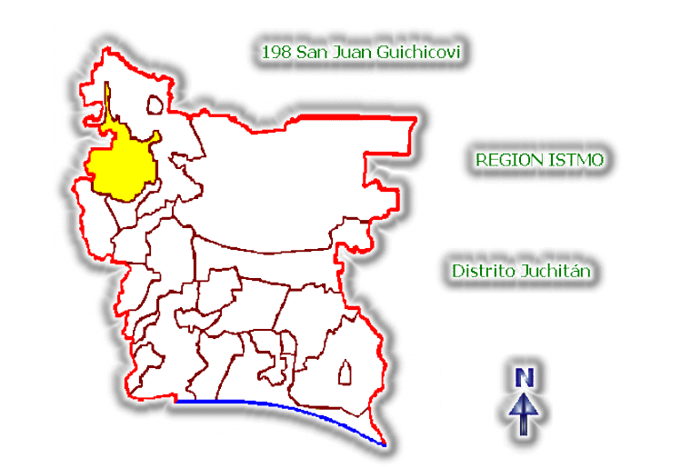
San Juan Guichicovi se encuentra enclavado entre las cuencas de los ríos Papaloapam,
Coatzacoalcos y Tehuantepec, se encuentra la zona mixe, integrada a la Sierra Madre de
Oaxaca. Su parte este (mixe baja) se sitúa completamente dentro del Istmo de Tehuantepec.
Además de los mixes, están presentes los pueblos mixtecos, chinantecos, zapotecas y
zoques.
Esta región está compuesta por 19 municipios, clasificados en tres zonas: zona alta
integrada por Tlahuitoltepec, Ayutla, Cacalotepec, Tepantlali, Tepuxtepec, Totontepec,
Tamazulapam y Mixistlán; la zona media por Ocotepec, Atitlán, Alotepec, Juquila Mixes
Camotlán, Zacatepec, Quetzaltepec, Ixcuintepec y Cotzocón; la zona baja por Mazatlán y
Guichicovi. En estos municipios se localizan 105,443 personas hablantes de lengua
indígena con sus diferentes variantes lingüísticos.
2. El desarrollo humano en la región
| N° |
Región Indígena |
Mayor Desarrollo Humano |
| 1 |
Mayo – Yaqui |
0.8465 |
| 2 |
Maya |
0.8279 |
| 3 |
Chontal de Tabasco |
0.8201 |
| 4 |
Valles Centrales |
0.8112 |
| 5 |
Purépecha |
0.7862 |
| 6 |
Istmo |
0.7681 |
| 7 |
Otomí Hidalgo-Queretaro |
0.7672 |
| 8 |
Frontera Sur |
0.7603 |
| 9 |
Popoluca-Náhuatl |
0,7554 |
| 10 |
Mazahua-Otomí |
0.7510 |
| 11 |
Sierra Norte de Puebla |
0.7441 |
| 12 |
Chinanteca |
0.7398 |
| 13 |
Tehuacán-Cuicatlán-T-O |
0.7363 |
| 14 |
Sierra de Juárez |
0.7352 |
| 15 |
Mixteca-Popoloca |
0.7344 |
| 16 |
Huasteca |
0.7262 |
| 17 |
Huicot |
0.7010 |
| 18 |
Costa y Sierra Sur |
0.6968 |
| 19 |
Mixteca |
0.6958 |
| 20 |
Tarahumara |
0.6878 |
| 21 |
Mixe |
0.6756 |
| 22 |
Altos de Chiapas |
0.6660 |
| 23 |
Selva Lacandona |
0.6515 |
| 24 |
Norte de Chiapas |
0.6496 |
| 25 |
Chimalapas |
0.6449 |
| 26 |
Montaña de Guerrero |
0.6377 |
|
|
Menor Desarrollo Humano |
La Región Indígena a la que pertenece San Juan Guichicovi, es la mixe y tiene un Índice de Desarrollo Humano medio bajo dentro de las 26 regiones indígenas que existen en el país, porque en esta zona las personas obtienen ingresos inferiores a los registrados en las regiones indígenas
del país.
Este índice se integra a partir de tres componentes:Salud, educación eingresos.No obstante, en el renglón educativo,nuestraregión
presenta una de las
más altas tasas de
analfabetismo y, muy especialmente, un índice de asistencia escolar
muy bajo.
Al interior de la Zona Húmeda del Istmo de Tehuantepec donde se encuentra enclavada
parte de la Región Mixe, San Juan Guichicovi presenta un bajo índice de Desarrollo Humano que esta por debajo de la mayoría de los municipios que conforman esta zona, sin embargo, comparado con los municipios colindantes ninguno tiene un nivel de desarrollo humano superior al de San Juan Guichicovi. Por otro lado los municipios del medio mixe tienen condiciones de desarrollo humano similares, en tanto los municipios del alto mixe tienen menor índice de desarrollo humano.
3. La marginación en la región
El Índice de Marginación se integra a partir de la evaluación de cuatro dimensiones:
Educación, Vivienda, Ingresos y Distribución de la población.
Tomando en cuenta lo anterior, el grado de marginación en los municipios de la región
mixe es generalmente muy alto.
• En educación el 47.06 % de la población mayor de 15 años son analfabetas. El
67.95% no terminó la instrucción primaria.
• En vivienda el 36.38 % carecen de agua entubada
27.77% carecen de drenaje y excusado
16.43% carecen de energía eléctrica
35.99% tienen piso de tierra.
65.27% presentan hacinamiento.
• En ingresos, 88.17 % de la población ocupada recibe 2 salarios mínimos o menos.
• En población, tenemos 76 localidades con menos de 5,000.00 habitantes.
Como se verá enseguida, para el caso específico de San Juan Guichicovi, existen
problemas a resolver en estas materias.
4. Nuestro territorio dentro de Oaxaca
San Juan Guichicovi, se localiza en la región húmeda del Istmo de Tehuantepec, a 440 metros sobre el nivel del mar, entre los 16º 57´ 42¨ de latitud Norte y 95º 05’ 35’’ de longitud Oeste, sus colindancias son las siguientes:
Al norte: Con Palomares, Agencia Municipal de Matías Romero.
Al sur: Con los municipios de Santo Domingo Petapa, Santa Maria Petapa y Matías Romero.
Al oeste: Con San Juan Mazatlán.
Al este: Con Santa Maria Chimalapa.131
La distancia de la cabecera municipal a la capital del Estado es de 361 kilómetros, la carretera está en condiciones regulares de acceso.132
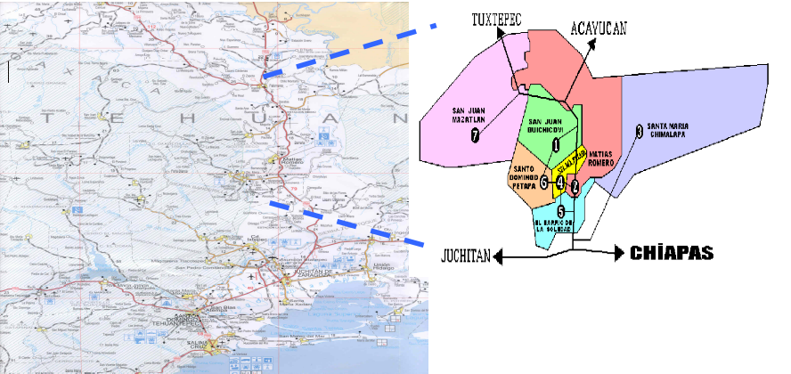
5. Orografía
Nuestro municipio se encuentra dentro de la Sierra Madre del Sur; su relieve está
caracterizado por terrenos pedregosos, rocosos con ondulaciones y mucha pendiente.
La altitud en nuestro municipio va desde los 60 a los 300 metros sobre el nivel del mar,
cuenta con elevaciones como, el Cerro Pelón, Cerro Centinela. Predominan los lomeríos,
las llanuras y las planicies.133
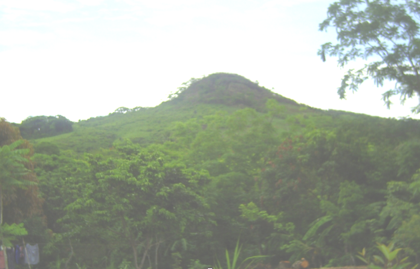
6. Hidrografía
En este municipio existen los siguientes ríos: del Corte, Sarabia, Malatengo, Pachiñé y Juñapa.
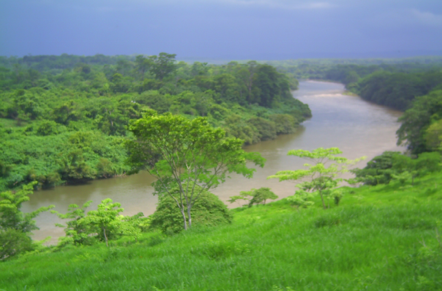
7. Clima
La barrera meteorológica formada por las sierras Orientales retiene la humedad que
propicia las altas precipitaciones en la región, esta circunstancia contribuye a la formación
de un mosaico climático, variando a unos cuantos cientos de metros según se encuentren en
las cimas de los lomeríos o en los barrancos. La temperatura media anual es de 18o C, con
un clima cálido húmedo y lluvias abundantes que abarcan de junio a octubre, con una
precipitación pluvial de 1500 a 2000 milímetros anuales. Los vientos dominantes provienen
del norte y del sur presentándose en los meses de noviembre a enero con considerable
importancia ya que los vientos del norte proporcionan humedad y los del sur resecan la
tierra. 134
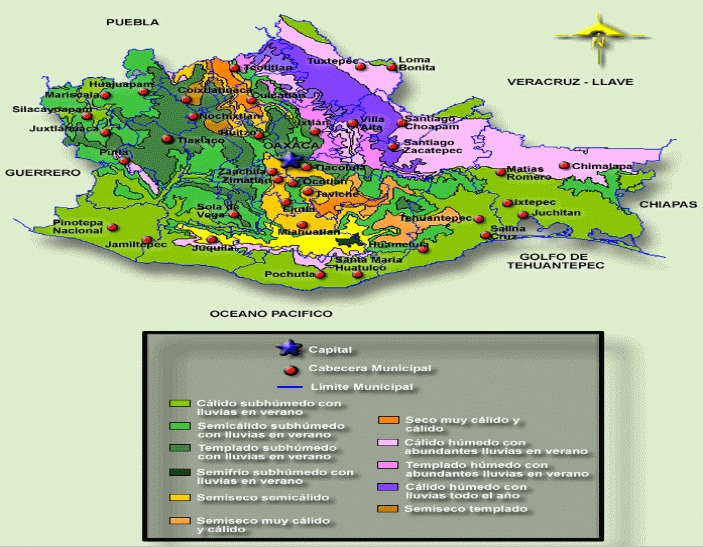
8. Vegetación
La vegetación representativa del municipio es actualmente de pastizales originada
principalmente por la deforestación. También tenemos encinales, ocotales, ceibas, caoba,
cedro, granadilla, pero solo se encuentran en manchones aislados y dispersos. Por otro lado,
la población aprovecha madera para muebles, construcción de casas, leña combustible, así
también se recolectan plantas silvestres y medicinales.135
Las especies maderables aprovechadas en menor escala son el pino, oyamel y encino para
la elaboración de muebles, leña como combustible y aserrío. La explotación maderable es
clandestina.
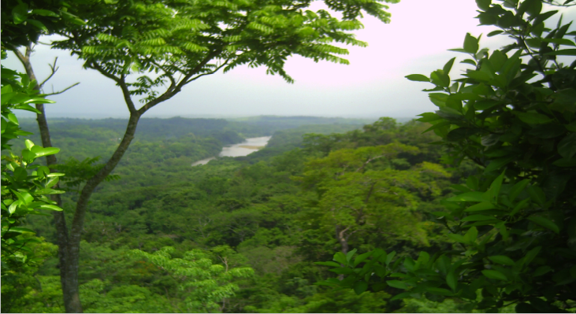
9. Fauna
Las especies silvestres representativas del municipio son las
siguientes: ardilla, murciélago, tlacuache, conejo y roedores.
Existen especies en peligro de extinción como el tepezcuintle jabalí,
leoncillo, tigrillo, tapir, oso hormiguero, mazate, venado cola blanca,
erizos, tejón, nutria, zerete, marín, armadillo, jaguar, puma, mapache,
mono araña, zorro, gato montes y ratón de monte.
Entre el grupo de aves más notables se encuentran: carpinteros,
colibríes, lechuzas, codornices, pericos, faisanes, tucanes, chachalacas,
canoras, tortolitas, perdices, loros, martín pescador, pato pichichi,
palomas, calandrias, zanate y gallinas de monte. Las aves
depredadoras: Águilas, aguilillas, gavilanes y zopilotes.
También existen anfibios y reptiles; sapos, ranas, mayaclastles,
camaleones, lagartijas, iguanas, tortugas, culebras y víboras como la
sorda, nauyaca, víbora cola blanca, mazacuata (boa), coralillo, voladora
y cascabel. Insectos como la araña, tarántula, alacrán, comején,
hormiga.136
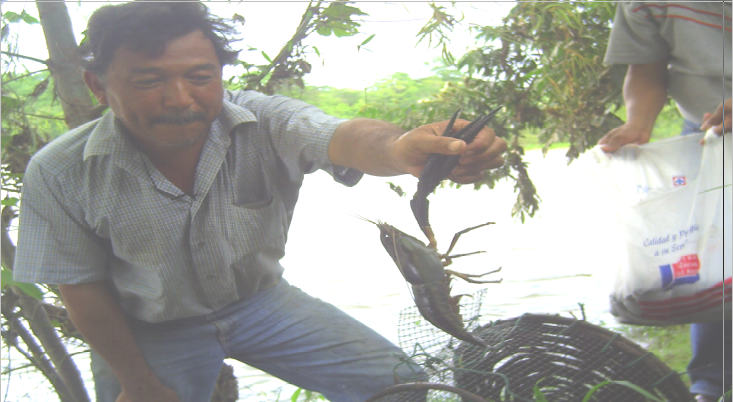
10. Minerales
El municipio de San Juan Guichicovi cuenta con un área geológicamente prospectiva de
sustancias conocidas como oro (Au). Sin embargo carecemos de estudios que permitan
conocer cual es su potencial. Además contamos con la explotación de arena, grava y piedra
de río.
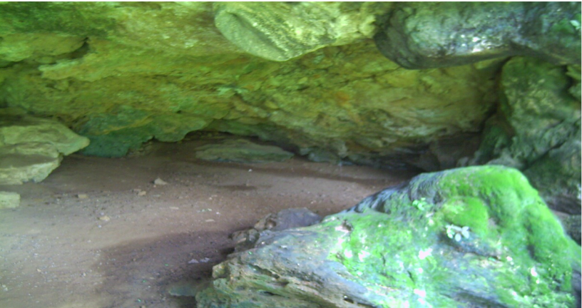
11. Población
De acuerdo al XII Censo de Población y Vivienda 2000 del INEGI, la población total
del municipio es de 27, 399 habitantes.137
12. Población
El Congreso del Estado tiene reconocidas 25 comunidades las cuales clasifica de la
siguiente manera: 8 con categoría administrativa de agencias municipales; 10 con categoría
administrativa de agencias de policía y 7 con categoría administrativa de núcleos rurales.
Nuestro Honorable Cabildo Municipal reconoce 45 localidades. Por su parte, el INEGI
tiene censadas 76 localidades o asentamientos humanos.
Cuadro 1.- Localidades del Municipio San Juan Guichicovi.138
| NOMBRE |
CATEGORIA POLITICA |
CATEGORIA ADMINISTRATIVA |
| San Juan Guichicovi |
Villa |
Agencia municipal
|
| El Zacatal |
Ranchería |
Agencia Municipal |
| El Zarzal |
Ranchería |
Agencia Municipal |
| Encinal Colorado |
Ranchería |
Agencia Municipal |
| Estación Mogoñe |
Ranchería |
Agencia Municipal |
| Estación Sarabia |
Ranchería
|
Agencia Municipal |
| Piedra Blanca |
Ranchería |
Agencia Municipal |
| Santa Ana |
Ranchería |
Agencia Municipal
|
Plan de San Luis
|
Ranchería |
Agencia Municipal |
Arroyo Lirio
|
Congregación |
Agencia de Policía |
| Boca del Monte |
Congregación |
Agencia de Policía
|
| Buena Vista |
Congregación |
Agencia de Policía |
| Chocolate |
Congregación |
Agencia de Policía |
| Mogoñe Viejo |
Congregación |
Agencia de Policía |
| Ocotal |
Congregación |
Agencia de Policía |
| Paso Real de Sarabia |
Congregación |
Agencia de Policía |
| Río Pachiñe |
Congregación |
Agencia de Policía |
| Brena Torres |
Congregación |
Agencia de Policía |
| Vicente Guerrero |
Congregación |
Agencia de Policía |
| Arroyo Limón |
Núcleo Rural
|
|
| Benito Juárez |
Núcleo Rural |
|
| Ejido la Revolución |
Núcleo Rural |
|
| El Triunfo |
Núcleo Rural
|
|
| José María Morelos |
Núcleo Rural |
|
| Ramos Millán |
Núcleo Rural |
|
| Río Guasamando |
Núcleo Rural |
|
13. Tamaño de localidades
El 100 por ciento de los habitantes de San Juan Guichicovi, vivimos en localidades pequeñas.
Cuadro 2.- Distribución de la población por tamaño de localidades.
| Tamaño de la localidad |
No. de localidades |
| De uno a 100 habitantes |
38 |
| De uno a 499 habitantes |
21 |
| De 500 a 999 habitantes |
5 |
De 1,000 a 1,999 habitantes
|
11 |
| 2,500 a 4,999 |
1 |
14. Crecimiento poblacional
La tasa anual de crecimiento poblacional del municipio para el año 2000 fue de 1.77%.
Comparativamente, la tasa de crecimiento anual para el estado de Oaxaca es de 1.3%,
mientras que la nacional es de 1.9%. Lo anterior hace prever que la población local crecerá
en menor proporción que la total de la entidad y en menor proporción que la del país.
15. Población indígena
Según estimaciones de la CDI-PNUD-CONAPO, de un total de 27,399 habitantes
20,114 son indígenas de los cuales 86.67% hablan la lengua mixe y el 2.13% son hablantes
mixtecos, lo que nos da un porcentaje de hablantes del 88.80%.
Dado el muy alto porcentaje de población indígena en el municipio, no existe una
diferencia tajante entre las condiciones de vida de los mestizos y de quienes habitan
hogares propiamente indígenas.
Por tanto, los problemas que se plantean a lo largo del presente Plan pueden considerarse
comunes a todos los habitantes del municipio.
Hombres y Mujeres
De la población total del municipio, 12,988 (47.4%) son hombres y 14,411 (52.6%) son mujeres.
Población con capacidades diferentes.
La población con capacidades diferentes asciende a 663 personas, las cuales presentan
alguna de las siguientes discapacidades: Motriz, 25.9%; Lenguaje, 22%; Auditiva, 13.4%;
Mental, 6.1%; Visual, 5.8%.
16. Población que trabaja
De cada 100 personas mayores de 12 años, 43 participan en actividades productivas, de
estas el 0.268% se encontraban desocupadas al momento del censo.139
Sin embargo, la mayor parte de los que realizamos alguna actividad productiva no
percibimos ingresos económicos (55.84%), ya que casi todos nos dedicamos a la
producción agrícola y no percibimos un salario.
El sector económico más importante en el municipio es el primario, con el 57.65% de la
PEA (Población Económicamente Activa), y en segundo término el secundario con el
21.71%.140
Las principales actividades a que se dedican las personas en el municipio son la agricultura,
ganadería, artesanías y comercio.
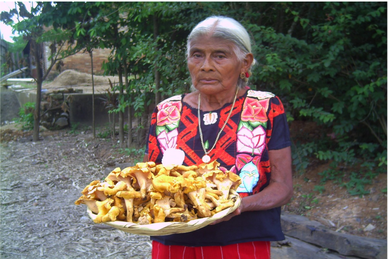
17. Nuestras tierras
La forma predominante de tenencia de la tierra es la ejidal. Los habitantes con parcela
ascienden a 3,056 personas, con un promedio de 13.28 hectáreas por productor y un total de
40,601.52 hectáreas.141
Los problemas de linderos existentes son con el Ejido el Zacatal, con una superficie en
conflicto de 458 hectáreas; con la colonia agrícola y ganadera El Sacrificio, por una
superficie en conflicto de 35 hectáreas, y con el propietario Erasmo Vallejo de la
comunidad de Estación Mogoñé 15 hectáreas sobre la superficie en conflicto. Estos tres
conflictos tienen una antigüedad de 65 años, sin que se hayan resuelto, aunque cabe señalar
que no se han registrado enfrentamientos violentos.142
18. Población agrícola
De un total de tierras de 76, 393 hectáreas solo se destina a la agricultura 25,477
hectáreas, lo que representa el 33.34% de la superficie del municipio, 3,427 hectáreas son
unidades de producción Rural, con un promedio de 13.28 hectáreas por productor o
beneficiario.143
Las características predominantes de los terrenos destinados a la agricultura son: suelos
ácidos de zonas tropicales y suelos de climas lluviosos que favorecen al crecimiento de los
productos.
Las características principales de la agricultura son: casi en su totalidad la superficie es
destinada a la agricultura de temporal y una pequeña superficie con riego que representa el
0.423% y que corresponde a los ranchos particulares; de las 3,439 unidades de producción
el 58.33% utiliza alguna tecnología agrícola, de estas el 38.26% utilizan fertilizantes
químicos y el 0.52% utilizan asistencia técnica pagada.
Tradicionalmente en este municipio por su topografía se lleva a cabo la siembra con
espeque, en los ranchos se llega a utilizar tractor, y en algunos casos se práctica la roza,
tumba y quema, causando deforestación por un mal manejo del mismo, 144 esta práctica se
realiza en los potreros mencionados.
Los principales cultivos anuales establecidos en el 2003 fueron en el ciclo otoño-invierno,
el maíz con 2,386 hectáreas sembradas, el frijol con 1,100 hectáreas sembradas y el tomate
con 10 hectáreas sembradas; mientras que los principales cultivos perennes son el café con
800 hectáreas sembradas y con un rendimiento de 1.5 toneladas por hectárea; naranja con
800 hectáreas sembradas y rendimiento de 12.5 toneladas por hectárea y plátano con 50
hectáreas sembradas y rendimiento de 6.5 toneladas por hectárea.145
En general los rendimientos de nuestros cultivos son bajos, comparados con los promedios
nacional y estatal.
Actualmente Organizaciones Sociales como la UCIZONI, están capacitando a promotores
rurales para impulsar proyectos de composta o abono orgánico y así evitar en forma
paulatina el uso de fertilizantes químicos. Por el uso de herbicidas se ha disminuido la
presencia de plantas ya sea alimenticias como el quelite, hierba mora, chipiles, pápalo
quelite o de uso en la medicina tradicional.
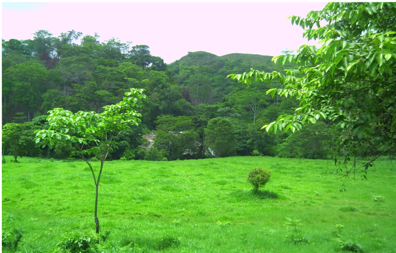
19. Aprovechamiento del bosque
Nuestros bosques actualmente se encuentran degradados en manchones aislados aprovechándose lo poco que queda en forma clandestina, trabajándose como: madera de aserrío, postería, leña; los productos no maderables son hongos y barbasco en menor escala o de autoconsumo. No contamos con unidades de aprovechamiento forestal.146
20. Ganadería
La ganadería mayor se esta transformando de actividad complementaria en actividad
primaria estando casi en igualdad con la agricultura, lo que trae como consecuencia que se
esté desplazando a la vegetación natural por pastos mejorados y con ello se está
deforestando. También se cría y reproduce a nivel de traspatio o familiar, aves, cerdos,
borregos y chivos. Esta actividad la consideramos como un complemento de nuestra
alimentación e ingresos familiares.
La especie animal que se cría en mayor cantidad es el ganado bovino, seguida de ovino. La
cría de cerdos, aves, borregos, caballos, mulas, son de traspatio sin uso alguno de
tecnología. En la cría de bovinos, se utiliza el sistema de pastoreo en potreros y en algunos
casos cuentan con baño garrapaticida, bordo para abrevadero y venta de ganado en pie,
además de practicarse la quema de los pastos. El INEGI reporta 2,675 unidades de
producción ganadera y solo el 0.52 utilizan asistencia técnica pagada.147
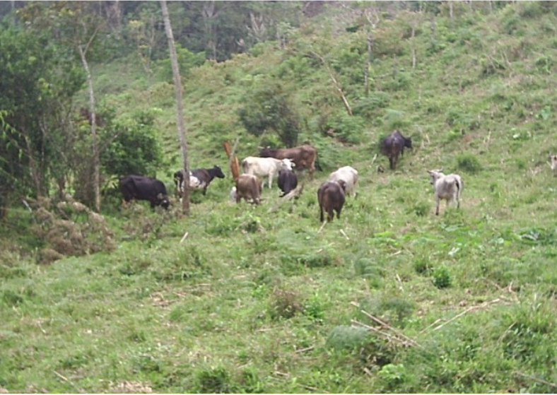
21. Trabajos en servicios y en industria
Respecto de la industria manufacturera se elaboran productos como son: Prendas de vestir
típicas (huipiles), elaboración y producción de totopos y elaboración de queso y quesillo,
además se cuenta con comercios como molinos, panaderías, tortilladoras; que en total
ocupan el 40% de la población económicamente activa. 148
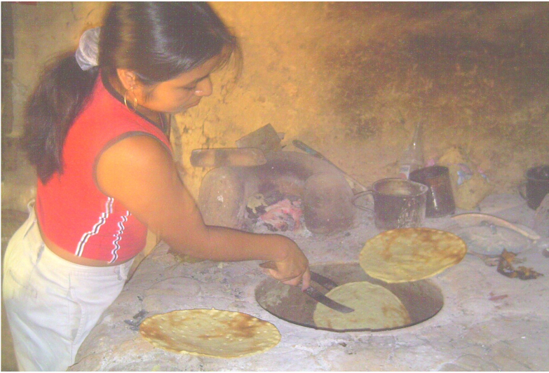
22. Artesanías
Las artesanías cubren un doble papel en la vida comunitaria, ya que además de ser fuente
de ingresos, también son una expresión cultural de la comunidad.
La población que se dedica a la elaboración de artesanías asciende a 30 familias
aproximadamente, según datos del ayuntamiento.
Las artesanías que se elaboran son trajes regionales, con bordado a máquina, a mano y de
cadenilla. La adquisición de la materia prima se realiza en forma grupal, en la cabecera
distrital Juchitán de Zaragoza, que se localiza a dos horas del municipio sobre la carretera
transístmica. 149
23. Comercio
En el municipio se encuentran los siguientes comercios: misceláneas, abarrotes, farmacias,
mercado, tortillerías, panadería, camionetas de carga mixta, ferreterías, teléfono público,
Internet, ocupando el primer lugar dentro de las actividades económicas del municipio.
Los días de plaza son los domingos, además de que se cuenta con instalaciones de mercado
fijo donde comercializan principalmente los siguientes productos: frutas y verduras, ropa,
utensilios domésticos. A dicho mercado acuden vendedores de otras comunidades como
son: el Zarzal, Zacatal, Encinal, Mogoñé, San Juan Viejo, Chocolate, así como algunos
compradores de Matías Romero y Palomares entre otros, respecto al ganado este se compra
en pie en los ranchos de los ganaderos o en lugares donde pactan reunirse tanto vendedores
como compradores.150
El total de unidades económicas en el municipio, tanto de actividades al mayoreo como al
menudeo es de 43, ocupando a 48 personas, de las cuales 28 obtienen una remuneración.151
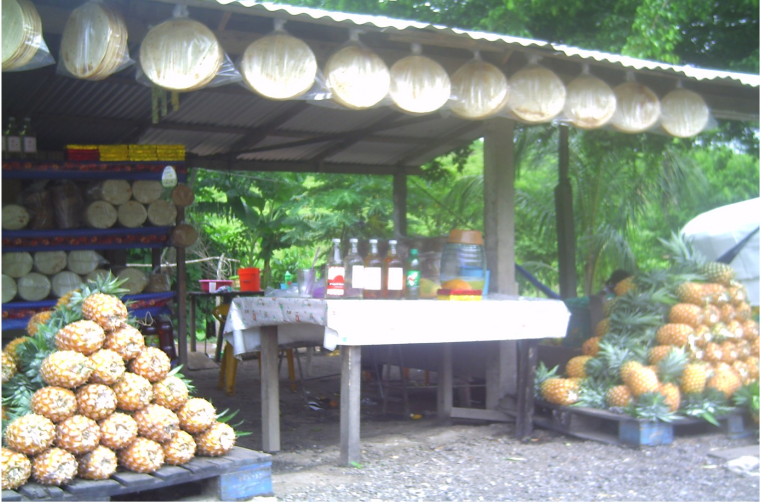
24. Transporte
Los servicios de transporte en el municipio son camionetas de servicios múltiples que son
de propiedad particular, con dos líneas existentes: UCEM (Unión de Comunidades Ejidales
y Municipales y UTEM (Unión de transportistas Ejidales y Municipales), cuyas rutas son
de San Juan Guichicovi a Matías Romero; a Ocotal, Zacatal y Platanillo, a Río Pachiñé,
Encinal y Huisicil. Además de taxis particulares con la ruta de San Juan Guichicovi a la
desviación de Mogoñé Viejo.152
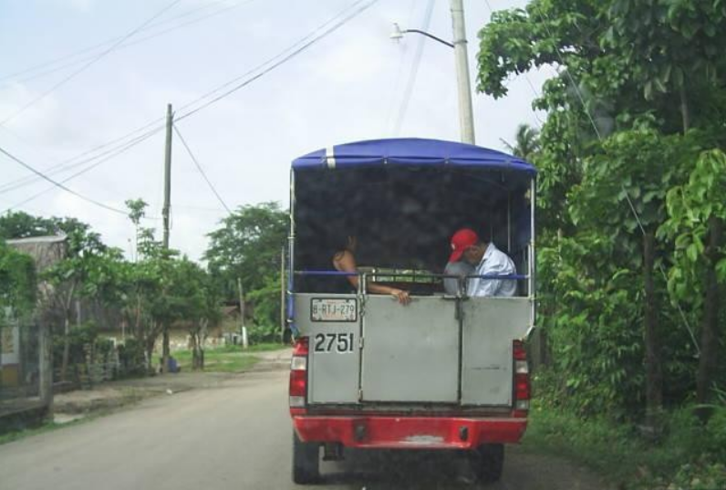